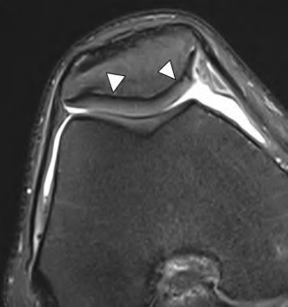
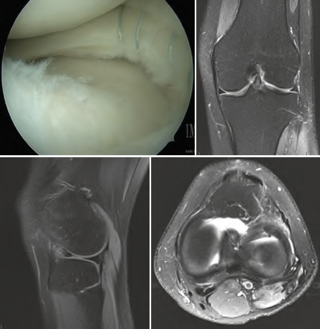
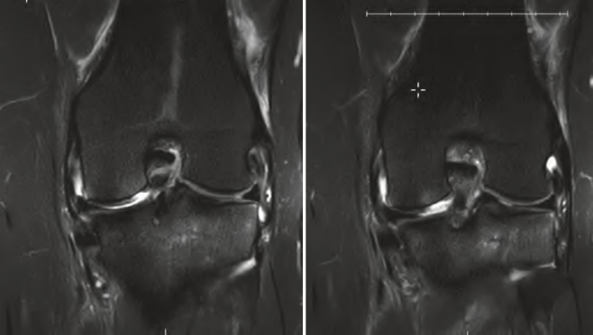
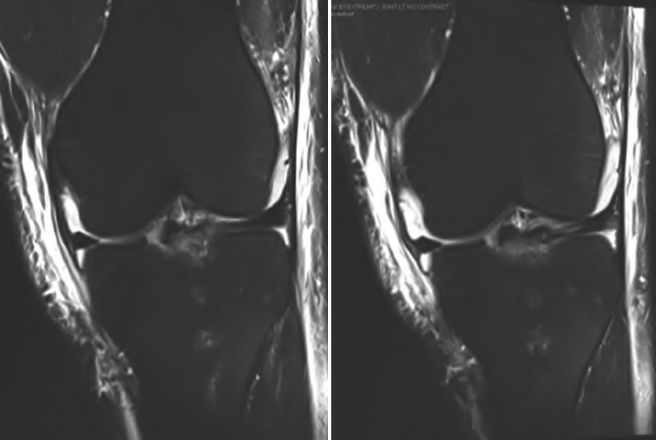
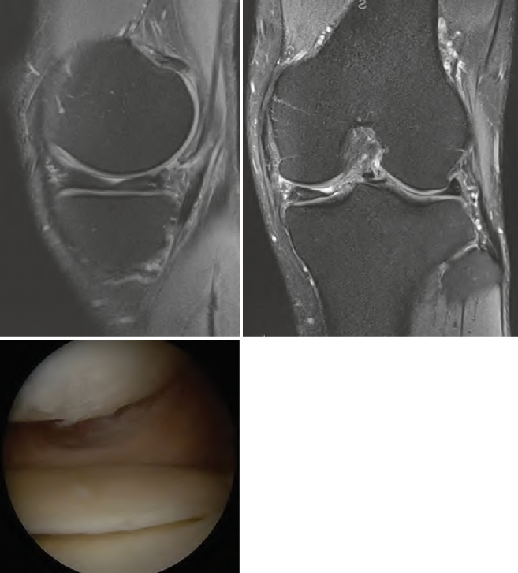
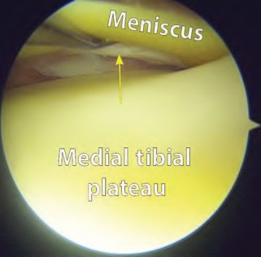
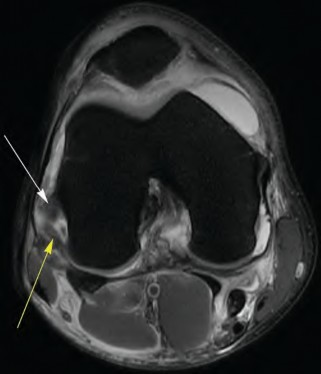
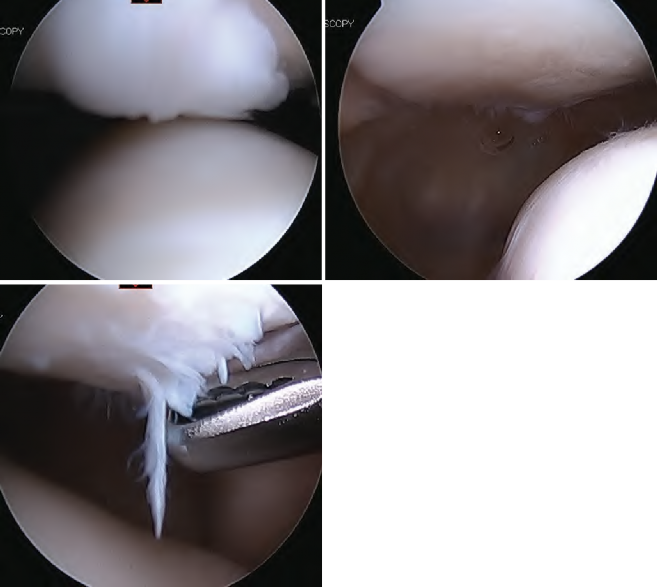

MRI-Arthroscopy Correlations

Brian C. Werner
MRI-Arthroscopy Correlations
A Case-Based Atlas of the Knee, Shoulder, Elbow, Hip and Ankle

Editor
Brian C. Werner
Department of Orthopedic Surgery University of Virginia Charlottesville, VA, USA
ISBN 978-3-030-94788-0 ISBN 978-3-030-94789-7 (eBook)
https://doi.org/10.1007/978-3-030-94789-7
© The Editor(s) (if applicable) and The Author(s), under exclusive license to Springer Nature Switzerland AG 2015, 2022
This work is subject to copyright. All rights are solely and exclusively licensed by the Publisher, whether the whole or part of the material is concerned, specifically the rights of translation, reprinting, reuse of illustrations, recitation, broadcasting, reproduction on microfilms or in any other physical way, and transmission or information storage and retrieval, electronic adaptation, computer software, or by similar or dissimilar methodology now known or hereafter developed.
The use of general descriptive names, registered names, trademarks, service marks, etc. in this publication does not imply, even in the absence of a specific statement, that such names are exempt from the relevant protective laws and regulations and therefore free for general use.
The publisher, the authors and the editors are safe to assume that the advice and information in this book are believed to be true and accurate at the date of publication. Neither the publisher nor the authors or the editors give a warranty, expressed or implied, with respect to the material contained herein or for any errors or omissions that may have been made. The publisher remains neutral with regard to jurisdictional claims in published maps and institutional affiliations.
This Springer imprint is published by the registered company Springer Nature Switzerland AG The registered company address is: Gewerbestrasse 11, 6330 Cham, Switzerland
To my wife Lauren, whom I love and appreciate the sacrifices she has made to allow me to spend countless hours caring for patients and performing research
To my children, Benjamin and Wyatt, who always keep my life interesting.
To all of my mentors, past and present, who have helped me become who I am and will shape my future in orthopedic surgery

Preface
The advent of magnetic resonance imaging scanning and the development of arthroscopic surgical techniques are the two principal events responsible for revolutionizing sports medi- cine to where it is today. The confluence of these two entities spans two specialties, orthopedic surgery and radiology, and allows for increasingly accurate diagnosis of pathology and advanced treatment options to aid in optimizing patient outcomes and recovery.
This second edition text, MRI-Arthroscopy Correlations, is developed to represent a micro- cosm of daily patient care. By aligning the MRI findings associated with the spectrum of problems seen in the most commonly treated joints in sports medicine with the diagnostic findings seen during arthroscopy of the same joint in the same patient, the reader is able to correlate this pathology and apply these findings to the clinic, the radiology reading room, or the operating suite. At our institution, we have found this type of interactive correlation to be an exceedingly effective tool for education and continued learning, an impetus for interdisci- plinary research collaboration, and a critical part of our approach to optimum patient care. Furthermore, we have found this case-based correlation between MRI imaging and arthroscopic findings and treatment to be a well-received and effective method for teaching and discussion at meetings and instructional courses.
We have organized this second edition book into five parts highlighting the five major joints in which MRI and arthroscopy are most commonly used in sports medicine: knee, shoulder, elbow, hip, and, new for this edition, the ankle. Each of the section editors, Dr. Gehron Treme (knee), Dr. Felix H. “Buddy” Savoie III and Dr. Michael J. O’Brien (elbow), Dr. Dustin Richter (hip), Dr. Norman Waldrop III (ankle), and I (shoulder), are nationally recognized experts, teachers, and pioneers in their respective areas of sports medicine and have covered the gamut of topics in each of their parts. Chapters are formatted to present an overview of the specific disease entity first, followed by selected cases chosen by the chapter authors that best illustrate common or noteworthy disease entities or pathology with an emphasis on the parallel MRI imaging and arthroscopic findings.
I want to thank my section editors for their tremendous contributions to this book, and I also want to thank the many contributing authors for volunteering their time, expertise, and cases to make this book successful.
We hope you find this updated book interesting and educational and that it fosters similar collaboration in your practices and institutions.
Charlottesville, VA, USA Brian C. Werner
vii

Contents
MR Imaging for the Orthopedic Surgeon 1
Michael T. Perry and Mark W. Anderson
Gehron P. Treme
Diagnostic Knee Arthroscopy and Arthroscopic Anatomy 19
Allicia O. Imada, Henry B. Ellis, and Marc Tompkins
Meniscus Tear MRI Correlation 31
Filip Holy, Aamir N. Ahmad, Dustin L. Richter, and Gehron P. Treme
Adam M. Lindsay, Brian C. Domby, and Eric C. McCarty
Anterior Cruciate Ligament Injury and Reconstruction 69
Justin W. Griffin, Mark D. Miller, Abbey DeBruin, Emma Klosterman, Clint Benge, and Geoffrey S. Baer
Posterior Cruciate Ligament 87
Christopher A. Schneble, Gregory C. Fanelli, and Michael J. Medvecky
Medial Collateral Ligament Injuries of the Knee 101
Gehron P. Treme, Kathryn Yeager, and Audrey Wassef
The Posterolateral Corner of the Knee 111
Ariel N. Rodriguez, Mark T. Banovetz, and Robert F. LaPrade
R. Pearson Gean and David R. Diduch
Synovial Pathology in the Knee 141
Arianna L. Gianakos, Liam A. Peebles, John Yurek, Tae Won B. Kim, and Mary K. Mulcahey
Brian C. Werner
Diagnostic Shoulder Arthroscopy and Arthroscopic Anatomy 155
Neil P. Blanchard and Stephen F. Brockmeier
MRI-Arthroscopy Correlations in Anterior Shoulder Instability 167
Tyler J. Uppstrom, Harry G. Greditzer IV, and Samuel A. Taylor
Posterior Shoulder Instability and Labral Pathology 183
Olivia C. O’Reilly, Matthew B. Behrens, Trevor R. Gulbrandsen, and Brian R. Wolf
ix

Robert Z. Tashjian and Karch M. Smith
SLAP Lesions and Biceps Tendon Pathology 215
Ian A. Backlund and Brian C. Werner
MRI-Arthroscopy Correlations in the Overhead Athlete 233
Rebecca Griffith and Seth C. Gamradt
Frozen Shoulder 247
James R. Satalich, Prayag Pershad, and Alexander R. Vap
Disorders of the AC Joint and Suprascapular Nerve Compression Syndrome 257
Brian M. Cash, Claire D. Eliasberg, and Joshua S. Dines
Imaging Evaluation of the Painful or Failed Shoulder Arthroplasty 271
Lawrence V. Gulotta and Gabrielle Konin
Felix H. Savoie III and Michael J. O’Brien
Diagnostic Elbow Arthroscopy and Arthroscopic Anatomy 285
J. Heath Wilder, Akshar H. Patel, Felix H. Savoie III, and Michael J. O’Brien
Lateral and Medial Epicondylitis 301
Travis R. Flick, Tessa R. Lavorgna, Felix H. Savoie III, and Michael J. O’Brien
Elbow Injuries in the Overhead Athlete: MUCL Avulsion and Tears 311
Akshar H. Patel, Aaron Cotton-Betteridge, Felix H. Savoie III, and Michael J. O’Brien
Osteochondritis Dissecans in the Elbow 329
Benjamin R. Graves, Alexus M. Cooper, J. Hunter Matthews, Brian R. Waterman, and John D. King
The Elbow: Degenerative and Inflammatory Arthritis 343
Gray McClatchy, Steven A. Giuseffi, and Larry D. Field
Elbow Trauma and Arthrofibrosis 351
Brandon A. Romero and G. Russell Huffman
Other Entities: Heterotopic Ossification, Triceps, and Plica 363
Thomas Hodo, Michael J. O’Brien, and Felix H. Savoie III
Lateral Elbow Ligamentous Injury: PLRI and Spectrum of Lateral Elbow Ligamentous Injuries 381
Joshua Szabo and Felix H. Savoie III
Dustin L. Richter
Diagnostic Hip Arthroscopy 399
Wihan du Plessis, Thomas E. Moran, and F. Winston Gwathmey
Femoroacetabular Impingement: Labrum, Articular Cartilage 415
Bryce N. Clinger, Jonathan L. Tobey, and Dustin L. Richter
Femoroacetabular Impingement: Femoral Morphology and Correction 425
Erik Therrien, Anthony Fiegen, Aaron Krych, and Bruce Levy

Acetabular Fossa, Femoral Fovea, and the Ligamentum Teres 441
Ryan S. Selley, Syian Srikumar, Erica L. Swartwout, Jacob D. Feingold, and Anil S. Ranawat
Traumatic and Atraumatic Hip Instability 453
Allan K. Metz, Alexander J. Mortensen, Devin L. Froerer, and Stephen K. Aoki
Peritrochanteric Space Disorders: Anatomy and Management 465
Benjamin G. Domb, Payam W. Sabetian, and Kara Miecznikowski
Proximal Hamstring Pathology and Endoscopic Management 481
Derrick M. Knapik, Lakshmanan Sivasundaram, Thomas D. Alter, and Shane J. Nho
Core Muscle Injury: Evaluation and Management 495
Christopher M. McDowell, Edward G. Appelbaum, and Brian D. Busconi
Kade McQuivey and Kostas Economopoulos
Norman E. Waldrop III
Ankle Arthroscopy for Ankle Instability 519
Brian M. Fisher and Jonathon D. Backus
Osteochondral Lesions of the Talus 533
Tyler Fraser, Eric Giza, and Christopher Kreulen
Posterior Ankle and Hindfoot Endoscopy 541
M. Truitt Cooper and Joseph S. Park
Carroll P. Jones and Charles C. Pitts
Index 563

Contributors
Aamir N. Ahmad, MD Department of Orthopaedic Surgery and Rehabilitation, University of New Mexico, Albuquerque, NM, USA
Thomas D. Alter, BS Department of Orthopaedic Surgery, Section of Young Adult Hip Surgery, Division of Sports Medicine, Rush Medical College of Rush University, Rush University Medical Center, Chicago, IL, USA
Mark W. Anderson, MD Department of Radiology and Medical Imaging, University of Virginia, Charlottesville, VA, USA
Stephen K. Aoki, MD Department of Orthopaedics, University of Utah, Salt Lake City, UT, USA
Edward G. Appelbaum, DO Department of Orthopaedics, UMass Memorial Medical Center, Worcester, MA, USA
Ian A. Backlund, MD Department of Orthopaedic Surgery, University of Virginia School of Medicine, Charlottesville, VA, USA
Jonathon D. Backus, MD Department of Orthopaedic Surgery, Washington University in St. Louis School of Medicine, St. Louis, MO, USA
Geoffrey S. Baer, MD, PhD Department of Orthopaedics and Rehabilitation, UW Health, University of Wisconsin, Madison, WI, USA
Mark T. Banovetz, BS Twin Cities Orthopaedics, Edina-Crosstown, Edina, MN, USA
Matthew B. Behrens, MS Carver College of Medicine, University of Iowa, Iowa City, IA, USA
Clint Benge, MD Department of Orthopaedics and Rehabilitation, UW Health, University of Wisconsin, Madison, WI, USA
Neil P. Blanchard, MD Department of Orthopaedic Surgery, University of Virginia Medical Center, Charlottesville, VA, USA
Stephen F. Brockmeier, MD Department of Orthopaedic Surgery, University of Virginia, Charlottesville, VA, USA
Brian D. Busconi, MD Department of Orthopaedics, UMass Memorial Medical Center, Worcester, MA, USA
Brian M. Cash, MD Department of Orthopaedic Surgery and Sports Medicine, Hospital for Special Surgery, New York, NY, USA
Bryce N. Clinger, MD Department of Orthopaedic Surgery and Rehabilitation, University of New Mexico, Albuquerque, NM, USA
Alexus M. Cooper, MD Department of Orthopaedic Surgery, Wake Forest School of Medicine, Medical Plaza Boulevard, Winston Salem, NC, USA
xiii

M. Truitt Cooper, MD Department of Orthopaedic Surgery, University of Virginia, Charlottesville, VA, USA
Aaron Cotton-Betteridge, BS Tulane University School of Medicine, New Orleans, LA, USA
Abbey DeBruin, MD Department of Orthopaedics and Rehabilitation, UW Health, University of Wisconsin, Madison, WI, USA
David R. Diduch, MD, MS Department of Orthopaedic Surgery, University of Virginia Health System, Charlottesville, VA, USA
Joshua S. Dines, MD Department of Orthopaedic Surgery and Sports Medicine, Hospital for Special Surgery, New York, NY, USA
Benjamin G. Domb, MD American Hip Institute Research Foundation, Chicago, IL, USA
Brian C. Domby, MD Department of Orthopedics, Sports Medicine, University of Colorado School of Medicine, Boulder, CO, USA
Wihan du Plessis, BS Eastern Virginia Medical School, Norfolk, VA, USA
Kostas Economopoulos, MD Department of Orthopedic Surgery, Division of Sports Medicine, Mayo Clinic Arizona, Phoenix, AZ, USA
Claire D. Eliasberg, MD Department of Orthopaedic Surgery and Sports Medicine, Hospital for Special Surgery, New York, NY, USA
Henry B. Ellis, MD Department of Orthopaedic Surgery, Texas Scottish Rite Hospital for Children, University of Texas Southwestern, Dallas, TX, USA
Gregory C. Fanelli, MD Geisinger Health System Sports Medicine and Orthopaedic Surgery, Danville, PA, USA
Jacob D. Feingold, BS Department of Orthopaedic Surgery and Sports Medicine, Hospital for Special Surgery, New York, NY, USA
Anthony Fiegen, MD Department of Orthopedic Surgery, Mayo Clinic, Rochester, MN, USA
Larry D. Field, MD Mississippi Sports Medicine and Orthopedic Center, Jackson, MS, USA
Brian M. Fisher, MD Department of Orthopaedic Surgery, Prisma Health-Upstate, Greenville, SC, USA
Travis R. Flick, MD Department of Orthopedic Surgery, Sanford Health, University of North Dakota, School of Medicine & Health Sciences, Grand Forks, ND, USA
Tyler Fraser, MD OrthoSouth, Memphis, TN, USA
Devin L. Froerer, BS Department of Orthopaedics, University of Utah, Salt Lake City, UT, USA
Seth C. Gamradt, MD Keck Medical Center of USC, University of Southern California, Los Angeles, CA, USA
R. Pearson Gean, MD Department of Orthopaedic Surgery, University of Virginia Hospital, Charlottesville, VA, USA
Arianna L. Gianakos, DO Department of Orthopaedic Surgery, Harvard-Massachusetts General Hospital, Boston, MA, USA
Steven A. Giuseffi, MD Mississippi Sports Medicine and Orthopedic Center, Jackson, MS, USA

Eric Giza, MD Department of Orthopaedics, University of California, Davis, Sacramento, CA, USA
Benjamin R. Graves, MD Department of Orthopaedic Surgery, Wake Forest School of Medicine, Medical Plaza Boulevard, Winston Salem, NC, USA
Harry G. Greditzer IV, MD Department of Radiology and Imaging, Hospital for Special Surgery, New York, NY, USA
Justin W. Griffin, MD Department of Orthopaedic Surgery, University of Virginia Health System, Charlottesville, VA, USA
Rebecca Griffith, MD Beaver Medical Group, Department of Orthopaedic Surgery, Highland, CA, USA
Trevor R. Gulbrandsen, MD Department of Orthopaedics and Rehabilitation, University of Iowa, Iowa City, IA, USA
Lawrence V. Gulotta, MD Shoulder and Elbow Division of the Sports Medicine Institute, Hospital for Special Surgery, New York, NY, USA
F. Winston Gwathmey, MD Department of Orthopaedic Surgery, University of Virginia, Charlottesville, VA, USA
Thomas Hodo, MD, MS Department of Orthopaedic Surgery, Tulane University School of Medicine, Tulane Medical Center, New Orleans, LA, USA
Filip Holy, MD Department of Orthopaedic Surgery and Rehabilitation, University of New Mexico, Albuquerque, NM, USA
G. Russell Huffman, MD, MPH Department of Orthopaedic Surgery, Division of Shoulder and Elbow Surgery, University of Pennsylvania, Philadelphia, PA, USA
Allicia O. Imada, MD Department of Orthopaedic Surgery, University of New Mexico, Albuquerque, NM, USA
Carroll P. Jones, MD OrthoCarolina, Charlotte, NC, USA
Tae Won B. Kim, MD Department of Orthopaedic Surgery, Cooper Medical School of Rowan University, Camden, NJ, USA
John D. King, MD Department of Orthopaedic Surgery, Wake Forest School of Medicine, Medical Plaza Boulevard, Winston Salem, NC, USA
Emma Klosterman, MD Department of Orthopaedics and Rehabilitation, UW Health, University of Wisconsin, Madison, WI, USA
Derrick M. Knapik, MD Department of Orthopaedic Surgery, Washington University and Barnes-Jewish Orthopaedic Center, Washington University, Chesterfield, MO, USA
Gabrielle Konin, MD Department of Radiology and Imaging, Hospital for Special Surgery, New York, NY, USA
Christopher Kreulen, MD, MS Department of Orthopaedic Surgery, University of California, Davis, Sacramento, CA, USA
Aaron Krych, MD Department of Orthopedics and Sports Medicine, Mayo Clinic, Rochester, MN, USA
Robert F. LaPrade, MD, PhD Twin Cities Orthopaedics, Edina-Crosstown, Edina, MN, USA

Tessa R. Lavorgna, BS Department of Orthopaedic Surgery, Tulane University School of Medicine, Tulane Medical Center, New Orleans, LA, USA
Bruce Levy, MD Department of Orthopedic Surgery and Sports Medicine, Mayo Clinic, Rochester, MN, USA
Adam M. Lindsay, MD, MS Department of Orthopedics, Sports Medicine, University of Colorado School of Medicine, Boulder, CO, USA
J. Hunter Matthews, MD Department of Orthopaedic Surgery, Wake Forest School of Medicine, Medical Plaza Boulevard, Winston Salem, NC, USA
Eric C. McCarty, MD Department of Orthopedics, Sports Medicine, University of Colorado School of Medicine, Boulder, CO, USA
S. Gray McClatchy, MD Mississippi Sports Medicine and Orthopedic Center, Jackson, MS, USA
Christopher M. McDowell, DO Department of Orthopaedics, UMass Memorial Medical Center, Worcester, MA, USA
Kade McQuivey, MD Department of Orthopaedic Surgery, Mayo Clinic Arizona, Phoenix, AZ, USA
Michael J. Medvecky, MD, FAAOS, FAOA Department of Orthopaedics & Rehabilitation, Section of Sports Medicine, Yale School of Medicine, New Haven, CT, USA
Allan K. Metz, BS Department of Orthopaedics, University of Utah, Salt Lake City, UT, USA
Kara Miecznikowski, BS American Hip Institute Research Foundation, Chicago, IL, USA
Mark D. Miller, MD Department of Orthopaedic Surgery, University of Virginia Health System, Charlottesville, VA, USA
Thomas E. Moran, MD Department of Orthopaedic Surgery, University of Virginia, Charlottesville, VA, USA
Alexander J. Mortensen, MD Department of Orthopaedics, University of Utah, Salt Lake City, UT, USA
Mary K. Mulcahey, MD Department of Orthopaedic Surgery, Tulane University School of Medicine, New Orleans, LA, USA
Shane J. Nho, MD, MS Department of Orthopaedic Surgery, Section of Young Adult Hip Surgery, Division of Sports Medicine, Rush Medical College of Rush University, Rush University Medical Center, Chicago, IL, USA
Michael J. O’Brien, MD Department of Orthopaedic Surgery, Tulane University School of Medicine, New Orleans, LA, USA
Olivia C. O’Reilly, MD Department of Orthopaedics and Rehabilitation, University of Iowa, Iowa City, IA, USA
Joseph S. Park, MD Department of Orthopaedic Surgery, University of Virginia, Charlottesville, VA, USA
Akshar H. Patel, MD Department of Orthopaedic Surgery, Tulane University School of Medicine, New Orleans, LA, USA
Liam A. Peebles, BA Department of Orthopaedic Surgery, Tulane University School of Medicine, New Orleans, LA, USA

Michael T. Perry, MD Department of Radiology and Medical Imaging, University of Virginia, Charlottesville, VA, USA
Prayag Pershad, BS Department of Orthopaedic Surgery, VCU School of Medicine, Virginia Commonwealth University, West Hospital, Richmond, VA, USA
Charles C. Pitts, MD OrthoCarolina, Charlotte, NC, USA
Anil S. Ranawat, MD Department of Orthopaedic Surgery and Sports Medicine, Hospital for Special Surgery, New York, NY, USA
Dustin L. Richter, MD Department of Orthopaedic Surgery and Rehabilitation, University of New Mexico, Albuquerque, NM, USA
Ariel N. Rodriguez, MS Twin Cities Orthopaedics, Edina-Crosstown, Edina, MN, USA
Brandon A. Romero, MD Department of Orthopaedic Surgery, Division of Shoulder and Elbow Surgery, University of Pennsylvania, Philadelphia, PA, USA
Payam W. Sabetian, MD American Hip Institute Research Foundation, Chicago, IL, USA
James R. Satalich, MD VCU Department of Orthopaedic Surgery, Virginia Commonwealth University, Richmond, VA, USA
Felix H. Savoie III, MD Department of Orthopaedic Surgery, Tulane University School of Medicine, New Orleans, LA, USA
Christopher A. Schneble, MD Department of Orthopaedics and Rehabilitation, Yale School of Medicine, Yale New Haven Hospital, New Haven, CT, USA
Ryan S. Selley, MD Department of Orthopaedic Surgery and Sports Medicine, Hospital for Special Surgery, New York, NY, USA
Lakshmanan Sivasundaram, MD Department of Orthopaedic Surgery, Section of Young Adult Hip Surgery, Division of Sports Medicine, Rush Medical College of Rush University, Rush University Medical Center, Chicago, IL, USA
Karch M. Smith Department of Orthopaedic Surgery, University of Utah, Salt Lake City, UT, USA
Syian Srikumar, BS Department of Orthopaedic Surgery and Sports Medicine, Hospital for Special Surgery, New York, NY, USA
Erica L. Swartwout, BA Department of Orthopaedic Surgery and Sports Medicine, Hospital for Special Surgery, New York, NY, USA
S. Joshua Szabo, MD Department of Orthopaedic Surgery, University of Pittsburgh Medical Center, Pittsburgh, PA, USA
Robert Z. Tashjian Department of Orthopaedic Surgery, University of Utah, Salt Lake City, UT, USA
Samuel A. Taylor, MD Department of Orthopedic Surgery and Sports Medicine, Hospital for Special Surgery, New York, NY, USA
Erik Therrien, MD Department of Orthopedics and Sports Medicine, Mayo Clinic, Rochester, MN, USA
Jonathan L. Tobey, MD Department of Orthopaedic Surgery and Rehabilitation, University of New Mexico, Albuquerque, NM, USA
Marc Tompkins, MD Department of Orthopaedic Surgery, University of Minnesota, Minneapolis, MN, USA

Gehron P. Treme, MD Department of Orthopaedic Surgery and Rehabilitation, University of New Mexico, Albuquerque, NM, USA
Tyler J. Uppstrom, MD Department of Orthopedic Surgery and Sports Medicine, Hospital for Special Surgery, New York, NY, USA
Alexander R. Vap, MD Department of Orthopaedic Surgery, VCU School of Medicine, Virginia Commonwealth University, West Hospital, Richmond, VA, USA
Audrey Wassef, MD Department of Orthopaedic Surgery and Rehabilitation, University of New Mexico, Albuquerque, NM, USA
Brian R. Waterman, MD Department of Orthopaedic Surgery, Wake Forest School of Medicine, Medical Plaza Boulevard, Winston Salem, NC, USA
Brian C. Werner, MD Department of Orthopedic Surgery, University of Virginia, Charlottesville, VA, USA
J. Heath Wilder, MD Department of Orthopaedic Surgery, Tulane University School of Medicine, New Orleans, LA, USA
Brian R. Wolf, MD, MS Institute for Orthopaedic Sports Medicine and Rehabilitation, University of Iowa Hospitals and Clinics, Iowa City, IA, USA
Kathryn Yeager, MD Department of Orthopaedic Surgery and Rehabilitation, University of New Mexico, Albuquerque, NM, USA
John Yurek, DO Department of Orthopaedic Surgery, Robert Wood Johnson Barnabas Health, Jersey City Medical Center, Jersey City, NJ, USA


MR Imaging for the Orthopedic Surgeon 1
Michael T. Perry and Mark W. Anderson

Introduction
Magnetic resonance imaging (MRI) is a powerful diagnostic tool that has become a mainstay in orthopedic imaging. Its ability to provide a detailed depiction of normal and patho- logic tissue is unparalleled, and with recent improvements in both hardware and software, the diagnostic information made available to the clinician continues to improve. The goal of this chapter is to provide an overview of MRI for the orthopedic surgeon leading to a practical understanding of how it works and when it is most useful in the workup of an orthopedic patient by addressing these questions:
What is MRI and how does it work?
Why does the MR image look the way it does?
What should normal musculoskeletal tissues look like on MR images?
What do common types of musculoskeletal pathology look like on MR images?
When is MRI most useful, and when should a different imaging modality be chosen?
What is on the horizon for MR imaging?
Hopefully, this basic introduction will provide enough information for you to begin looking at MR images yourself, but if you would like a more detailed information, several general references are provided.

What Is MRI and How Does It Work?
At its core, MRI is unlike any other imaging modality. The machine looks similar to a computed tomography (CT) scan- ner with the patient positioned within a tube-like bore of the

M. T. Perry (*) · M. W. Anderson
Department of Radiology and Medical Imaging, University of Virginia, Charlottesville, VA, USA
e-mail: mtp2a@hscmail.mcc.virginia.edu
machine, but unlike CT, no ionizing radiation is used. The basic components of an MR unit are a large magnet and a source of radio waves. Hydrogen atoms are very abundant throughout the body, and since they contain an unpaired electron, they react like small bar magnets within a magnetic field. As such, when the body is placed within the scanner, hydrogen protons tend to line up parallel with the magnetic field. When energy is then pulsed into the body in the form of radio waves, some of the protons will absorb this energy and “flip” into a higher-energy state. When the pulse is turned off, these protons will relax back to a lower-energy state and release energy in the form of radio waves which are detected by the receiver coil of the machine and then used to create the MR image (Fig. 1.1) [1].
Most MR imaging units use a superconducting magnet that is made up of wires coiled around the open bore of the machine. These wires are supercooled with cryogens such as liquid helium to reduce electrical resistance, and as such, the machine is always “on,” and anyone working in the magnetic field must be careful to not bring any ferromagnetic objects into the scanning room since these can become lethal projec- tiles if they are pulled into the magnet’s bore.
The field strength of clinical MR machines ranges from
0.2 Tesla (T) to 7 T, with most operating at 1.5 or 3 T. Typically, the higher the field strength, the better the images, and although that is not always the case, lower-field- strength units are not able to produce very high-resolution images, even with an optimized technique. Because a certain percentage of patients are too claustrophobic to tolerate the rather small bore of a standard machine, some MR units are designed with a larger bore (known as “open” magnets), and smaller “extremity” scanners are also available in which only the affected extremity is placed within the machine. A major drawback of this type of machine is that it cannot be used to image more central joints such as the shoulder or hip.
In addition to placing the patient within the large “body” coil that surrounds the bore of the machine, smaller “sur- face” coils that conform more closely to the size of the body part being imaged are used for most musculoskeletal MR
© The Author(s), under exclusive license to Springer Nature Switzerland AG 2022 1
B. C. Werner (ed.), MRI-Arthroscopy Correlations, https://doi.org/10.1007/978-3-030-94789-7_1

M. T. Perry and M. W. Anderson
Fig. 1.1 Magnetic resonance. A hydrogen proton absorbs radiofrequency energy and flips into a higher-energy state. As the radiofrequency is turned off, the proton relaxes back to a lower-energy state and releases energy in the form of radio waves which are detected and used to create MR image
(B0, direction of the main magnetic field)
plete the examination. Possible solutions include performing the exam with a larger “open-bore” magnet or “extremity” scanner or by administering sedatives either before or during the study.

Why Does the Image Look the Way It Does?
T1 and T2
Fig. 1.2 Surface coil. In preparation for an MRI of the wrist, the patient’s hand is placed into the surface coil (inset) which is then placed into the bore of the magnet during scanning
imaging examinations (Fig. 1.2). These are critical for pro- ducing high-resolution images since they can be positioned very close to the tissues of interest and maximize the amount of signal detected [2].
Because of the nature and configuration of the machine, two patient-related factors should be considered before ordering an MR imaging study. First, because of the large magnetic field involved, patients must be screened for cer- tain implants such as a pacemaker or some types of intracra- nial aneurysm clips as well as for a history of metal fragments within the eyes. These may be affected by the magnetic field and cause potentially fatal injuries.
Also, because of the relatively small bore of many machines, some patients will be too claustrophobic to com-
Protons are influenced by the local molecular environment of the tissue in which they reside. As a result, protons in one type of tissue will behave differently from protons within a different tissue, and these differences provide the basis for the superb soft tissue contrast observed on MR images. The manner in which protons within a given tissue react during an MR scan is described by two characteristics known as “T1” and “T2” that are unique to each type of tissue. By changing the way in which the parameters for a given scan are set up, the images produced may emphasize differences in these values resulting in what are called “T1-weighted” (T1W) or “T2-weighted” (T2W) images, respectively. By comparing the appearances of a tissue on T1W and T2W images, the type of tissue present can often be deduced based on its signal characteristics [3].
For example, the signal intensity of fluid is quite low, or dark, on a T1-weighted (T1W) image and very bright on a T2-weighted (T2W) image (Fig. 1.3a, b). This is why each MR examination is composed of several imaging “sequences” that are obtained with different scanning parameters, and a basic understanding of the most common pulse sequences used in musculoskeletal (MSK) imaging is important [4].
1 MR Imaging for the Orthopedic Surgeon

a
b
Fig. 1.3 (a, b) Fluid. (a) Coronal T1-weighted image demonstrates low-signal fluid within the bladder (arrows). (b) The corresponding coronal STIR (T2W) image reveals increased signal intensity fluid
within the bladder as well as tearing of the left gluteus medius/minimus tendons along the greater trochanter (arrow)
Table 1.1 Tissue appearance by MR pulse sequence
Fat
Fluid
Fibrocartilage
Hyaline cartilage
Tendons, ligaments
Yellow marrow
Red marrow
T1
Bright
Dark
Dark
Intermed
Dark
Bright
Intermed
T2
Bright
Bright
Dark
Intermed-dark
Dark
Bright
Bright
Proton density
Bright
Intermed
Dark
Intermed
Dark
Bright
Intermed-bright
Inversion recovery (STIR)
Also fat-sat T2
Dark
Bright
Dark
Dark
Dark
Dark
Bright
Gradient echo
Variable
Variable
Dark
Usually bright
Intermed-dark
Variable
Variable
Pulse Sequences
When performing an MR imaging study, several different “sequences” are obtained with each sequence displaying the tissues in a different way. The most common sequences used in MSK imaging are T1, T2, proton density, inversion recovery, and gradient echo. It is not critical to know the details of how each sequence is performed, but it is helpful to know what the normal appearances of various tissues are on each. (See the next section on Normal Musculoskeletal Tissues and Table 1.1.)
Gadolinium Contrast Agents
Gadolinium-based contrast agents are commonly used in MR imaging studies. These agents produce increased signal intensity on T1W images and can be administered intrave- nously (analogous to iodinated contrast with CT scanning) or as a dilute solution that is directly injected into a joint to perform an MR arthrogram. (The latter is considered an “off- label” use by the Food and Drug Administration, but it is a routine procedure in most practices.)
Intravenous
Any tissue that contains increased vascularity will take up intravenous gadolinium and demonstrate bright enhance-
ment on T1W images (Fig. 1.4a). Typical situations in which intravenous gadolinium is used include suspected infection in the soft tissue or bone, evaluation of a soft tissue mass, or a postoperative tumor case.
Intra-articular (MR Arthrography)
Many intra-articular structures become more conspicuous when a joint is distended with fluid, and while this can be accomplished with simple saline, a dilute gadolinium solu- tion is typically used combined with T1W imaging (Fig. 1.4b). This is most commonly performed in the shoul- der and hip but can be used in any joint to better assess artic- ular cartilage or other structures such as a previously repaired meniscus or labrum.
Fat Saturation
Another technique that is commonly used in MSK examina- tions is the application of “fat saturation” during scanning. This refers to techniques that turn the typically bright signal intensity of fat dark, and a fat-saturated sequence is usually easy to recognize since most of the image will be quite dark overall. This technique can be advantageous for a number of reasons.
M. T. Perry and M. W. Anderson

a
b
Fig. 1.4 (a, b) Gadolinium contrast. (a) Sagittal T1-weighted image with fat saturation obtained after the intravenous injection of gadolin- ium contrast material reveals pronounced synovial thickening and enhancement throughout the joint and a multilocular popliteal (Baker’s)
cyst (arrows). Note the central areas of nonenhancing fluid within the cyst. (b) Axial T1-weighted image from an MR arthrogram showing high-signal-intensity gadolinium distending the joint and outlining the glenoid labrum (arrows)
Many acute musculoskeletal injuries result in increased fluid content in the affected tissues, resulting in these areas developing bright signal on a T2W image. By darkening the normally high-signal-intensity fat, the areas of pathology will become much more conspicuous than if fat saturation is not used (Fig. 1.5a, b). Additionally, when gadolinium con- trast is administered intravenously, any tissues that have increased vascularity will take up the contrast and brighten on T1W images, and once again, if fat saturation is applied, any areas of enhancement will be much easier to identify (Fig. 1.4a).

What Should Normal Musculoskeletal Tissues Look Like on MRI? (Table 1.1)
Fluid
As mentioned previously, fluid displays a characteristic appearance on MR images. On a T1W sequence, the signal intensity of fluid will be homogeneously low (darker than skeletal muscle), while on a T2W image, it becomes very bright (Fig. 1.3a, b). As such, if you can identify a structure that is known to be fluid filled such as the bladder or thecal
sac, you can determine whether you are viewing a T1W or T2W image based on whether the fluid is dark (T1) or bright (T2). Also, since most types of pathology result in increased fluid content within the affected tissues, these will be most easily detected on a fat-saturated T2W sequence since the fluid will stand out against the dark background of sup- pressed fat.
Fibrocartilage
Fibrocartilaginous structures such as the menisci in the knee or the glenoid labrum demonstrate low signal intensity on all sequences (Fig. 1.6).
Hyaline Cartilage
The MR appearance of hyaline articular cartilage is variable and depends upon which imaging sequence is used. The most important thing when evaluating articular cartilage is to use a sequence that provides excellent contrast between car- tilage and joint fluid. The common techniques for doing this include proton density or fat-saturated T2W (or STIR) sequences in which the articular cartilage is of lower signal intensity than adjacent joint fluid (Fig. 1.7).
1 MR Imaging for the Orthopedic Surgeon

a
b
Fig. 1.5 (a, b) Bone marrow contusions. (a) The marrow within the distal femur and proximal tibia appears normal on this sagittal proton- density-weighted image; however, a corresponding sagittal STIR image
(b) in which the fat is suppressed reveals prominent high-signal- intensity edema/hemorrhage at the sites of bone marrow injury

Fig. 1.6 Normal meniscus. Sagittal proton-density-weighted image shows diffusely low signal intensity within the anterior and posterior horns of a normal medial meniscus, a characteristic appearance of fibrocartilage
Fig. 1.7 Normal articular cartilage. This axial fat-saturated T2-weighted image through the patellofemoral joint provides good contrast between the high-signal-intensity joint fluid, intermediate- signal-intensity hyaline cartilage, and thin, low-signal-intensity sub- chondral plate (arrowheads)
Tendons/Ligaments
In general, tendons and ligaments demonstrate uniform low signal intensity on all pulse sequences with a few exceptions such as the distal quadriceps tendon and the anterior cruciate ligament which normally display a somewhat striated appear- ance (Fig. 1.8a, b).
Muscle
Skeletal muscle demonstrates a distinctive appearance on MR images. Normal skeletal muscle is intermediate to low in signal intensity on both T1W and T2W images but is most easily recognized by the bright fatty striations that course through the normal muscle. These are most easily recog- nized on a T1W image (Fig. 1.9).
Bone/Marrow
The long bones and vertebrae contain varying amounts of both yellow (fatty) and red (hematopoietic) marrows. In childhood, red marrow tends to predominate at most sites, but with increasing age, conversion to yellow marrow occurs throughout the skeleton so that in the adult red marrow is
M. T. Perry and M. W. Anderson

typically found only in the axial skeleton and proximal por- tions of the humeri and femurs. In the older patient, even these sites tend to convert to fatty marrow.
Fig. 1.9 Normal muscle. Axial T1-weighted image displays the nor- mal “marbled” appearance of the muscles of the shoulder that results from their characteristic high-signal-intensity fatty striations. This is most pronounced within the posterolateral deltoid muscle (arrowheads)
a
b
Fig. 1.8 (a, b) Normal tendon/ligament. (a) Sagittal proton-density- weighted image demonstrates normal low signal intensity within the quadriceps and patellar tendons. Note also the mildly striated appear- ance of the anterior cruciate ligament (arrowheads) as compared with
the more homogeneously dark posterior cruciate ligament (arrow), a normal finding. (b) Coronal fat-saturated T2-weighted image shows the low-signal-intensity medial collateral ligament (arrowheads) and high- signal-intensity fluid in the underlying MCL bursa (arrow)
1 MR Imaging for the Orthopedic Surgeon

Yellow marrow is recognized on MR imaging by its bright signal intensity on T1W images and its low signal intensity on fat-saturated sequences. Because of its increased cellular- ity, red marrow appears as a hazy, low-signal-intensity tissue on T1W images that appears relatively bright on fat-saturated T2W images. Unfortunately, most types of marrow pathol- ogy such as injury, tumor, or infection will produce similar signal characteristics, so it is important to know how to dif- ferentiate these entities.
Findings that suggest the presence of normal red marrow rather than tumor include (1) signal intensity that is equal to or brighter than skeletal muscle on T1W images (because of the presence of fat intermingled with hematopoietic cells within the red marrow) and (2) a metaphyseal distribution that typically, though not always, stops at the level of the old physis (Fig. 1.10a, b).

What Do Common Types
of Musculoskeletal Pathology Look Like on MRI?
Fibrocartilage
The normal meniscus of the knee appears as a smoothly mar- ginated low-signal-intensity triangle when cut in cross sec- tion on MR images, as do the glenoid and acetabular labra. With advancing age, increasing intrasubstance degeneration
will produce intermediate signal intensity within the menis- cus or labrum on T1W and T2W images that is not as bright as fluid. A true tear is diagnosed when abnormal bright signal intensity is seen to extend to one of its articular surfaces (Fig. 1.11).
Fig. 1.11 Meniscal tear. This sagittal proton density image reveals a horizontal tear of the posterior horn of the medial meniscus extending to its inferior articular surface (arrow)
a
b
Fig. 1.10 (a, b) Normal marrow. Sagittal T1-weighted (a) and fat- saturated T2-weighted (b) images display normal hematopoietic (red) marrow within the proximal humeral shaft and normal fatty (yellow) marrow within the epiphysis. Note that the fatty marrow demonstrates
increased signal intensity on the T1-weighted image and is suppressed (dark) in b, paralleling subcutaneous fat, while the red marrow demon- strates increased signal intensity on that image due to its higher fluid content
M. T. Perry and M. W. Anderson

Hyaline Cartilage
Morphologic abnormalities of articular cartilage are best demonstrated on pulse sequences that provide good soft tis- sue contrast between joint fluid, cartilage, and the subchon- dral bone. Cartilage fibrillation, fissures, and focal defects will be outlined by high-signal-intensity fluid (Fig. 1.12). Linear fluid-like high signal intensity at the bone/cartilage interface indicates chondral delamination which may not be evident at arthroscopy (Fig. 1.13a, b).
Ligaments and Tendons
When evaluating a ligament or tendon, the “magic-angle” artifact may mimic ligament or tendon pathology. This arti- fact occurs within a highly ordered collagen-based struc- ture such as a ligament or tendon when it is oriented approximately 55° to the main magnetic field. With certain MR pulse sequences (T1, proton density, gradient echo), intermediate signal intensity will be seen within the tendon or ligament and may mimic pathology. This can be recog- nized as artifactual by looking at the structure on a corre- sponding T2W sequence, since the spurious signal intensity
Fig. 1.12 Cartilage injury. Axial fat-saturated T2-weighted image shows mild lateral subluxation of the patella, a partial thickness carti- lage defect along its lateral facet (small arrows), and the displaced chondral fragment surrounded by high-signal-intensity joint fluid in the lateral patellofemoral recess (large arrow)
a
b
Fig. 1.13 (a, b) Cartilage injury. (a) Sagittal STIR image reveals a focal subchondral bone contusion as well as partial delamination of the overlying cartilage (arrows) in this college basketball player who sus-
tained a knee injury. (b) Follow-up sagittal STIR image obtained 2 weeks later reveals interval loss of the articular cartilage at the site of the delamination
1 MR Imaging for the Orthopedic Surgeon

a
b
Fig. 1.14 (a, b) Magic-angle artifact. (a) Oblique-coronal fat-saturated T1-weighted image from an MR arthrogram reveals intermediate signal intensity within the distal infraspinatus tendon (arrows). (b) This arti-
factual signal intensity disappears, and the tendon demonstrates its nor- mal low signal intensity on a corresponding fat-saturated T2-weighted image
decreases or completely disappears on these images, and the structure demonstrates its normally low signal intensity (Fig. 1.14a, b).
True ligamentous injury ranges from a sprain or stretch- ing of the ligament to a partial or complete tear. A sprain usually results in soft tissue edema, recognized by its increased signal intensity on T2W images, adjacent to an otherwise normal ligament. A partial tear results in disrup- tion of some of its fibers, whereas a complete tear is diag- nosed when all fibers are disrupted (Fig. 1.15a, b). Again these types of pathology will be best demonstrated on T2W images due to the increased fluid content of the injured tissues.
Mucoid degeneration within a tendon is recognized as intermediate intrasubstance signal intensity on all sequences and is termed “tendinosis” rather than “tendinitis” since it does not involve an inflammatory infiltrate. A partial tendon tear is diagnosed when some of its fibers are shown to be disrupted, typically on T2W images (Fig. 1.16a, b). A com- plete tendon tear is usually easily diagnosed with MR imaging.
Muscle
Acute injury to skeletal muscle will result in high-signal- intensity fluid and/or hemorrhage within the affected tissues. A grade 1 injury (strain) demonstrates feathery, edema-like
signal intensity between otherwise intact muscle fibers. A grade 2 injury (partial tear) shows interstitial fluid as well as a variable degree of muscle fiber disruption, while a grade 3 injury (complete tear) displays complete fiber disruption at the site of the tear (Fig. 1.17a, b).
A variety of etiologies such as prior trauma, denervation, chronic ischemia, or diabetes may result in muscle atrophy. This is easily recognized on MR imaging studies by the high-signal-intensity fat replacing the normally dark skeletal muscle fibers on T1W images (Fig. 1.18).

Bone Injury
MR imaging is an extremely powerful tool for evaluating osseous trauma. Injuries to bone lie along a spectrum that ranges from contusion (medullary hemorrhage and trabecu- lar fractures) to complete fracture. Radiographs are a good initial screening tool in the case of a suspected fracture but are quite insensitive for demonstrating most types of bone injuries. Because MR imaging is able to directly display posttraumatic abnormalities within trabecular bone and the medullary cavity, it is exquisitely sensitive for detecting radiographically occult injuries.
A bone contusion will appear as abnormal ill-defined sig- nal intensity within the medullary portion of the bone on MR images. These are most conspicuous on fat-saturated
M. T. Perry and M. W. Anderson

a
b
Fig. 1.15 (a, b) Ligament injury. (a) Sagittal proton-density-weighted image demonstrates complete rupture of the anterior cruciate ligament with no intact fibers identified. (b) A coronal fat-saturated T2-weighted
image in a different patient reveals a complete tear of the proximal medial collateral ligament (arrow)

T2W or STIR images since the associated edema and hem- orrhage will appear very bright against a dark background of low-signal-intensity fat of normal marrow (Fig. 1.19a). T1W images are less sensitive but may show an area of ill- defined low signal intensity that replaces the normal bright marrow fat.
A fracture is diagnosed when a linear focus of abnor- mal low signal is seen within the marrow edema on either T1W or fat-saturated T2W images (Fig. 1.19b). Unless the fracture extends to involve the cortex, it is often unde- tectable with radiographs (and even CT) but is readily apparent on MR images. As a result, MR imaging is extremely useful for evaluating a patient in which there is a strong suspicion of fracture but negative radiographs. This can be especially helpful when evaluating an elderly patient who presents emergently with hip pain, and a deci- sion must be made to either admit them for stabilization or discharge them home.
Infection
Infections of the musculoskeletal system may involve the soft tissues or bone. It can be very difficult to determine the extent of involvement on a clinical exam, and while other imaging modalities may be helpful in this scenario, MR imaging often plays an important role in the workup of these patients.
Soft tissue infections include cellulitis, fasciitis, myositis, and abscess. Cellulitis demonstrates diffuse edema-like signal, best seen on fat-saturated T2W images, infiltrating the subcutaneous fat but not deeper tissues (Fig. 1.20a, b). This appearance is nonspecific and could be related to venous or lymphatic obstruction or simple subcutaneous edema as seen in low-protein states and other conditions. Infectious fasciitis results in fluid tracking along deep fascial planes, often with edema-like signal intensity in the adjacent mus- cles, and pyomyositis produces focal intramuscular abscesses
a
b
1 MR Imaging for the Orthopedic Surgeon

Fig. 1.16 (a, b) Tendon injury. Sagittal proton density (a) and sagittal STIR (b) images demonstrate a high-grade, near-complete tear of the distal quadriceps tendon (arrows) with a few intact anterior fibers
that are identified by their typical appearance of low signal on T1W images, high signal on T2W images, and nonen- hancing fluid surrounded by a bright, peripherally enhancing
tract extending to the abnormal bone, or direct continuity of the bone with a skin ulcer (Fig. 1.22a–c).
wall on post-gadolinium fat-saturated T1W images
(Fig. 1.21a–c).
The diagnosis of osteomyelitis can be challenging on MR images since other entities such as traumatic contusion, chronic stress reaction, or the painful bone marrow edema syndrome can produce similar MR imaging abnormalities within the marrow. The appearance of the marrow on T1W images is most helpful for differentiating these conditions since confluent low signal intensity (as dark as the adjacent muscle) is typically seen in osteomyelitis, whereas other entities often produce only a hazy, feathery type of signal abnormality. Other findings suggesting osteomyelitis include cortical destruction (loss of the dark cortical margin on T1W and T2W images), an adjacent abscess or a cutaneous sinus
Tumor
Bone
MR imaging is sensitive for detecting primary and second- ary tumors of the bone given its ability to directly display the neoplastic tissue within the bone marrow. This is unlike radiographs and CT and radionuclide bone scans that rely on secondary changes within the bone for tumor detection. Most tumors demonstrate low signal intensity on T1W images and some degree of increased signal on T2W images, with the exception of osteoblastic lesions which will be dark on all sequences due to their sclerotic nature.
a
b
M. T. Perry and M. W. Anderson

Fig. 1.18 Muscle atrophy. Axial T1-weighted image demonstrates increased fat content in a portion of the medial head of the gastrocne- mius muscle indicating segmental fatty atrophy
Fig. 1.17 (a, b) Muscle injury. Axial (a) and coronal (b) STIR images of the lower legs reveal a partial tear (grade 2 injury) of the right soleus muscle at its musculotendinous junction with high-signal-intensity edema/hemorrhage and within the muscle as well as partial disruption of the tendon (arrow)
Despite its exceptional sensitivity, the MR appearance of most primary bone tumors is relatively nonspecific, and conventional radiographs typically provide the most reli- able information regarding tumor type and degree of aggressiveness. The primary role for MR imaging in these cases is to assess the local stage of the tumor given its exquisite depiction of the intraosseous and extraosseous extent of the lesion (Fig. 1.23a–c).
Soft Tissue
In the case of soft tissue masses, MR imaging provides a specific diagnosis in a large percentage of cases. A benign lipoma is easily recognized because of its homogeneous fat
signal intensity on all pulse sequences (Fig. 1.24a–c). Similarly, simple cysts, fibrous lesions, vascular malforma- tions, hematomas, and pigmented villonodular synovitis demonstrate specific MR imaging findings that allow for a confident diagnosis.

When Is MRI Most Useful and When Should a Different Modality
Be Chosen?
From the previous discussion, it is clear that MR imaging is a powerful tool for evaluating many types of orthopedic pathology. Even so, conventional radiographs should be ini- tially obtained for most indications since they provide a rela- tively rapid and cost-effective screening tool. MR imaging is often the next modality of choice, but may not be possible due to the presence of a pacemaker or other contraindication. Additionally, it may not be the study of choice in certain clinical scenarios. Table 1.2 provides suggested imaging algorithms for different types of orthopedic pathology. The American College of Radiology (ACR) has created evidence- based guidelines called the ACR Appropriateness Criteria to assist providers in making choosing the best imaging proce- dures for their patients (https://www.acr.org/Clinical- Resources/ACR-Appropriateness-Criteria).
1 MR Imaging for the Orthopedic Surgeon

a
b
Fig. 1.19 (a, b) Bone injury. (a) Sagittal STIR image of the knee in a 13-year-old male who sustained a hyperextension injury demonstrates extensive, ill-defined high signal intensity within the proximal tibia and
lateral femoral condyle consistent with areas of marrow contusion. (b) Coronal fat-saturated T2-weighted image shows an associated low- signal linear metaphyseal fracture (arrow)
a
b
Fig. 1.20 (a, b) Cellulitis. Sagittal T1 (a) and sagittal STIR (b) images reveal extensive edema infiltrating the dorsal subcutaneous fat in this patient with clinically apparent cellulitis

What Is on the Horizon for MR Imaging?
In recent years 7T MRI units have been approved for clini- cal use in the United States and the European Union. The higher magnetic field strength provides a higher signal-to- noise ratio (SNR) resulting in better quality, higher-resolu-
tion images. Early studies have suggested that 7T MRI offers not only superior image quality and faster scan times but more importantly improved diagnostic performance. One of the biggest potential advantages of UHF MRI is an improvement in morphologic imaging of cartilage that may permit earlier diagnosis of chondral pathology. It should also provide for improved depiction of small structures that are difficult to accurately assess with lower-field-strength units [5].
M. T. Perry and M. W. Anderson

a
b
c
Fig. 1.21 (a–c) Abscess. Short-axis T1 (a) and STIR (b) images dem- onstrate extensive soft tissue edema within the forefoot as well as a focal abscess between the first and second metatarsals (arrows). (c) Short-axis fat-saturated T1-weighted image after the intravenous
administration of gadolinium contrast material. Note how the extension of the abscess to the first metatarsal phalangeal joint is more conspicu- ous on this post-contrast image (arrowheads)
a
b
c
Fig. 1.22 (a–c) Osteomyelitis. Long-axis T1-weighted (a), fat- saturated T2-weighted (b), and post-gadolinium fat-saturated T1-weighted (c) images reveal extensive, confluent abnormal signal
intensity and enhancement in the distal second and third metatarsals consistent with osteomyelitis
MR Imaging for the Orthopedic Surgeon

a
b
c
Fig. 1.23 (a–c) Bone tumor. (a) Frontal view of the knee demonstrates faint endosteal sclerosis (arrows) and ill-defined periosteal reaction (arrowhead) along the lateral metaphysis of the distal femur. Coronal
T1 (b) and STIR (c) images reveal a large osseous neoplasm with a prominent extraosseous component, shown to be an osteosarcoma on biopsy
a
b
c
Fig. 1.24 (a–c) Soft tissue tumor. Axial T1 (a), STIR (b), and post- gadolinium fat-saturated T1-weighted (c) images of the hand depict a smoothly marginated mass demonstrating homogeneous fatty signal
intensity and no internal contrast enhancement superficial to the flexor tendons at the level of the mid-palm, compatible with a benign lipoma
Table 1.2 Imaging algorithms
Indication
Primary
modality
Secondary
modality
Other options
Acute injury
Bone
Radiography
MRI
CT
Bone scan
Soft
tissue
Radiography
MRI
Ultrasound
Stress
injury
Bone
Radiography
MRI
Bone scan
Cartilage
MRI
MR
arthrography
CT arthrography
Infection
Bone
Radiography
MRI
Bone scan
Soft tissue
MRI
Ultrasound
Radiography (if gas-forming infection
suspected)
Tumor
Bone
Radiography
MRI local staging
CT—distant spread or site of
primary
Soft tissue
Radiography
MRI
Ultrasound
At this time, however, UHF MRI is limited in the clinical arena due to a limited number of scanners, lack of commer- cially available coils, and technical challenges that result in significant artifacts. Additionally there are safety issues,
M. T. Perry and M. W. Anderson

including local tissue heating, that will need to be mitigated before UHF will become the standard of care for clinical imaging.
While UHF MRI offers the promise of higher SNR and faster scan times, further study is needed to validate its benefits given the challenges of imaging at these higher field strengths. As UHF technology is refined and its clinical ben- efits become more proven, we can expect this technology to become more widely available.

References
Major NM, Anderson MW, Helms CA, Kaplan PA, Dussault
R. Chapter 1: Basic principles of musculoskeletal MRI. In: Musculoskeletal MRI. 3rd ed. Philadelphia: Elsevier; 2020. p. 1–23.
Westbrook C. MRI in practice. 4th ed. West Sussex: Wiley; 2011.
Jacobs MA, Ibrahim TS, Ouwerkerk R. MR imaging: brief overview and emerging applications. Radiographics. 2007;27:1213–29.
Bitar R, Leung G, Perng R, et al. MR pulse sequences: what every radiologist wants to know but is afraid to ask. Radiographics. 2006;26:513–37.
Juras V, Mlynarik V, Szomolanyi P, Valkovič L, Trattnig
S. Magnetic resonance imaging of the musculoskeletal system at 7T: morphological imaging and beyond. Top Magn Reson Imaging. 2019;28(3):125–35.

Gehron P. Treme


2
Diagnostic Knee Arthroscopy and Arthroscopic Anatomy
Allicia O. Imada, Henry B. Ellis, and Marc Tompkins

Overview and Brief History
In 1912 at the Congress of the German Society of Surgeons, the term “arthroscopy” was first used by Dr. Severin Nordentoft, who first presented his work applying prior endoscopic techniques to the knee joint [1, 2]. Professor Kenji Takagi in 1918 presented work on using cystoscopy to treat knees that contained tuberculosis and then later in 1931 created a practical 3.5 mm arthroscope with discussion of distending the knee for better visualization [3]. Since then, improvements in optical light sources, cameras, and instru- mentation have made arthroscopy a very powerful tool in diagnosis and treatment of intraarticular knee pathology. In 2006, 984,607 knee arthroscopies were performed in an out- patient setting in the United States [4]. Complications are not common at a rate of 4.7% in one database study, with infec- tion being the most common (0.84%) [5]. Knee arthroscopy is advantageous for decreasing morbidity and soft tissue damage due to smaller incisions, decreased blood loss, no violation of the extensor mechanism, and faster patient recovery. Also, expert arthroscopists would suggest that arthroscopy allows for improvement of treatment of some conditions, including meniscal injuries, due to improved visualization in hard-to-reach areas thru an open arthrotomy. As arthroscopic techniques have continued to improve, there is data demonstrating arthroscopic surgeries have similar outcomes to open procedures in many situations, which include short-term complication rates as well as cost of arthroscopic irrigation and debridement for septic knees and hips [6–8].

A. O. Imada
Department of Orthopaedic Surgery, University of New Mexico, Albuquerque, NM, USA
H. B. Ellis
Department of Orthopaedic Surgery, Texas Scottish Rite Hospital for Children, University of Texas Southwestern, Dallas, TX, USA
M. Tompkins (*)
Department of Orthopaedic Surgery, University of Minnesota, Minneapolis, MN, USA
When considering performing an arthroscopic procedure, the surgeon must perform a thorough history and physical examination, review the preoperative imaging, and develop a surgical plan. This plan does not only include the actual pro- cedure itself, but it should include the appropriate anesthesia option, operating room setup, patient positioning, and portal placement. This chapter will discuss all of these topics with the goal of providing orthopedic surgeons a broad overview of a diagnostic arthroscopy, a useful tool for safely treating knee musculoskeletal disorders.

Anesthesia
Diagnostic arthroscopy is most often performed as an outpa- tient procedure, for which there are multiple anesthesia options including general anesthesia, epidural anesthesia, neuraxial anesthesia, regional anesthesia, and local anesthesia.
General anesthesia is safe and effective unless patients have significant comorbidities. Spinal anesthesia provides rapid and reliable anesthetic effects with generally predict- able recovery and minimal complications compared to gen- eral anesthesia [9].
Neuraxial anesthesia has been shown to decrease cost, recovery time, complication rates, and inpatient admission [10–12]. Adductor canal blocks are increasingly used as they are intended to be a motor sparring nerve block and, subse- quently, the quadriceps is spared, while sciatic and femoral nerve blocks are also often used but may have short-term or, in some cases, long-term effects on residual muscle groups [13, 14]. A recent systematic review of level I studies com- paring the adductor canal block with a femoral nerve block after ACL reconstruction concluded that the adductor canal block preserved motor function while providing adequate analgesic effects [15]. Ultrasound guidance has increased the accuracy and effectiveness of these blocks, with reduced time to readiness for discharge as well as time to urination compared with those that underwent spinal anesthesia [16].
© The Author(s), under exclusive license to Springer Nature Switzerland AG 2022 19
B. C. Werner (ed.), MRI-Arthroscopy Correlations, https://doi.org/10.1007/978-3-030-94789-7_2
Local intraarticular injections are also effective for both intraoperative and postoperative anesthesia. Generally bupi- vacaine, lidocaine with epinephrine, and sometimes mor- phine or dexmedetomidine have been used [17]. Local intraarticular anesthesia provides some postoperative pain relief, which can decrease patient usage of opioid medica- tions, similar to neuraxial anesthesia. There are concerns, however, as to the chondrotoxic effect of lidocaine and bupi- vacaine on chondrocytes; it should be noted that many of the studies on this topic were in vitro or in equine species [18]. Peri-operative pain management should include a multi- disciplinary collaboration to determine the most effective strategy while minimizing complications and maximizing efficiency. Categorizing different procedures into classes based on anticipated pain associated with a procedure is a useful tool to ensure that the surgeon is not under- or over- treating pain. See Table 2.1 for a strategy used at the Scottish Rite Sports Medicine Center.

Indications
Knee arthroscopy has various indications, most often in out- patient sports medicine procedures. While advanced imaging such as magnetic resonance imaging (MRI) can guide treat- ment plans, diagnostic arthroscopy is the gold standard for evaluation of intraarticular ligamentous, cartilage, and meniscal pathology. Arthroscopy can be employed to effec- tively treat many of these pathologies with the addition of irrigation and debridement of septic knees.

Setup and Positioning
The surgeon should be in communication with the operating room staff prior to the patient entering the room to ensure that all the anticipated equipment is in the room and avail- able. Depending on the size of the operating room, setup can be key to making sure there is sufficient space for both anes- thesia and the arthroscopy equipment. The equipment, such as suction, fluid bags, camera, and cautery, are often placed
O. Imada et al.

on the contralateral side of the operative extremity, but can be placed on either side of the operating room table depend- ing on whether the arthroscopic tower is fixed or mobile. A sterile mayo stand is often utilized at the top of the field to place all the tubing and equipment (Fig. 2.1).
Knee arthroscopy is performed with the patient supine on the table. Patients should be moved to the end of the bed to allow for room for additional personnel to assist with the case, or if there is plan for intraoperative fluoroscopy, to accommodate a lateral radiograph. During routine knee arthroscopy, a tourniquet is often not needed. However, a nonsterile tourniquet can be placed in case bleeding affects visualization during the arthroscopy.
Two methods of setup are often used. If the surgeon plans to drop the foot of the bed, patients should be moved so that the break is just proximal to the knee, and the operative leg holder should be placed at the level of the tourniquet, proximal to the base of the bed (Fig. 2.2). The nonoperative leg should be placed in a soft padded leg holder with or without a stool
Fig. 2.1 Image of a Mayo stand with basic equipment needed for rou- tine knee arthroscopy. Key equipment includes (left to right) scope can- nula with inflow and outflow tubing, arthroscope with camera and light cord, shaver with suction, probe, spinal needle, and 11 blade
Table 2.1 A peri-operative pain management strategy developed by both the surgeon, nursing staff, and anesthesiologist to optimize pain manage- ment and minimize narcotic use at Scottish Rite Sports Medicine Center
Type of
surgery
Perioperative pain management for a knee arthroscopy
Class I
Pre-op
Intra-op
Nerve
block
Maintenance
Post-op
Valium 0.1 mg/kg po Emend +/− scop patch
Midazolam 2 mg IV
Ketamine 35 mcg/kg Lidocaine
0.5–1 mg/kg Propofol
Adductor
+/− iPACK
Sevoflurane Acetaminophen IV Ketorolac/ondansetron (for emergency)
Tylenol 10 mg /kg po q6 Toradol 10 mg po q6h (#12) or
Motrin 10 mg/kg po q6h Tramadol 50 mg q6h PRN (#10)
Class II
Ketamine 35 mcg/kg Lidocaine 0.5–1 mg/kg
Propofol Exparel
Class III
Class of surgery is based on invasiveness of the procedure with anticipated pain management. Class I procedure includes basic knee arthroscopy not including ligament reconstructions. Class II procedure is a more invasive procedure including ligament reconstructions. Class III procedure may still be performed on an outpatient basis and may include osteotomies or procedures requiring an open arthrotomy
Diagnostic Knee Arthroscopy and Arthroscopic Anatomy

Fig. 2.2 A leg holder with the foot of the table broken is an option for patient set up in knee arthroscopy. This position is useful when a sur- geon does not have an assistant to help with position of the leg during the procedure. The leg holder position is also useful for procedure such as inside-out meniscus repairs and procedures which require access to the posterior compartment such as a posterior cruciate ligament recon- struction or a complete synovectomy. Caution when using this tech- nique as to not keep the operative or nonoperative leg in this position for a prolonged period of time as sciatic compressive neuropathy or rhab- domyolysis can occur. Ensure the contralateral leg is well padded and a stool can be used to offload the proximal leg
used to support the limb. Then the foot of the bed can be dropped. If the surgeon plans to leave the foot of the bed up, an adjustable side post can be attached to the bed usually at the level of the tourniquet and adjusted to a height that allows the leg to be abducted with sufficient valgus force when the sur- geon stands at the medial aspect of the leg (Fig. 2.3).
Equipment
For a majority of knee arthroscopy, most hospital systems own and supply basic knee arthroscopy equipment. Specialized procedures, such as an ACL reconstruction or meniscus repair, may require additional equipment that is surgeon specific. Prior to performing a knee arthroscopy, one should review the available equipment and anticipated equip- ment needed based on the procedure. A review of basic knee arthroscopy equipment is provided in Table 2.2.

Pertinent Anatomy
Prior to incising skin, the surgeon should be aware of appro- priate anatomic landmarks to aid in arthroscopic visualiza-
Fig. 2.3 Maintaining the foot of the table flat and using a lateral side post is another option for knee arthroscopy. Note the Mayo stand is positioned on the opposite side of the patient with instruments on top. The lateral post is needed when accessing and visualizing the medial compartment. Note the picture at the bottom right with the leg flexed over the side of the table; the side post is under the drape and prevents the leg from moving further lateral against valgus stress
tion. Landmarks are palpated at 60–90 degrees of flexion since this tightens overlying soft tissues and makes underly- ing structures easier to palpate. The femoral condyles, tibial plateaus, inferior border of the patella, tibial tubercle, and medial and lateral borders of the patellar tendon should be palpated. The lateral joint line is typically slightly more superior than the medial joint line due to plateau morphol- ogy. Actual sterile pen markings for the portals are up to the discretion of the surgeon but may be helpful for novice arthroscopists [19]. Common portals and indications are summarized in Table 2.3.

Anterolateral Portal
The anterolateral portal is the primary viewing portal in knee arthroscopy. It can be incised vertically or horizontally. This portal is generally just lateral to the lateral border of the patellar tendon and between the tibial plateau and distal pole of the patella in the proximal portion of the soft spot. The goal is to place this portal in such a way to facilitate visual- ization of all structures in the knee.

Table 2.2 A list of basic knee arthroscopy equipment required for a majority of cases
Anteromedial Portal
A. O. Imada et al.
Recommended for
every case
Available – only as
needed
Standard arthroscopy
equipment
Camera
Light source
X
Suction (1–3)
X
Probe
X
11 blade
X
18-gauge spinal needle
X
Standard hemostat
X
Arthroscopea
Standard (30°, 3.5 mm)
X
Standard (70°, 3.5 mm)
X
Small (30°, 2.7 mm)
X
Fluid managementb
Fluid pump (35 mm
Hg)
X
Arthroscopic
instruments
Baskets
X
Scissors
X
Awls
X
Curette
X
Cannulas
Dual inflow/outflow
X
Single flow
X
Shaverc
3.5 Curved full radius
X
Ablation device – 90 degreesc
x
Generally, the anteromedial portal is the second portal cre- ated. Most of the arthroscopic instruments will be placed through this portal. This can be created at the beginning of the procedure at the same time as the anterolateral portal incision or under direct visualization after localization using a spinal needle to avoid iatrogenic meniscal or chondral injury. This portal is generally just medial to the medial bor- der of the patellar tendon and 1 cm above the tibial plateau.
The location of this portal can be altered depending on the pathology being treated. When treating pathology in the pos- terior horn of the medial meniscus, arthroscopic instruments have to be passed under the medial femoral condyle with the goal of not disrupting the cartilage. Therefore, the anterome- dial portal can be placed more inferiorly. In lateral meniscus work, instruments need to be passed over the tibial spines and can be placed slightly more superior.

Specific equipment may be needed based on procedure performed. Note some instruments may not be needed on every case, but should be available
aSizes may vary based on vendor
bGravity may also be used for fluid management
cSize and shape vary and are based on surgeon preference
Table 2.3 Common arthroscopic portals and indications
Portal
Indications
Anterolateral
Primary viewing portal
Anteromedial
Primary working portal
Superomedial/
superolateral
Outflow, patellofemoral visualization
Accessory
anteromedial
ACL femoral tunnel drilling
Accessory
anterolateral
Meniscus repair, PCL femoral tunnel drilling
Posteromedial
Posterior horn medial meniscus, PCL, ramp
lesions, loose body removal
Posterolateral
Posterior horn lateral meniscus, PCL, ramp
lesions, loose body removal
Transpatellar
Loose body extraction, complex meniscus
work, visualizing ACL tibial footprint
Proximal
superomedial
Patellar tracking, loose body removal, anterior
horns of the menisci
Far lateral/medial
Loose body removal, radial meniscus tears
ACL anterior cruciate ligament, PCL posterior cruciate ligament
Superomedial/Superolateral Portal
Superomedial and/or superolateral portals can be used for patellofemoral visualization as well as fluid outflow. These portals are created with the knee in extension, generally 2–3 cm proximal to the superior pole of the patella and either medial or lateral to the quadriceps tendon, respectively. A spinal needle can be used to localize this portal under direct visualization. With advances in arthroscopic technique, some surgeons consider outflow portals optional, while others rou- tinely use them. A cadaver 3D MRI study showed that a third outflow portal did not improve lavage efficiency in standard arthroscopy [20].

Accessory Anteromedial Portal
An accessory anteromedial portal is often used to assist with femoral tunnel drilling in ACL reconstruction [21]. It is cre- ated under direct visualization with a spinal needle and is located medial and slightly inferior to the standard antero- medial portal. With the knee in hyperflexion, this accessory portal should allow instruments to slide just anterior to the medial femoral condyle and easily access the planned site of femoral tunnel drilling. Surgeons must be cautious when passing instruments in and out of this portal so as not to dam- age the medial femoral condyle articular surface.

Accessory Anterolateral Portal
An accessory anterolateral portal is often used to assist with meniscus repair to improve the angle of needle passage or for suture management. In addition, it can be used for femoral

2 Diagnostic Knee Arthroscopy and Arthroscopic Anatomy
tunnel drilling in PCL reconstruction [21]. It is created under direct visualization with a spinal needle and is located lateral and slightly inferior to the standard anterolateral portal. For PCL tunnel drilling, with the knee in hyperflexion, this accessory portal should allow instruments to slide anterior to the lateral femoral condyle and access the planned site of femoral tunnel drilling. Surgeons must be cautious when passing instruments in and out of this portal so as not to dam- age the femoral condyle articular surface.

Posteromedial Portal
A posteromedial portal can be created to access posterome- dial structures of the knee, such as the posterior horn of the medial meniscus for repair as well as the posterior cruciate ligament or for loose body removal. It can be visualized using the modified Gillquist maneuver with the knee posi- tioned at 90°. The modified Gillquist maneuver is per- formed by driving the tip of the camera to a point above the medial tibial spine and between the medial femoral condyle and the PCL. The camera is removed, and the blunt obtura- tor is placed into the arthroscopic sheath in the anterolateral portal. The obturator is used to palpate and slide between the medial femoral condyle and PCL until it “pops” into the posterior knee. A switching stick can also be used instead of the obturator [22] (Fig. 2.4). The modified Gillquist maneuver can also be performed with the camera in its sheath under direct visualization by sliding the camera through the notch between the PCL and the medial femoral condyle into the posterior compartment. A 70-degree scope can be helpful when viewing the posterior compartments of the knee.
Once the arthroscope is in the posteromedial space, the overhead lights can be turned off in the room to trans- illuminate the skin at the proposed location. A spinal needle is used at the proposed location and should be visualized with the arthroscope. A good starting location is approxi- mately 2.5 cm distal and 2.5 cm posterior to the medial epi- condyle [23]. It should be located above the medial meniscus and just posterior to the medial femoral condyle in a soft spot. Studies have shown that these portals are relatively safe to create with the knee at 90 degrees of flexion [24, 25]. With the knee in less flexion, neurovascular structures are closer to the portals. The inferior infrapatellar branch of the saphe- nous nerve is approximately 14 mm, sartorial branch of the saphenous nerve 23 mm, and popliteal artery approximately 42 mm from the cannula [25]. Creating a small incision and spreading with a hemostat decreases the risk of injuring these nerves. Placing the incision 1 cm inferior always inter- sects the course of the infrapatellar branch of the saphenous nerve, and placing the portal 1 cm posterior always pierces the gastrocnemius musculotendinous junction [24].
Posterolateral Portal
A posterolateral portal can be created to access the posterior horn of the lateral meniscus, visualize the PCL, or for loose body removal. It is typically located just anterior to the biceps tendon and posterior to the iliotibial band in a soft spot. This places the portal anterior to the course of the com- mon peroneal nerve. With the knee in 90 degrees of flexion, it is approximately 41 mm from the popliteal artery and 22 mm from the common peroneal nerve [25]. Similar to the posteromedial portal, the arthroscope is driven into the pos- terolateral space. Under direct visualization, a spinal needle is used at the proposed location prior to incision.

Transpatellar Portal
While not often used, transpatellar portal can be useful for loose body removal, complex meniscal work, and even view- ing of the femoral ACL footprint [26]. It is created 1 cm dis- tal to the inferior pole of the patella in the middle third of the tendon.

Proximal Superomedial Portal
The proximal superomedial portal can be used to evaluate patellar tracking, for loose body excision, and for viewing anterior horns of the menisci and has been described in fixa- tion of tibial eminence fractures [27, 28]. It is located 4 cm proximal to the medial pole of the patella.

Other Portals
Other non-traditional portals are oftentimes needed for spe- cific pathology including when performing a complete syno- vectomy, for access to loose bodies, or for complex meniscus pathology. Far medial and lateral portals can be created for loose body extraction or meniscal work, with the understand- ing of relevant anatomy. High medial portals can be used for access to lateral radial meniscus tears which most often occur at the junction of the body and anterior horn.
Transseptal Portal
The transseptal portal can be used to visualize and access posterior structures of the knee. The posterior septum is the triangular-shaped tissue between the PCL, posterior portion of the femoral intercondylar notch, and posterior capsule, which divides the posterior aspect of the knee into postero- medial and posterolateral compartments [29].
O. Imada et al.

a
b
c
Fig. 2.4 Arthroscopic images of a modified Gillquist maneuver to access the posteromedial compartment during a knee arthroscopy. (a) Demonstrates the blunt end of a switching stick to identify the interval between the medial femoral condyle (MFC) and the posterior cruciate ligament (PCL). MTP medial tibial plateau. Once the switching stick is
placed in the interval (b), the camera cannula is inserted over the switching stick followed by removal of the switching stick and place- ment of standard arthroscope to view the posteromedial space (c). Occasionally, a 70-degree scope can be useful in this compartment. Asterisk, medial meniscus root
The posteromedial and posterolateral portals should be created first. The arthroscope should be placed in the pos- teromedial portal, and a switching stick in the posterolateral portal pushing through the septum in a medial direction under visualization with the arthroscope. The septum just posterior to the PCL may then be excised carefully with a shaver, taking care to ensure that the blade is not facing pos- teriorly to minimize the risk of damage to posterior neurovascular structures [29]. With the knee in 90 degrees of flexion, the transseptal portal is 18 mm from the popliteal
artery, and the genicular vessels run parallel and superior in the triangle [25]. The central portion of the triangle is safe.

Steps in Diagnostic Knee Arthroscopy
The exact order of operations in diagnostic arthroscopy is not imperative, but the surgeon should evaluate the knee in a thorough, methodical, and systematic way. Pathology encountered can be treated during the diagnostic arthros-
2 Diagnostic Knee Arthroscopy and Arthroscopic Anatomy

copy, or the surgeon can come back after the diagnostic arthroscopy is completed.
All appropriate landmarks and the visualization portal (usually anterolateral incision) should be identified and marked with the knee in flexion. If desired, the knee can be insufflated with sterile normal saline to aide in the portal placement and avoidance of iatrogenic damage. Some sur- geons will inject the subcutaneous tissues of the anterolateral and anteromedial portals at the beginning of the procedure using local anesthetic with epinephrine to assist with pain control as well as hemostasis. An 11-blade scalpel should be used to incise the skin and capsule, bevel up (away from the menisci), and advance toward the intercondylar notch. The knife can be tilted superiorly on the way out to incise more of the capsule beneath the skin in order to facilitate instru- ment insertion. If desired, a hemostat can be used to dilate the incision. The trochar and arthroscopic sheath are then gently introduced into the joint, pointing at the notch and
parallel to the tibial plateau. While advancing the obturator, stay proximal and avoid too medial a trajectory to minimize challenges with the fat pad. Once the trochar is in an intraar- ticular position, the knee is brought into extension, and the trochar is advanced into the suprapatellar pouch. Avoid forc- ing any instruments into the joint to prevent iatrogenic injury to articular surfaces or other structures.
The trochar can then be removed and the 30-degree arthro- scope inserted into the sheath. The surgeon should confirm that it has been white-balanced and focused. The fiber-optic light source should be connected along with fluid inflow and outflow. If a separate outflow cannula will be used, this should be placed, with or without direct visualization, and connected. Depending on surgeon preference, inflow can be pressurized by gravity alone or set by the arthroscopic pump at the desired pressure (a commonly used pressure is 35 mm Hg).
After placement in the suprapatellar pouch (Fig. 2.5a), the patella and trochlea are visualized. Any chondromalacia
a
b
c
Fig. 2.5 Sample images of a routine diagnostic arthroscopy of supra- patellar pouch and gutters. All images are with a 30-degree 3.5 mm arthroscope from the anterolateral portal. (a) Suprapatellar pouch. (b)
Lateral gutter. (c) Medial gutter. QT quadriceps tendon, P popliteus ten- don, LFC lateral femoral condyle, MFC medial femoral condyle
A. O. Imada et al.

should be noted. To visualize the patella, the light cord can be pointing superiorly, and the arthroscope hand moved medial or lateral to view different portions of the patella (Fig. 2.6). Placing the arthroscope in front of the lateral trochlea, and moving the light cord so that it is pointing infe- rior and away from the trochlea will allow a broad view across the trochlea. The knee can be flexed to the desired point to visualize the entirety of the trochlea. The surgeon can then pass the camera back up into the suprapatellar pouch, switch the light cord so that it is pointing to the lateral femoral condyle, and bring the camera over that condyle into the lateral gutter (Fig. 2.5b). The popliteus tendon can be visualized, and synovial fluid removed from the popliteal hiatus to help with visualization. The camera should then be passed back up into the suprapatellar pouch, and the light cord moved to point toward the medial condyle, so that the medial gutter can be examined (Fig. 2.5c). Surgeons may have to maneuver around large plicas or osteophytes. Synovitis or loose bodies should be noted in the pouch and gutters, and the skin can be palpated to dislodge potential loose bodies.
With the arthroscope in the medial gutter, the knee is gen- tly flexed to 90°, which will allow the arthroscope to fall into the medial compartment of the knee. The arthroscope is then moved so it is sitting just over the ligamentum mucosum and ACL tibial footprint. With the light cord pointing inferior and toward the skin, a large open area can be visualized over the medial meniscus and medial compartment. The antero- medial portal can then be created under direct visualization, using a spinal needle if desired, to confirm access to menis-
cal pathology. The 11-blade scalpel can be visualized incis- ing the capsule, and hemostat, or other dilating instrument, can be seen entering the medial compartment. The arthro- scope is then turned to point back into the medial compart- ment. A valgus stress is applied to the knee to facilitate opening of the medial compartment (Fig. 2.7). A probe can be inserted through the anteromedial portal. The posterior horn of the medial meniscus, both inferior and superior, should be probed to determine stability, and the probe should be run along the remainder of the meniscus to evaluate for tears or flaps. A normal meniscus should be smooth, with some undulation or flounce within normal anatomical limits. The probe can be used to note meniscal instability, depth of tear, or presence of fragments. Finally, the probe should also be run along the femoral and tibial cartilage to note any chondral pathology, including any fissures or softening.
If it is difficult to visualize the posterior aspect of the medial meniscus, MCL pie crusting can be performed to safely improve visualization. This is often done percutane- ously using an 18-gauge 1.5 inch needle. Repetitively inserted just proximal to the level of the medial joint line, the needle is used with the scope in the medial compart- ment, and valgus stress applied until the posteromedial space opens sufficiently [30]. This technique produces no reported peri-operative complications with minimal and likely insignificant residual laxity to valgus stress at up to 2-year follow-up [31].
The camera and probe can then be brought through to the intercondylar notch with the knee at 90 degrees of flexion. At this point some surgeons will perform a limited debridement
a
b
Fig. 2.6 (a) An axial T2-weighted MRI image shows healthy cartilage of the patella and femoral trochlea as well as the congruence of the two.
(b) Viewed from the anterolateral portal, the patellofemoral articulation is well visualized
2 Diagnostic Knee Arthroscopy and Arthroscopic Anatomy

a b
c
Fig. 2.7 (a, b) Coronal and sagittal T1-weighted MRI imaging allows for evaluation of the medial compartment articular surfaces and the meniscus. Note that the meniscus appears triangular-shaped when the imaging cut is orthogonal to the meniscus. In other words, the body appears triangular on coronal imaging, and the anterior and posterior horns appear triangular on sagittal imaging. (c) Viewed from the anterolateral portal while a valgus forced is applied across the knee, the
medial compartment including the meniscus and articular cartilage can be inspected with the arthroscope. Block arrow body of medial menis- cus, dashed arrow anterior horn of the medial meniscus, solid arrow posterior horn of the medial meniscus, MFC medial femoral condyle, MTP medial tibial plateau, asterisk posterior horn of the medial meniscus
A. O. Imada et al.

of the ligamentum mucosum as well as the fat pad surround- ing the portals to facilitate visualization and improve instru- ment exchange in and out of the portals. It is possible, however, to move the instrumentation around the ligamen- tum without disrupting it, and this is preferred, when possi- ble, to help maintain hemostasis. The probe can be used to test the tension of the ACL by bringing it between the ACL and lateral femoral condyle; the probe can also be used to
test the tension on the PCL (Fig. 2.8). The knee can be extended to observe any notch impingement.
The probe is then advanced further between the ACL and lateral femoral condyle into the posterolateral space, and the knee is moved into a Fig. 2.4 position with the knee flexed to 90°. The camera is brought into the lateral compartment with the light cord pointing posteriorly through the lateral compartment. Outside the joint, the arthroscope is rotated
a b
c d
Fig. 2.8 (a) Coronal T2-weighted MRI image showing the intercondy- lar notch with the ACL and PCL. (b) Sagittal T1-weighted image of the ACL with its normal striated appearance. (c) Sagittal T2-weighted
image showing the more well-defined PCL. (d) Arthroscopic image of the notch with the probe around the ACL. ACL anterior cruciate liga- ment, PCL posterior cruciate ligament, LFC lateral femoral condyle
2 Diagnostic Knee Arthroscopy and Arthroscopic Anatomy

a
b
Fig. 2.9 (a) Coronal T2-weighted MRI imaging showing the body of the lateral meniscus. (b) Arthroscopy allows for evaluation of the lateral compartment articular surfaces and the meniscus. Asterisk demon-
strates the junction of the posterior horn and body of the lateral menis- cus at the popliteal hiatus
such that the buttons on the arthroscope are parallel with the tibial plateau; this allows the tibial plateau to remain hori- zontal in the image. An assistant can press down on the distal femur and lift up on the foot to create additional varus stress if further visualization is required. The meniscus and carti- lage should be observed and probed in the same manner as in the medial compartment (Fig. 2.9).
While the anterolateral portal is most often the primary viewing portal and the anteromedial portal is the primary working portal, surgeons can switch these for better viewing or instrument access to pathology depending on the location of the pathology.

Summary
Orthopedic surgeons need to be familiar with and able to per- form basic knee diagnostic arthroscopy to adequately treat intraarticular pathology.

References
Kieser CW, Jackson RW. Severin Nordentoft: the first arthroscopist. Arthroscopy. 2001;17(5):532–5.
Jackson RW. A history of arthroscopy. Arthroscopy. 2010;26(1):91–103.
Takagi K. The classic. Arthroscope. Kenji Takagi. J. Jap. Orthop. Assoc., 1939. Clin Orthop Relat Res. 1982;(167):6–8.
Kim S, Bosque J, Meehan JP, Jamali A, Marder R. Increase in outpatient knee arthroscopy in the United States: a comparison of National Surveys of Ambulatory Surgery, 1996 and 2006. J Bone Joint Surg Am. 2011;93(11):994–1000.
Salzler MJ, Lin A, Miller CD, Herold S, Irrgang JJ, Harner CD. Complications after arthroscopic knee surgery. Am J Sports Med. 2014;42(2):292–6.
Kerbel YE, Lieber AM, Kirchner GJ, Stump NN, Prodromo JP, Petrucelli PM, et al. In-hospital complications following arthrot- omy versus arthroscopy for septic knee arthritis: a cohort-matched comparison. J Knee Surg. 2021;34(1):74–9.
Bovonratwet P, Nelson SJ, Bellamkonda K, Ondeck NT, Shultz BN, Medvecky MJ, et al. Similar 30-day complications for septic knee arthritis treated with arthrotomy or arthroscopy: an American College of Surgeons National Surgical Quality Improvement Program analysis. Arthroscopy. 2018;34(1):213–9.
Khazi ZM, Cates WT, An Q, Duchman KR, Wolf BR, Westermann RW. Arthroscopy versus open arthrotomy for treatment of native hip septic arthritis: an analysis of 30-day complications. Arthroscopy. 2020;36(4):1048–52.
Yang Z, Li D, Zhang K, Yang F, Li M, Wang L. Comparison of epidural anesthesia with chloroprocaine and lidocaine for outpatient knee arthroscopy. J Orthop Surg (Hong Kong). 2019;27(3):2309499019865534.
Padwal JA, Burton BN, Fiallo AA, Swisher MW, Gabriel RA. The association of neuraxial versus general anesthesia with inpatient admission following arthroscopic knee surgery. J Clin Anesth. 2019;56:145–50.
Mulroy MF, Larkin KL, Hodgson PS, Helman JD, Pollock JE, Liu
SS. A comparison of spinal, epidural, and general anesthesia for outpatient knee arthroscopy. Anesth Analg. 2000;91(4):860–4.
A. O. Imada et al.

Forssblad M, Jacobson E, Weidenhielm L. Knee arthroscopy with different anesthesia methods: a comparison of efficacy and cost. Knee Surg Sports Traumatol Arthrosc. 2004;12(5):344–9.
Vora MU, Nicholas TA, Kassel CA, Grant SA. Adductor canal block for knee surgical procedures: review article. J Clin Anesth. 2016;35:295–303.
Zhang L, Tong Y, Li M, Niu X, Zhao X, Lin F, et al. Sciatic- femoral nerve block versus unilateral spinal anesthesia for outpatient knee arthroscopy: a meta-analysis. Minerva Anestesiol. 2015;81(12):1359–68.
Edwards MD, Bethea JP, Hunnicutt JL, Slone HS, Woolf SK. Effect of adductor canal block versus femoral nerve block on quadriceps strength, function, and postoperative pain after anterior cruciate ligament reconstruction: a systematic review of level 1 studies. Am J Sports Med. 2020;48(9):2305–13.
Davarci I, Tuzcu K, Karcioglu M, Hakimoglu S, Özden R, Yengil E, et al. Comparison between ultrasound-guided sciatic-femoral nerve block and unilateral spinal anaesthesia for outpatient knee arthros- copy. J Int Med Res. 2013;41(5):1639–47.
Diab DG, Elmaddawy AA, Elganainy A. Intra-articular morphine versus dexmedetomedine for knee arthroscopy under local anesthe- sia. Anesth Essays Res. 2019;13(1):7–12.
Jayaram P, Kennedy DJ, Yeh P, Dragoo J. Chondrotoxic effects of local anesthetics on human knee articular cartilage: a systematic review. PM R. 2019;11(4):379–400.
Ward BD, Lubowitz JH. Basic knee arthroscopy part 2: surface anatomy and portal placement. Arthrosc Tech. 2013;2(4):e501–2.
Nord RM, Badowski N, Elkins C, Alley M, Harris AHS, Dragoo JL. Optimizing lavage during knee arthroscopy: a three-dimensional MRI study. J Magn Reson Imaging. 2013;37(1):201–7.
Tompkins M, Milewski MD, Brockmeier SF, Gaskin CM, Hart JM, Miller MD. Anatomic femoral tunnel drilling in anterior cruciate lig- ament reconstruction: use of an accessory medial portal versus tra- ditional transtibial drilling. Am J Sports Med. 2012;40(6):1313–21.
Lee JY, Chia ZY, Jiang L, Ang B, Chang P. A review of the Gillquist maneuver: modifications for a safer and easily reproducible approach for knee transintercondylar notch posterior compartment arthroscopy. Arthrosc Tech. 2020;9(4):e435–8.
Lanham NS, Tompkins M, Milewiski M, Hart J, Miller M. Knee arthroscopic posteromedial portal placement using the medial epi- condyle. Orthopedics. 2015;38(6):366–8.
McGinnis MD, Gonzalez R, Nyland J, Caborn DNM. The postero- medial knee arthroscopy portal: a cadaveric study defining a safety zone for portal placement. Arthroscopy. 2011;27(8):1090–5.
Makridis KG, Wajsfisz A, Agrawal N, Basdekis G, Djian
P. Neurovascular anatomic relationships to arthroscopic posterior and transseptal portals in different knee positions. Am J Sports Med. 2013;41(7):1559–64.
Perelli S, Erquicia JI, Morales Marin C, Bracamonte Salgado WT, Masferrer-Pino A, Perez-Prieto D, et al. Central transpatellar ten- don portal is safe when used for anterior cruciate ligament recon- struction. J Knee Surg. 2020.
Schreiber SN. Proximal superomedial portal in arthroscopy of the knee. Arthroscopy. 1991;7(2):246–51.
Sekiya H, Takatoku K, Kimura A, Kanaya Y, Fukushima T, Takeshita
K. Arthroscopic fixation with EndoButton for tibial eminence frac- tures visualised through a proximal superomedial portal: a surgical technique. J Orthop Surg (Hong Kong). 2016;24(3):417–20.
Ahn JH, Ha CW. Posterior trans-septal portal for arthroscopic sur- gery of the knee joint. Arthroscopy. 2000;16(7):774–9.
Han X, Wang P, Yu J, Wang X, Tan H. Arthroscopic pie-crusting release of the posteromedial complex of the knee for surgical treat- ment of medial meniscus injury. BMC Musculoskelet Disord. 2020;21(1):301.
Gaudiani MA, Knapik DM, Kaufman MW, Salata MJ, Voos JE, Karns MR. Percutaneous superficial medial collateral ligament release outcomes during medial meniscal arthroscopy: a systematic review. Arthrosc Sports Med Rehabil. 2020;2(2):e153–9.


Meniscus Tear MRI Correlation 3
Filip Holy, Aamir N. Ahmad, Dustin L. Richter, and Gehron P. Treme

Introduction
Knee arthroscopy in the setting of meniscal pathology is the most common orthopedic surgery performed in the United States [1]. The meniscus is an essential structure that serves to absorb shock and increase contact area between the femur and tibia to allow for optimal load transmission and redistri- bution during axial loading. Meniscal damage predisposes the articular cartilage to greater axial forces and sheer stress which accelerates the onset of degenerative osteoarthritis [2]. Meniscal tears can cause both pain and mechanical symp- toms. Accurate diagnosis of meniscal tears is crucial to guide treatment and restore proper knee biomechanics.
The menisci are C-shaped structures that are composed of a fibroelastic network consisting of collagen, proteoglycans, and water. They are situated at the periphery of the articular space interposed between the femur and tibia. Each menis- cus conforms to the femoral condyle and the tibial plateau with a concave superior surface and a flat inferior surface. This results in a thicker peripheral portion that tapers down to a central free edge which in a cross section resembles a wedge. Axial load is resisted by the innate hoop strength which is derived from the circumferentially oriented type I collagen bundles. These bundles are joined together by per- pendicularly oriented radial fibers which together with the collagen bundles form a fibroelastic lattice. Blood supply is provided to the meniscus by the middle geniculate artery which supplies the horns and the medial, lateral, and inferior geniculate arteries which supply the peripheral medial and lateral meniscus, respectively. The central third of the menis- cus receives nutrients through diffusion. In order of decreas- ing vascularity, the outer third or most peripheral portion of the meniscus is classified as the red zone, the middle third the red-white zone, and the innermost third the white zone.

F. Holy · A. N. Ahmad · D. L. Richter (*) · G. P. Treme Department of Orthopaedic Surgery and Rehabilitation, University of New Mexico, Albuquerque, NM, USA
e-mail: DLRichter@salud.unm.edu
The location of injury relative to these zones contributes to healing potential and meniscus repair success [3–5].
Arthroscopy remains the gold standard for identifying and classifying meniscal tears, with MRI serving as a criti- cal tool for clinical decision-making and surgical planning. For tears confirmed on arthroscopy, MRI demonstrates high sensitivity (83% for the medial meniscus [MM] and 83% for the lateral meniscus [LM]) and specificity (68% for the MM and 89% for the LM) for identifying injury [6]. Meniscal tears are well-visualized on MRI on coronal and sagittal sequences as these planes allow optimal visualization of the wedge-shaped cross section of the meniscus (Fig. 3.1a–f). In the sagittal plane, both anterior and posterior horns of the meniscus are visualized giving rise to a triangular appear- ance [7, 8].
With improvements in arthroscopy, advances in repair techniques, and a greater body of evidence, attempted menis- cus repair has become the standard of care for many tear pat- terns. A better understanding of the natural history of meniscal injury and its impact on joint reactive forces has led to increasing trends of meniscal repair, particularly among sports medicine fellowship-trained orthopedic surgeons [9]. In this chapter, we explore the association between the MRI and arthroscopic appearance of the different types of meniscal tears including bucket-handle (vertical), horizontal,
complex, radial, root, ramp, and discoid.

Case: Bucket-Handle Tear (Vertical)
A healthy, 30-year-old male felt a pop and pain in his right knee while participating in Brazilian jujitsu 2 weeks prior to presentation. He presented to the clinic with locking, catch- ing, and the inability to fully extend his knee. Examination of the knee revealed swelling, tenderness at the medial joint line, and inability to fully extend the knee. Plain radiographs were normal, and MRI revealed a large vertical bucket- handle tear of the medial meniscus with a centrally displaced fragment (Fig. 3.2a, b).
© The Author(s), under exclusive license to Springer Nature Switzerland AG 2022 31
B. C. Werner (ed.), MRI-Arthroscopy Correlations, https://doi.org/10.1007/978-3-030-94789-7_3
a
b
c
d
e
f

Fig. 3.1 Normal menisci. Sagittal proton density - fat-suppressed (PD- FS) images through medial (a) and lateral (b) menisci demonstrating the solid black triangular or wedge-shaped appearance of the cross sec- tion of normal anterior and posterior horns. (c) Mid-coronal fat- suppressed T2 image demonstrates the normal triangular appearance of
the bodies of both menisci. (d) Far sagittal image of the lateral menis- cus demonstrates the characteristic bow tie appearance on the outside edge. Arthroscopic images demonstrating the healthy-appearing smooth surfaces and edges of the normal medial (e) and lateral (f) menisci
During knee arthroscopy, the patient was found to have a medial meniscus bucket-handle tear that was flipped into the anterior aspect of the joint through the intercondylar notch (Fig 3.2c). The medial meniscus was reduced and repaired using an inside-out technique and nonabsorbable sutures (Fig 3.2d). A percutaneous release of the medial collateral ligament (MCL) aided in the excellent visualization and pro- tection of cartilage during this repair.
A bucket-handle meniscus tear consists of a large longitu- dinal or vertical tear with central displacement of the torn fragment, most commonly seen in the medial meniscus and in conjunction with ACL tears [10, 11]. This flipped piece of meniscus from above resembles the handle of a bucket [12]. On arthroscopy a portion of this fragment is frequently encountered within the intercondylar notch. Attempted repair is done for most of these tear configurations as they fre-
quently occur at the red-white or red-red vascular zones. Smaller white-white zone tears or chronic tears that are plas- tically deformed may require excision.
MRI findings that may indicate the presence of a bucket- handle tear include a double PCL sign, absent bow tie, frag- ment within the intercondylar notch, or a disproportionately small posterior horn [13, 14].

Case: Horizontal
A healthy, active 21-year-old soccer player presented to the clinic with laterally based left knee pain. The patient had a prior lateral meniscectomy on this knee and had done well up until recently. She had been increasing her soccer activity and noticed gradual progression of left knee pain and some


a b
c d
Fig. 3.2 Displaced bucket-handle tear. (a) Coronal proton density fat- suppressed image shows truncation of the body of the medial meniscus with fragment displaced into the notch (arrow). (b) Proton density fat- suppressed image shows the double PCL sign, representing the dis-
placed meniscal fragment lying below the PCL (arrow). (c) Arthroscopic image demonstrates meniscal fragment displaced into the notch with
(d) subsequent reduction and inside-out repair
locking as well. On physical examination the patient endorsed tenderness to palpation on the lateral joint line and pain with McMurray testing.
MRI of the left knee showed a large parameniscal cyst associated with a horizontal tear of the lateral meniscus (Fig. 3.3a–c). On arthroscopy the patient was found to have

a large parameniscal cyst associated with an underlying horizontal cleavage tear from the anterior horn across to the body (Fig. 3.3d, e). The cyst was decompressed, and the meniscus repaired using an outside-in technique with non- absorbable sutures. An MRI was performed 1 year post- operatively which demonstrates resolution of the cyst (Fig. 3.3f–h).
Horizontal meniscus tears are oriented parallel to the articular surface and divide the meniscus into a superior and inferior half. On MRI this can be identified by the presence
of a horizontally oriented linear intensity that comes in con- tact with the free edge of the meniscus and extends to the periphery [15]. Peripheral tears may be associated with para- meniscal cyst formation due to direct communication with joint fluid [16–18].
Biomechanically, horizontal meniscal tears significantly increase tibiofemoral contact pressures, thus accelerating joint degeneration. Compared to meniscectomy a suture repair returns contact pressures to normal, preserving menis- cal function [19].
a
b
c
d
Fig. 3.3 Horizontal tear. Coronal (a), sagittal (b), and axial (c) PDFS images show a horizontal tear with associated parameniscal cyst (arrow). Arthroscopic image (d) showing a cyst arising from a horizon- tal tear in the anterior horn of the lateral meniscus and (e) outside-in
nonabsorbable suture repair of a horizontal tear. Coronal (f), sagittal (g), and axial (h) PDFS images showing resolution of cyst on re-imag- ing 1 year post-repair


e
f
g
h
Fig. 3.3 (continued)

Case: Complex
A 55-year-old recreational basketball player had knee pain with locking and catching symptoms exacerbated during play. Physical exam revealed medial joint line tenderness and a positive McMurray test. MRI findings were concerning for a medial meniscus tear (Fig. 3.4a, b). On arthroscopic examination a complex tear was identified within the medial meniscus, and the patient underwent debridement and partial meniscectomy with complete resolution of pain and mechan- ical symptoms (Fig. 3.4c, d).
Complex meniscal tears tend to be degenerative in nature and are most commonly found in older patients. As they are
multi-planar, they are generally not amenable to repair. On MRI there are multiple lines of abnormal signal in both coro- nal and sagittal planes that correspond to this disruption of meniscal architecture [7].

Case: Radial Tear
An active 57-year-old male presented to the clinic after sus- taining a twisting injury to his left knee while shoveling snow. Examination of the left knee demonstrates small effu- sion, medial joint line tenderness, and a grade 2 posterior drawer. Weight-bearing plain films reveal no significant arthritic changes and normal alignment. MRI revealed a

a
b
c
d
Fig. 3.4 Complex tear. (a, b) Coronal and sagittal PDFS showing the vertical and horizontal components of this complex tear. (c, d) Arthroscopic image of this complex tear showing propagation of tear in multiple planes
thickened posterior cruciate ligament (PCL), with increased intrasubstance signal as well as a radial tear of the posterior horn/body of medial meniscus (Fig. 3.5a–c).
Arthroscopy confirmed the presence of a complete radial tear at the junction of the posterior horn and body of the medial meniscus (Fig. 3.5d, e). In conjunction with a PCL reconstruction, the medial meniscus was repaired using an inside-out technique. This was done using four 2–0 nonab- sorbable sutures, with two placed in vertical mattress fashion anterior and posterior to the radial tear. Next, two horizontal mattress sutures are placed, allowing the vertical sutures to behave as a rip-stop stitch. All sutures were then tied down and the meniscus reapproximated.
Radial tears are oriented perpendicular to the tibial plateau and transect the longitudinal collagen bundles as they extend peripherally. On MRI, sagittal cuts may demonstrate the cleft sign, truncated triangle, and marching cleft [20–24].
Case: Root Tear
A healthy, active 59-year-old female presented with knee pain, swelling, and mechanical symptoms after a twisting injury to the right knee. Examination of the right knee reveals effusion, medial joint line tenderness, and a positive McMurray’s test. Weight-bearing plain films showed a small


a
b
c
d
e
Fig. 3.5 Radial tear. Sagittal PDFS (a) and coronal PDFS (b). Coronal PDFS showing the marching cleft of a radial tear with change in posi- tion and truncation in the (c) next image in the sequence (arrows). (d)
Arthroscopic image in the same patient demonstrates this complete radial tear with (e) suture repair

joint effusion and preserved joint space with no arthritic changes noted. An MRI revealed a root tear of the posterior horn of the medial meniscus with peripheral extrusion (Fig. 3.6a, b). Knee arthroscopy identified a posterior root tear of the medial meniscus with complete detachment from the tibial insertion with no significant articular surface degenerative changes noted (Fig. 3.6c, d). Repair was com-
pleted through a transosseous tibial tunnel using nonabsorb- able sutures in a luggage-tag configuration through the root and anchored on the anteromedial tibia with knotless suture anchors. Eight months later the patient is pain free, back to full activity, and having no mechanical symptoms.
Meniscal root tears are defined as bony or soft tissue root avulsion injuries or radial tears within 1 cm of the meniscus
a b
c d
Fig. 3.6 Posterior medial meniscal root tear. (a) Coronal proton den- sity fat-suppressed image demonstrates a tear of the posterior root of the MM (arrow). (b) Sagittal proton density fat-suppressed image
shows the ghost (absent) meniscus sign (arrow). Arthroscopic images show (c) the root tear and (d) subsequent repair

root attachment. The posterior root is critical to maintain normal hoop stresses and prevent meniscal extrusion [25]. Biomechanical studies show that a complete meniscal root tear has a similar effect on contact pressures as a total men- iscectomy, which accelerates the development of osteoarthri- tis [26, 27].
Most meniscal root tears have no history of preceding trauma; instead they are commonly degenerative with risk factors including varus alignment, increased age, high body mass index, and female sex. Patients generally report joint line pain and less commonly mechanical symptoms such as giving way, locking, and catching [26, 28, 29].
On MRI, axial, coronal, and sagittal images must be examined carefully following the roots to their insertion. LaPrade and Ho reported a sensitivity of 77%, specificity of 73%, positive predictive value (PPV) of 22%, and a negative predictive value (NPV) of 97% when using 3.0 T MRI to evaluate for posterior root of the medial meniscus tears [30]. There are three key findings when evaluating posterior medial meniscus root tears on MRI: (1) ghost sign, which is an absence of normal meniscus signal in the sagittal view;
(2) in the coronal image, a vertical linear defect of the menis- cus root known as the truncation sign, due to medial menis- cus extrusion >3 mm; and (3) linear high signal intensity at the meniscus root in the axial view. Given that meniscus root tears are often associated with degenerative pathology, this must be evaluated for as well. Thus, 80% of patients with spontaneous osteonecrosis of the knee (SONK) or subchon-
dral insufficiency fracture of the knee (SIFK) are found to have a medial meniscus posterior root tear [7, 31, 32].

Case: Ramp
A healthy 22-year-old soccer goalkeeper presented with knee pain and swelling after diving to catch a ball. On physi- cal exam he had medial joint line tenderness, pain with McMurray test, and a positive Lachman examination.
MRI of the knee revealed a torn ACL and a medial meniscus ramp lesion (Fig. 3.7a). On arthroscopy the ACL is noted to be torn, and within the posteromedial compart- ment, there is a ramp lesion with meniscal capsular separa- tion (Fig. 3.7b).
The medial meniscus ramp lesion was repaired via a pos- teromedial portal. The capsule and meniscus undergo prepa- ration with a shaver, and an all-inside technique is then used to secure the meniscus and the capsule. The ACL is recon- structed with quadriceps tendon autograft. At 6 weeks he had minimal pain and a stable knee with full extension and pro- gressed to a stair stepper and bicycle. At 9 months he contin- ues to do very well and advances to full activity and return to soccer.
Studies suggest that MRI has a 77% sensitivity when detecting ramp lesions. Findings typical of a ramp lesion include a thin linear fluid signal between posterior horn of the medial meniscus and the posteromedial capsule. Often an
a
b
Fig. 3.7 Ramp tear. Sagittal PDFS (a) showing a ramp tear as indicated by (b) separation of the posterior horn of the medial meniscus and the posteromedial capsule

increased bone marrow edema within the posteromedial tibial plateau may indicate the presence of a ramp lesion [33–35].
Case: Discoid
A 19-year-old softball player has knee pain and mechanical locking. MRI findings are consistent with a discoid meniscus accompanied with a tear, and the patient undergoes knee arthroscopy and meniscal repair. At 6 months, she is doing well clinically and is back to playing softball without any issues.
The morphology of a discoid meniscus is variable and categorized into three groups according to the Watanabe classification: a block- or slab-shaped meniscus covering the entire tibial plateau, a partial discoid that covers 80% or less of the tibial plateau, and a Wrisberg variant with thickening of the posterior horn without a posterior meniscotibial attach- ment that can displace anteriorly causing symptoms [36, 37]. A discoid meniscus is 10–20 times more common in the lat- eral meniscus and seen in 1–5% of knees [38].
Due to increased vascularity within a discoid meniscus and therefore variable intrameniscal signal, there is an incon- sistent sensitivity for detection of tears using MRI. Diagnosis
a
b
c
Fig. 3.8 Discoid menisci. Mid-coronal PDFS (a) and sagittal PDFS
(b) images of a complete discoid lateral meniscus (type I) demonstrate the irregular large slab-shaped appearance completely interposed
between the condyles covering the entirety of the articular surface (arrows). (c) Arthroscopic image shows coverage of the entire lateral tibial plateau

therefore depends on morphology rather than signal inten- sity. On sagittal sequences, three or more consecutive images with meniscal continuity also known as a “bow tie sign” are indicative of a discoid meniscus (Fig. 3.8a–c). The sagittal MRI cuts will also show a thickening and flattening of the meniscus. Coronal imaging often shows a flat lateral menis- cus that extends across the entirety of the lateral compart- ment [6, 39, 40].

References
Kim S, Bosque J, Meehan JP, Jamali A, Marder R. Increase in outpatient knee arthroscopy in the United States: a comparison of National Surveys of Ambulatory Surgery, 1996 and 2006. J Bone Joint Surg Am. 2011;93:994–1000.
Englund M, Guermazi A, Lohmander LS. The meniscus in knee osteoarthritis. Rheum Dis Clin N Am. 2009;35:579–90.
Fox AJS, Wanivenhaus F, Burge AJ, Warren RF, Rodeo SA. The human meniscus: a review of anatomy, function, injury, and advances in treatment. Clin Anat N Y N. 2015;28:269–87.
Rath E, Richmond JC. The menisci: basic science and advances in treatment. Br J Sports Med. 2000;34:252–7.
Kohn D, Moreno B. Meniscus insertion anatomy as a basis for meniscus replacement: a morphological cadaveric study. Arthrosc J Arthrosc Relat Surg Off Publ Arthrosc Assoc N Am Int Arthrosc Assoc. 1995;11:96–103.
Stark JE, Siegel MJ, Weinberger E, Shaw DW. Discoid menisci in children: MR features. J Comput Assist Tomogr. 1995;19:608–11.
Nguyen JC, De Smet AA, Graf BK, Rosas HG. MR imaging-based diagnosis and classification of meniscal tears. Radiographics. 2014;34:981–99.
Rosas HG, De Smet AA. Magnetic resonance imaging of the meniscus. Top Magn Reson Imaging TMRI. 2009;20:151–73.
Wasserburger JN, Shultz CL, Hankins DA, Korcek L, Martin DF, Amendola A, et al. Long-term national trends of arthroscopic meniscal repair and debridement. Am J Sports Med. 2021;49:1530–7.
Shakespeare DT, Rigby HS. The bucket-handle tear of the menis- cus. A clinical and arthrographic study. J Bone Joint Surg Br. 1983;65:383–7.
Ververidis AN, Verettas DA, Kazakos KJ, Tilkeridis CE, Chatzipapas CN. Meniscal bucket handle tears: a retrospective study of arthroscopy and the relation to MRI. Knee Surg Sports Traumatol Arthrosc Off J ESSKA. 2006;14:343–9.
Haramati N, Staron RB, Rubin S, Shreck EH, Feldman F, Kiernan
H. The flipped meniscus sign. Skelet Radiol. 1993;22:273–7.
Dorsay TA, Helms CA. Bucket-handle meniscal tears of the knee: sensitivity and specificity of MRI signs. Skelet Radiol. 2003;32:266–72.
Venkatanarasimha N, Kamath A, Mukherjee K, Kamath S. Potential pitfalls of a double PCL sign. Skelet Radiol. 2009;38:735–9.
Ferrer-Roca O, Vilalta C. Lesions of the meniscus. Part II: horizon- tal cleavages and lateral cysts. Clin Orthop. 1980;146:301–7.
Kim JG, Lee S-Y, Chay S, Lim HC, Bae J-H. Arthroscopic menis- cectomy for medial meniscus horizontal cleavage tears in patients under age 45. Knee Surg Relat Res. 2016;28:225–32.
Koh JL, Yi SJ, Ren Y, Zimmerman TA, Zhang L-Q. Tibiofemoral contact mechanics with horizontal cleavage tear and resection of the medial meniscus in the human knee. J Bone Joint Surg Am. 2016;98:1829–36.
Kurzweil PR, Lynch NM, Coleman S, Kearney B. Repair of hori- zontal meniscus tears: a systematic review. Arthrosc J Arthrosc Relat Surg Off Publ Arthrosc Assoc N Am Int Arthrosc Assoc. 2014;30:1513–9.
Beamer BS, Walley KC, Okajima S, Manoukian OS, Perez-Viloria M, DeAngelis JP, et al. Changes in contact area in meniscus hori- zontal cleavage tears subjected to repair and resection. Arthrosc J Arthrosc Relat Surg Off Publ Arthrosc Assoc N Am Int Arthrosc Assoc. 2017;33:617–24.
De Smet AA, Graf BK. Meniscal tears missed on MR imaging: relationship to meniscal tear patterns and anterior cruciate ligament tears. AJR Am J Roentgenol. 1994;162:905–11.
Tuckman GA, Miller WJ, Remo JW, Fritts HM, Rozansky MI. Radial tears of the menisci: MR findings. AJR Am J Roentgenol. 1994;163:395–400.
Harper KW, Helms CA, Lambert HS, Higgins LD. Radial menis- cal tears: significance, incidence, and MR appearance. AJR Am J Roentgenol. 2005;185:1429–34.
Magee T, Shapiro M, Williams D. MR accuracy and arthroscopic incidence of meniscal radial tears. Skelet Radiol. 2002;31:686–9.
Ode GE, Van Thiel GS, McArthur SA, Dishkin-Paset J, Leurgans SE, Shewman EF, et al. Effects of serial sectioning and repair of radial tears in the lateral meniscus. Am J Sports Med. 2012;40:1863–70.
Harner CD, Mauro CS, Lesniak BP, Romanowski JR. Biomechanical consequences of a tear of the posterior root of the medial menis- cus. Surgical technique. J Bone Joint Surg Am. 2009;91 Suppl 2:257–70.
Chahla J, LaPrade RF. Meniscal root tears. Arthrosc J Arthrosc Relat Surg. 2019;35:1304–5.
Griffith CJ, LaPrade RF, Fritts HM, Morgan PM. Posterior root avul- sion fracture of the medial meniscus in an adolescent female patient with surgical reattachment. Am J Sports Med. 2008;36:789–92.
Brody JM, Lin HM, Hulstyn MJ, Tung GA. Lateral meniscus root tear and meniscus extrusion with anterior cruciate ligament tear. Radiology. 2006;239:805–10.
Koenig JH, Ranawat AS, Umans HR, Difelice GS. Meniscal root tears: diagnosis and treatment. Arthrosc J Arthrosc Relat Surg Off Publ Arthrosc Assoc N Am Int Arthrosc Assoc. 2009;25:1025–32.
LaPrade RF, Ho CP, James E, Crespo B, LaPrade CM, Matheny LM. Diagnostic accuracy of 3.0 T magnetic resonance imaging for the detection of meniscus posterior root pathology. Knee Surg Sports Traumatol Arthrosc Off J ESSKA. 2015;23:152–7.
Choi C-J, Choi Y-J, Lee J-J, Choi C-H. Magnetic resonance imag- ing evidence of meniscal extrusion in medial meniscus posterior root tear. Arthrosc J Arthrosc Relat Surg Off Publ Arthrosc Assoc N Am Int Arthrosc Assoc. 2010;26:1602–6.
De Smet AA, Blankenbaker DG, Kijowski R, Graf BK, Shinki
K. MR diagnosis of posterior root tears of the lateral meniscus using arthroscopy as the reference standard. AJR Am J Roentgenol. 2009;192:480–6.
Chahla J, Dean CS, Moatshe G, Mitchell JJ, Cram TR, Yacuzzi C, et al. Meniscal ramp lesions: anatomy, incidence, diagnosis, and treatment. Orthop J Sports Med. 2016;4:2325967116657815.
Hatayama K, Terauchi M, Saito K, Aoki J, Nonaka S, Higuchi
H. Magnetic resonance imaging diagnosis of medial meniscal ramp lesions in patients with anterior cruciate ligament injuries. Arthrosc J Arthrosc Relat Surg Off Publ Arthrosc Assoc N Am Int Arthrosc Assoc. 2018;34:1631–7.
Shelbourne KD, Rask BP. The sequelae of salvaged nondegenera- tive peripheral vertical medial meniscus tears with anterior cruciate ligament reconstruction. Arthrosc J Arthrosc Relat Surg Off Publ Arthrosc Assoc N Am Int Arthrosc Assoc. 2001;17:270–4.
Singh K, Helms CA, Jacobs MT, Higgins LD. MRI appearance of Wrisberg variant of discoid lateral meniscus. AJR Am J Roentgenol. 2006;187:384–7.

Yoo WJ, Lee K, Moon HJ, Shin CH, Cho T-J, Choi IH, et al. Meniscal morphologic changes on magnetic resonance imaging are associated with symptomatic discoid lateral meniscal tear in chil- dren. Arthrosc J Arthrosc Relat Surg Off Publ Arthrosc Assoc N Am Int Arthrosc Assoc. 2012;28:330–6.
Ryu KN, Kim IS, Kim EJ, Ahn JW, Bae DK, Sartoris DJ, et al. MR imaging of tears of discoid lateral menisci. AJR Am J Roentgenol. 1998;171:963–7.
Silverman JM, Mink JH, Deutsch AL. Discoid menisci of the knee: MR imaging appearance. Radiology. 1989;173:351–4.
Kramer DE, Micheli LJ. Meniscal tears and discoid meniscus in children: diagnosis and treatment. J Am Acad Orthop Surg. 2009;17:698–707.


Chondral Lesions 4
Adam M. Lindsay, Brian C. Domby, and Eric C. McCarty

Introduction
Articular cartilage damage is a common cause of disability in the knee. Damage to the articular cartilage can span from isolated chondral defects to diffuse cartilage loss and osteo- arthritis. Articular cartilage is composed of type II (hyaline) cartilage. Cartilage is relatively avascular and lacks ability to heal on its own, instead gathering nutrients from the joint space itself via diffusion. Chondral disruption through the subchondral plate can stimulate bleeding, infiltration of mar- row cells, and a fibrocartilaginous healing response. However, this fibrocartilage is predominately type I collagen and has inferior wear characteristics to organized type II hyaline cartilage [1]. Lesions that do not penetrate to sub- chondral plate lack a healing response unless something is done to stimulate healing [2].
Patients with articular cartilage lesions often present with activity-related pain and recurrent effusions. This pain is typically isolated to a compartment of the knee, and they may also have mechanical symptoms. They may walk with an antalgic gait and have an effusion. Tenderness along the joint line or in the affected compartment is typically present. Concomitant malalignment of the limb and ligamentous instability may also be present and must be addressed if pres- ent [2]. Patellar instability is a common cause of patellar articular cartilage injury, typically at the medial and/or cen- tral surfaces. Patellar stabilization and alignment are typi- cally addressed at the time of the cartilaginous procedures.
Imaging of the knee should include anteroposterior weight-bearing, Rosenberg (45° flexion posteroanterior), lat- eral, and axial view of the patella (Merchant or Skyline). Full-length standing hip-to-ankle images should be acquired to quantify malalignment [2]. Advanced imaging with mag- netic resonance imaging (MRI) should be done to evaluate the articular cartilage and subchondral bone and to assess for

M. Lindsay · B. C. Domby · E. C. McCarty (*) Department of Orthopedics, Sports Medicine, University of Colorado School of Medicine, Boulder, CO, USA
e-mail: Eric.mccarty@ucdenver.edu
concomitant meniscus and ligamentous injuries or deficien- cies. However, the accuracy of MRI in predicting the size of the lesion has been questioned and has been found to under- estimate the size of the lesion [3, 4].
Nonoperative treatment options for articular cartilage defects in the knee include weight loss, physical therapy, exercise, bracing, injections (corticosteroid and viscosupple- mentation), activity modification, and anti-inflammatories. In young, active individuals with unstable lesions, surgeons should exercise caution in prescribing nonoperative manage- ment as first-line therapy, particularly in acute injuries.
Operative treatment for focal cartilage defects is consid- ered if nonoperative treatment measures fail. Techniques can be divided into conventional and advanced techniques. Conventional techniques include debridement (chondro- plasty) and marrow-stimulating techniques. Marrow- stimulating techniques include abrasion chondroplasty, drilling, and microfracture. These techniques penetrate the subchondral plate and invoke a bleeding response and extrav- asation of bone marrow elements to form a clot in the defect. This clot remodels to a fibrocartilaginous tissue which has inferior wear characteristics to normal type II hyaline carti- lage [2, 5].
The most commonly used classification system for articu- lar cartilage injury is the Outerbridge classification. While originally described for patellar lesions [6], it has over time become the most common means of describing cartilaginous lesions. Grade 0 is normal cartilage. Grade I is softening and swelling of the cartilage. Grade II is partial-thickness defect with fissures that do not extend to subchondral bone. Grade III lesions display fissures that extend to subchondral bone. Grade IV is exposed subchondral bone.
Advanced cartilage repair techniques can be divided into cartilage restoration procedures and cartilage replacement. Cartilage restoration procedures include autologous chon- drocyte implantation (ACI), matrix-associated ACI (MACI®), and juvenile allogeneic cartilage (DeNovo). These techniques adequately replace the cartilage surface but lack bony support underlying the cartilage lesions. Cartilage
© The Author(s), under exclusive license to Springer Nature Switzerland AG 2022 43
C. Werner (ed.), MRI-Arthroscopy Correlations, https://doi.org/10.1007/978-3-030-94789-7_4

M. Lindsay et al.
replacement techniques typically include a region of sub- chondral bone and include osteochondral autograft transfer and osteochondral allograft transfer. The type of cartilage procedure chosen depends on many factors including the size of the lesion, condition of the underlying bone, location of the lesion, prior procedures performed, and expectations of the patient.
This chapter will utilize a case-based format to demon- strate the correlation between MRI and arthroscopy for artic- ular cartilage lesions of the knee. Diagnosis and management of each patient will be discussed for each case of the follow- ing seven cases.

Case 1: Grade II and IV Femoral Condyle Lesion Treated
with Microfracture
History/Exam
A 19-year-old male collegiate football player reported to the orthopedic clinic reporting a 1-week history of right knee pain and swelling. The pain was located along the medial and lateral joint line. He did not recall any specific traumatic events. His symptoms worsened as the season progressed, as did the swelling. He reported occasional clicking in associa- tion with the pain. He denied any catching, locking, or instability.
On physical examination the right knee was found to have intact skin without any erythema or warmth. There was a moderate-sized effusion. There was tenderness along the medial and lateral joint line. McMurray test was positive for pain but not for catching. The knee was stable to varus and valgus stress. Lachman’s, anterior drawer, and posterior drawer revealed stable endpoints.
Imaging
Magnetic resonance imaging was obtained to further evalu- ate the meniscus and chondral surfaces. A full complement of images was obtained. The technique used included fat- suppressed, fast T2-weighted images acquired axially, sagit- tally, and coronally, as well as T1-weighted sagittal images. A full-thickness chondral defect measuring 8 mm involv- ing the posterior weight-bearing aspect of the lateral femoral condyle was identified. There was mild bone marrow edema associated with the chondral defect, demonstrated in Fig. 4.1a–c. The medial meniscus and lateral meniscus were intact. All ligamentous structures were intact. Of note, the medial femoral condyle had increased signal on T2 images.
However, the chondral surfaces of the medial compartment were intact.
The patient had continued symptoms at the end of the sea- son, particularly lateral joint line pain and swelling. Given the MRI findings of a full-thickness chondral defect involv- ing the lateral femoral condyle, surgical treatment was dis- cussed. After reviewing the risks and benefits, the patient elected to pursue a diagnostic arthroscopy and likely micro- fracture of the chondral defect.
Arthroscopy
The patient was taken to the operating room and placed in the supine position. A standard diagnostic arthroscopy of the right knee was performed. Multiple small chondral loose bodies were identified, measuring <2 mm, demonstrated in Fig. 4.2a, b. A small, focal grade IV chondral defect was identified involving the lateral femoral condyle. It measured 4 mm in size and was surrounded by an approximate 4 mm rim of mild grade II chondral changes, seen in Fig. 4.2c. Finally, there was a small horizontal cleavage tear involving the lateral meniscus, which was flipped into the femoral notch, demonstrated in Fig. 4.3a, b. These arthroscopic find- ings of the chondral defect correlated with the MRI findings.
The small chondral loose bodies were removed with a
4.0 mm arthroscopic shaver without difficulty. The horizon- tal cleavage tear involving the lateral meniscus was addressed with a partial meniscectomy using the arthroscopic biters and shaver, shown in Fig. 4.3c. Finally, the chondral defect of the lateral femoral condyle was addressed. The cartilage defect was debrided down to the subchondral bone. Care was taken to maintain stable edges circumferentially around the defect. A microfracture awl was then used to penetrate the subchondral bone. The arthroscopic fluid flow was turned off, and bleeding from the microfracture holes was con- firmed, seen in Fig. 4.4a, b.

Case 2: Grade IV Femoral Condyle Lesion Treated with Osteochondral Autograft Transplantation (OATS)/ Mosaicplasty
History/Exam
A 33-year-old male presented with a 6-month history of waxing and waning left knee pain. He initially experienced pain when he hyperextended his knee while removing an engine block from an automobile. He felt a pop in his knee and developed laterally based pain and an effusion within hours of the injury. He treated the knee conservatively and had a resolution of his pain and effusion. However, as these symptoms resolved, he began to develop a sense of instabil-
4 Chondral Lesions

a b
c
Fig. 4.1 (a–c) Select sagittal, coronal, and axial T2 images from a 3-T MRI of the right knee without contrast. A contained grade IV lesion measuring approximately 8 mm involving the lateral femoral condyle.
There is a small amount of signal within the underlying bone without any cyst formation or bone loss
ity. One instability event leads to another hyperextension event with sharp lateral pain and effusion development. His lateral pain, effusions, and instability have continued since the second hyperextension injury.
On physical examination the left knee was found to have intact skin with no erythema or warmth. There was a moderate-sized effusion. The knee was tender along the lat-
eral joint line. Active range of motion was noted to be 15°– 90° of flexion. Passively, the knee’s range of motion improved to 10°–100°. Pain was recreated laterally with deep flexion. McMurray testing produced a lateral catch and pain. The knee was stable to varus and valgus stress. The Lachman’s, anterior drawer, and posterior drawer were negative. The remainder of the extremity was neurovascularly intact.
a
b
c
A. M. Lindsay et al.

Fig. 4.2 (a–c) Two arthroscopic views demonstrating loose chondral pieces measuring 2–4 mm. A chondral defect involving the lateral femoral condyle measuring approximately 8 mm was identified
Imaging
Plain radiographs of the left knee demonstrated well- maintained joint spaces on the AP and Rosenberg views. No lucencies were identified on AP or lateral views, as shown in Fig. 4.5a, b.
Magnetic resonance imaging was obtained to further evaluate the meniscus and chondral surfaces. A full comple- ment of images was obtained. The technique used included fat-suppressed, fast T2-weighted images acquired axially, sagittally, and coronally, as well as T1-weighted sagittal images.
The MRI demonstrated bone marrow edema involving the posterolateral femoral condyle. The cartilage overlying this area of bony edema had a notable signal abnormality on T2 images. There was a linear band of signal intensity at the interface between the cartilage and subchondral bone, which was suggestive of a delamination or flap. The area of delami- nation measured approximately 1.4 cm in the anterior to pos- terior dimension. A small joint effusion was present, demonstrated in Fig. 4.6a, b. The remainder of the MRI was normal.
Given the patient’s continued lateral pain and effusion, arthroscopy and possible cartilage procedure were discussed.
a
b
c
4 Chondral Lesions

Fig. 4.3 (a–c) Two arthroscopic views depicting the horizontal cleavage tear involving the lateral meniscus. There was an unstable flap compo- nent that could be displaced into the joint with an arthroscopic probe. The tear was debrided with a 4.0 mm arthroscopic shaver
After reviewing the risks and benefits of surgery, the patient decided to proceed with surgery.
Arthroscopy
The patient was taken to the operating room and placed in the supine position. A standard diagnostic arthroscopy of the right knee was performed. A grade IV chondral defect with an overlying flap of cartilage was found involving the lateral femoral condyle with the knee flexed to 45°. It measured 9 mm in the medial to lateral dimension and 15 mm in the anterior to posterior dimension. It was slightly narrower at its
most anterior portion, demonstrated in Fig. 4.7a, b. This cor- related to the MRI images.
The defect was debrided down to the subchondral bone with an arthroscopic shaver and sized with the osteochondral autograft transplantation system, as shown in Fig. 4.8a–c. It was decided to use the superomedial aspect of the trochlea as the donor sight for the osteochondral autograft. Two donor plugs were harvested from this region, measuring 10 × 14 mm and 6 × 14 mm, respectively. The transplant site was then prepared by removing a 10 × 12 mm and 6 × 12 mm core of bone. The 10 × 4 mm donor plug was then placed into the corresponding hole followed by the 6 × 14 mm donor plug, demonstrated in Fig. 4.9a–c.
A. M. Lindsay et al.

a
b
Fig. 4.4 (a, b) Arthroscopic views of the chondral lesion after debride- ment to stable shoulders showed that the area of grade IV changes was 4 mm with a surrounding 4 mm ring of grade II changes. An arthroscopic
awl was used to perform a microfracture. When flow was turned off, there was bleeding from the microfracture holes

a
b
Fig. 4.5 (a, b) AP and lateral views of the left knee showing well-maintained joint spaces with no lucencies
Discussion for Microfracture and OATS/ Mosaicplasty
Cartilage lesions are evident on both T1 and T2 MR sequenc- ing. These lesions can appear as cartilage thinning, fissuring, or full-thickness defects. The full-thickness defects are eas- ily identified on T2 imaging, as the defect will fill with joint fluid. This shows up as a bright white signal within the carti- lage defect extending to the black layer of the subchondral
bone. Unstable lesions reveal synovial fluid between the car- tilage fragment and the subchondral bone. Depending on how long the defect has been present, its size, and the overall limb alignment, the underlying bone may have increased sig- nal within it on T2-weighted images signifying bony edema. During arthroscopy, cartilage lesions can have a variable presentation. The Outerbridge classification helps to define the severity of these defects. Grade I chondral changes pres- ent as cartilage softening and/or blistering. Grade II chondral changes appear as mild thinning of the cartilage and possible
4 Chondral Lesions

a
b
Fig. 4.6 (a, b) Select sagittal and coronal T2 views of the left knee with a 3-T MRI without contrast. They demonstrate a chondral lesion involving the posterior portion of the lateral femoral condyle. There is fluid signal between the cartilage and underlying subchondral bone,
suggesting a flap-type configuration to the chondral lesion. The lesion measures 15 mm in the AP dimension and 9 mm in the medial to lateral dimension. There is also signal within the bone without cyst formation or bone loss
a
b
Fig. 4.7 (a, b) Arthroscopic views showing a large flap lesion of the posterior portion of the lateral femoral condyle with the knee flexed to 45°
fissuring. The fissures do not extend down to the subchondral bone. Grade III chondral changes present as cartilage thin- ning and fissuring that extends all the way to the subchondral bone. Finally, grade IV changes appear as full-thickness car- tilage defects that extend to the subchondral bone.
In treating these chondral lesions, grade I changes are typically left alone. Grade II changes are debrided to stable transitions between the normal and thinned cartilage. Grade III and grade IV chondral defects require more aggressive treatment. The treatment begins with debriding the lesions
a
b
c
A. M. Lindsay et al.

Fig. 4.8 (a–c) Arthroscopic view of the lesion after debridement. The two components of the lesion measured 6 mm and 10 mm in diameter, respectively
back to a stable cartilage shoulder. The calcified cartilage layer is then removed, exposing the subchondral bone. Further decisions on treatment are then made depending on the relative size of the lesion.
Microfracture and other bone marrow-stimulating tech- niques work well for lesions less than 2 cm2. Short-term results are good, but larger lesions and multiple sites of microfracture have been associated with poorer outcomes [7]. However, the longevity of the fibrocartilage that fills in the cartilage defect is questionable in long-term studies sec- ondary to the fibrocartilage’s inferior biomechanical proper- ties compared to hyaline cartilage. Further discussion of the
juxtaposition of marrow-stimulating techniques and other procedures are discussed in Case 7.
Osteochondral autograft implantation is reserved for lesions that are typically less than 10 mm2 or a stacked lesion, as seen in Case 2. Mosaicplasty can be used for larger lesions. The benefit of these procedures is that the cartilage defect is being filled with hyaline cartilage, with only a small band of fibrocar- tilage forming between the donor plug and surrounding carti- lage. The disadvantage of these procedures is the morbidity of taking the donor plug from a non-weight-bearing portion of the knee. Another disadvantage of mosaicplasty is that it is likely that more fibrocartilage will fill in between the various plugs.
a
b
c
4 Chondral Lesions

Fig. 4.9 (a–c) Arthroscopic views of the 10 × 14 mm plug being advanced into its receiving site until it was flush. Final arthroscopic view of the final two plugs in place at their receiving sites

Case 3: Nontraditional, Unstable Osteochondritis Dissecans (OCD)
of the Knee Treated with Arthroscopic Fixation
History/Exam
A 13-year-old female presented to the orthopedic clinic after a 3-week history of right knee pain. This began as she increased her activity from softball to playing for three sepa- rate basketball teams. The pain was localized to the deep, lateral portion of the knee. It was aggravated by knee flexion
and impact from running and jumping. There was associated swelling since the pain began, along with clicking and catch- ing. She stated that the knee gave out on average of two times per day. She found that ice helped with the symptoms, but NSAIDS were not helpful. Of interest, the patient’s older sis- ter had a history of osteochondritis dissecans.
On exam, the right knee had intact skin. There was a small effusion. The knee was tender to palpation along both the medial and lateral joint lines. The knee was stable to varus and valgus stress. The Lachman’s, anterior drawer, and pos- terior drawer test results were negative. McMurray and Wilson test results were also negative.

Imaging
Arthroscopy
A. M. Lindsay et al.
Plain radiographs of the right knee demonstrated well- maintained joint spaces on the AP and Rosenberg views. There were no identified lucencies on these two views. On the Merchant view, a lucency was identified over the lateral trochlea. A suggestion of this lucency was also seen on the lateral, as shown in Fig. 4.10a, b.
Magnetic resonance imaging was obtained to further eval- uate the meniscus and chondral surfaces. A full complement of images was obtained. The technique used included fat- suppressed, fast T2-weighted images acquired axially, sagit- tally, and coronally, as well as T1-weighted sagittal images. A 16 × 19 mm osteochondral lesion was noted in the superior aspect of the lateral trochlea. There was a frag- mented and sclerotic fragment overlying the osteochondral lesion. Fluid extended deep to the fragment, and there was subjacent marrow edema, all seen in Fig. 4.11a–c. The chon- dral surfaces of the patella, medial compartment, and lateral compartment were found to be intact. The medial meniscus and lateral meniscus were normal. All ligamentous structures
were intact.
The MRI identified an unstable osteochondritis dissecans lesion of the superior portion of the lateral trochlea. After discussing the risks and benefits of surgical treatment of the osteochondral lesion, the patient and her family wished to proceed with osteochondral fixation.
The patient was taken to the operating room and placed in the supine position. A standard diagnostic right knee arthros- copy was performed. A 12 mm loose chondral piece was identified at the superolateral aspect of the trochlea. It was tethered at its most superior portion by a thin piece of carti- lage, and there was exposed bone underneath, as seen in Fig. 4.12a–c. The fragment reduced easily into its donor site. The decision was made to proceed with fragment fixation. The base of the donor site was curetted through an accessory portal lateral to the patella, and bone marrow stimulation was performed, as shown in Fig. 4.13a–c. The fragment was reduced and held in place with a spinal needle. Another accessory portal was made next to the superolateral aspect of the patella. A guide wire was placed into the fragment. This was drilled by hand using a 1.7 mm drill bit. A 2 mm can- nulated screw was then advanced to fix the fragment, demon- strated in Fig. 4.14a, b. Two additional cannulated screws were placed to form a triangular pattern of fixation, as shown in Fig. 4.14c. The fragment was stable following fixation. The screw heads were buried just below the articular carti- lage. The knee was then debrided of any loose debris. The patient’s weight-bearing status was not limited since the OCD lesion did not involve a weight-bearing portion of the knee. The postoperative plane was to remove the screws at 12 weeks.
a
b
Fig. 4.10 (a, b) Merchant and lateral views of the right knee showing a lucency at the lateral trochlea
a
b
c
4 Chondral Lesions

Fig. 4.11 (a–c) Select axial, sagittal, and coronal T2 views of the right knee from a noncontrast 3-T MRI. They demonstrate an unstable OCD lesion of the lateral trochlea which is fragmented and measures 16 × 19 mm

Case 4: Traditional, Unstable Osteochondritis Dissecans (OCD) of the Knee Treated with Open Fixation
History/Exam
A 15-year-old male presented with a several-month history of left knee pain. The pain started insidiously, without any history of trauma. The pain was described as being deep within the knee. The pain was aggravated by high-impact
activities and deep knee flexion. He noted swelling and tight- ness within the knee since the pain began. He also stated that there was an associated catching sensation within the knee.
On exam, the left knee had intact skin with no erythema or warmth. There was a moderate-sized effusion. There was tenderness just to the medial side of the patellar tendon. The knee was stable to varus and valgus stress. The Lachman’s, anterior drawer, and posterior drawer were negative. Medially based pain was reproduced with McMurray and Wilson test- ing. The remainder of the extremity was neurovascularly intact.
a
b
c
M. Lindsay et al.

Fig. 4.12 (a–c) Arthroscopic views showing the unstable OCD lesion of the superior aspect of the lateral trochlea. It is a large flap connected by a small superior strip of intact cartilage. There are two bone fragments attached to the flap of cartilage
Imaging
The patient presented with magnetic resonance imaging already obtained. Additional magnetic resonance imaging was obtained to further evaluate the meniscus and chondral surfaces. A full complement of images was obtained. The technique used included fat-suppressed, fast T2-weighted images acquired axially, sagittally, and coronally, as well as T1-weighted sagittal images.
The MRI demonstrated a large focus of osteochondritis dissecans involving the posterolateral aspect of the medial femoral condyle. The lesion was fragmented into two sepa-
rate pieces. There was a fluid signal on T2 imaging between the cartilage lesion and the underlying bone, demonstrated in Fig. 4.15a, b. The two fragments had a combined measure- ment of 34 × 22 mm. The T1 images showed a disruption in the cartilage surface with an irregularity of the underlying bone, shown in Fig. 4.15c. The remaining portions of the MRI were normal.
The MRI suggested that the OCD lesion was unstable. The unstable lesion was discussed at length with the patient and his parents. They elected to proceed with surgi- cal fixation of the lesion after reviewing the risks and benefits.
a
b
c
4 Chondral Lesions

Fig. 4.13 (a–c) Arthroscopic views of the underlying bone being debrided and microfractured with an arthroscopic awl. Bone bleeding was stimulated by the microfracture
Arthroscopy
The patient was taken to the operating room and placed in the supine position. A standard diagnostic right knee arthros- copy was performed. Upon entering the medial compart- ment, a large fissure was identified involving the lateral portion of the medial femoral condyle, demonstrated in Fig. 4.16a. The fissure extended in a near circumferential pattern, with the only attachment being anterior, and extended down to the bone when probed, shown in Fig. 4.16b, c. When the flap was lifted, there was a large bony defect that mea- sured 35 × 20 cm; see Fig. 4.16d. The missing bone was
attached to the cartilage flap as two large fragments. The remainder of the knee was found to be normal.
A medial parapatellar arthrotomy was then made to access the medial femoral condyle, and the OCD lesion was identi- fied, seen in Fig. 4.17a. The bony bed of the OCD lesion was cleared of all fibrous tissue. The chondral flap, with its attached bone, was reduced into the bony bed. Three 2.0 mm screws were then used to stabilize the OCD lesion. The screw heads were buried just below the articular cartilage, demon- strated in Fig. 4.17b. The knee was then taken through a range of motion smoothly, and the incisions were closed in a layered fashion.
a
b
c
M. Lindsay et al.

Fig. 4.14 (a–c) Arthroscopic images of the OCD lesion being stabilized with a spinal needle as a cannulated screw is advanced over a K-wire. The final fixation was achieved with three 2.0 mm cannulated screws
Discussion for Osteochondritis Dissecans (OCD)
Osteochondritis dissecans lesions of the knee are com- monly seen in adolescents. They typically involve the pos- terolateral portion of the medial femoral condyle, as seen in Case 4. However, they can involve other portions of the knee, like the superolateral trochlea as seen in Case 3. The treatment algorithm in adolescents depends on the state of the physis and the stability of the lesion. The stability of the lesion is most easily assessed with an MRI. These lesions are evident on both T1 and T2 sequencing. On T1 sequenc- ing, the cartilage may appear normal in a stable lesion. However, the underlying bone will have an irregular sur-
face as this is both a cartilage and bone issue. The T2 images are more telling as to the stability of the lesion. In both Case 3 and Case 4, the OCD lesion was unstable. This was evident by the white signal of the joint fluid interposed between the OCD lesion and underlying bone. The MRI findings correlate nicely with the findings at arthroscopy. Lesions greater than 8 mm may best addressed with open reduction and internal fixation when the lesion is amenable, while an attempt at arthroscopic reduction and fixation can be made with lesions less than 8 mm. When possible, it is important to attempt fixation of the OCD lesion, as it pre- serves the patient’s native hyaline cartilage and bone. Successful fixation will maintain joint congruence, elimi- nate mechanical symptoms, and relieve pain.
4 Chondral Lesions

a b
c
Fig. 4.15 (a–c) Select sagittal and coronal T2 images from a 3-T MRI of the left knee show an unstable, fragmented OCD lesion involving the posterior aspect of the medial femoral condyle. The lesion measures
34 × 22 mm. A select sagittal T1 image demonstrates irregularity of the underlying bone

Case 5: Grade II–III Femoral Condyle Lesion After Failed Chondroplasty Treated with Osteochondral Allograft
History/Exam
A 42-year-old male presented for evaluation of persistent right medial knee pain. The patient underwent ACL recon- struction 1 year previously and chondroplasty of the medial
femoral condyle. He has no complaints of instability or mechanical symptoms. He is very active and desires to con- tinue to cycle, ski, and hike. He is unable to run without sig- nificant medial knee pain. He has had only minimal relief with a medial compartment unloader brace.
On physical exam, he walks with an antalgic gait and has neutral alignment. He has good symmetric quadriceps mass, full range of motion, and no effusion. He has a stable Lachman’s and does not pivot. He has mild tenderness along

a
b
c
d
A. M. Lindsay et al.

Fig. 4.16 (a–d) Arthroscopic views of the posterior portion of the medial femoral condyle. It was near circumferential with only a small flap of cartilage holding the lesion in place. The underlying bone had a thin layer of fibrous tissue over it. The lesion measured 35 × 20 mm
the medial joint line and tenderness over the medial femoral condyle. Exam otherwise is normal.
Plane radiographs showed good tunnel position and no degenerative changes. A full-length alignment film showed neutral alignment. Advanced imaging with MRI was obtained to evaluate the cartilage lesion on the medial femoral condyle.
Imaging
MRI without contrast of the right knee was obtained on a 3-T magnet. Standard sequences obtained were axial proton- density (PD) fat saturation, coronal T1 and T2, and sagittal T1 and T2. A contained grade II–III cartilage lesion is seen
on the medial femoral condyle and measures approximately 13 × 14 mm (Fig. 4.18a–f). There is underlying subchondral edema without any cysts (Fig. 4.18b–e).
Arthroscopy
The patient failed to improve despite nonoperative treatment including extensive physical therapy and bracing. Diagnostic arthroscopy was discussed for planning for staged cartilage restoration procedure. Risks and benefits were reviewed. He elected to proceed.
Examination under anesthesia was normal. Arthroscopic pictures are shown in Fig. 4.19a–c. A standard diagnostic
a
b
4 Chondral Lesions

Fig. 4.17 (a, b) A medial parapatellar arthrotomy was made to expose the lesion. The bone bed was prepared and the lesion was fixed with three
2.0 mm screws

a
b
c
d
Fig. 4.18 (a–f) Select sagittal and coronal images from a 3-T MRI without contrast of the right knee. A contained grade II–III cartilage lesion is seen on the medial femoral condyle and measures approxi-
mately 13 × 14 mm. There is underlying subchondral edema without any cysts or deficient bone
A. M. Lindsay et al.

e
f
Fig. 4.18 (continued)
arthroscopy revealed an intact ACL and normal lateral com- partment and patellofemoral compartment. Evaluation of the medial compartment revealed a normal meniscus and an 18 × 18 mm round high-grade cartilage defect in the central weight-bearing portion of his medial femoral condyle. This was probed, and there was fibrocartilage in the base but was soft, and subchondral bone could be probed through multiple fissures. His tibial cartilage was normal.
Given the size of the lesion, normal surrounding cartilage, normal menisci, and that he failed to improve after chondro- plasty, further cartilage restorative procedures were dis- cussed. He elected to proceed with an osteochondral allograft to the medial femoral condyle and underwent osteochondral allograft to the medial femoral condyle 4 months later (Fig. 4.20a–c).
Discussion
This patient’s findings on magnetic resonance imaging on a 3-T magnet were subtle other than the subchondral edema seen in the medial femoral condyle. However, this was nearly a 4 cm2 lesion that had filled with fibrocartilage and had mul- tiple fissures to subchondral bone. Diagnostic arthroscopy proved to be very helpful in this case to better understand the
extent of this lesion. He responded well to an osteochondral allograft to the medial femoral condyle and had significant improvement in his medial knee pain. A high tibial osteot- omy was not indicated based on his alignment.

Case 6: Grade IV Femoral Condyle Lesion with Deficient Bone Treated with Osteochondral Allograft
History/Physical
A 20-year-old male university club soccer player presented for evaluation of acute lateral knee pain and swelling that happened while playing soccer. He denies any trauma. He is unable to fully extend his knee and unable to bear weight secondary to pain. He did report some previous mild lateral knee pain but has always been able to play through the dis- comfort. He denies history of swelling or mechanical symptoms.
On physical exam he had a moderate effusion and lacks 15° of extension. He had tenderness along the lateral joint line but none medially. Ligamentous exam was stable. He demonstrated significant pain with attempted weight bear- ing. He has neutral appearing alignment.
4 Chondral Lesions

a b
c
Fig. 4.19 (a–c) Arthroscopic images of the medial compartment show an 18 × 18 mm round lesion in the central weight-bearing portion of his medial femoral condyle filled in with fibrocartilage. The subchondral
bone could be probed through multiple fissures. His tibial cartilage was normal
Imaging
Plane films of the knee showed a well-delineated focal defect in the center of the lateral femoral condyle with irregularity and deficiency of the subchondral bone. Given his symptoms and radiographic findings, an MRI of the knee was ordered to further evaluate the extent of the lesion.
MRI without contrast of the right knee was obtained on a 3-T magnet. Sequences obtained were axial proton-density
(PD) fat saturation, coronal T1 and T2, and sagittal T1 and T2. A large grade IV osteochondral defect with deficient sub- chondral bone is seen on the lateral femoral condyle (Fig. 4.21a, b). The lesion is large but is contained. There is underlying edema within the bone and cystic changes. These findings are appreciated on both the coronal and sagittal T2 sequences seen in Fig. 4.21a, b. The cruciate and collateral ligaments are intact. Medial and lateral menisci are normal appearing. Cartilage in the medial and patellofemoral com- partments is unremarkable.
A. M. Lindsay et al.

a b
c
Fig. 4.20 Open (a, b) and arthroscopic (c) images at the time of osteochondral allografting of the lesion on the femoral condyle. The recipient socket is shown (a). (b) and (c) show the osteochondral plug after implantation
Arthroscopy
Given the patient’s symptoms and imaging findings, the decision was made to proceed with diagnostic arthroscopy, debridement, and removal of loose bodies. It was planned that he would undergo subsequent osteochondral allograft at a later date. He underwent sizing radiographs and was placed on a list for a lateral femoral condyle osteochondral allograft.
Diagnostic arthroscopy revealed normal medial and patel- lofemoral compartments. Evaluation of the lateral compart-
ment revealed a focal osteochondral defect of the femoral condyle with deficient subchondral bone (Fig. 4.22a–c). Surrounding cartilage was normal and cartilage on the tibial plateau was normal. There was some fraying of the lateral meniscus. Multiple osteochondral loose bodies were encoun- tered and removed. He underwent debridement of some fray- ing of the body of the lateral meniscus. Postoperatively, he was placed in a lateral compartment unloader brace, while he awaited an osteochondral allograft. The patient returned to the operating room 5 months later and underwent osteochon- dral allograft to the lateral femoral condyle (Fig. 4.23a, b).
a
b
4 Chondral Lesions

Fig. 4.21 Select coronal (a) and sagittal (b) 3-T MRI images show a large grade IV osteochondral defect with deficient subchondral bone which is seen on the lateral femoral condyle. The lesion is large but is contained. There is underlying edema within the bone and cystic changes
Discussion
This patient’s MRI findings correlated well with his find- ings at arthroscopy. The MRI showed a contained full- thickness cartilage defect with deficient subchondral bone in the medial femoral condyle. Given the size of the lesion and deficient subchondral bone, it was felt that an osteo- chondral allograft was most appropriate. Close evaluation of his standing radiographs revealed neutral alignment, so an offloading procedure (i.e., osteotomy) was not indicated. Similarly, while the patient underwent debridement of some fraying of the body of the lateral meniscus, but was not meniscus deficient, meniscus transplant was not indicated.

Case 7: Grade IV Medial Femoral Condylar Defect Treated with Matrix Autologous Chondrocyte Implantation®
History/Exam
A 30-year-old female sustained an anterior cruciate liga- ment (ACL) rupture, medial meniscal tear, and full-thick- ness cartilage after jumping down off the bed of a truck. She had a distant history of ipsilateral knee injury but did not seek care for it at that time due to lack of insurance. She
presented with acute pain, effusion, and loss of range of motion. She endorsed mechanical catching with associated pain at the medial joint line.
On initial examination she had a moderate effusion, with extension equal to her contralateral uninjured knee, but lacked 10 degrees of full flexion. She had a positive McMurray test, along with medial joint line tenderness. She displayed a grade II pivot shift [8, 9] and a IIB Lachman, but maintained stability in the coronal plane. She had no neuro- vascular deficits.
Imaging
Plain radiographs revealed no loose bodies or fractures, and her alignment on longstanding films was neutral.
The sequence of images obtained included axial proton- density (PD) fat saturation, coronal T1 and T2, and sagittal T1 and T2. These images were obtained on a 1.5-T magnet. Select coronal PD and sagittal T2 sequence images are shown in Figs. 4.24a, b and 4.25a–c. The MRI demonstrates full-thickness chondral loss extending from midcoronal con- dyle extending past the posterior meniscal body. There is no underlying cystic changes nor bony edema. The size of the lesion measures approximately 1.2 × 1.7 cm. The lesion appears well contained. Note on image on image 4.25b there is a complete ACL tear with no associated bony bruising and on 4.26c there is a “double PCL sign” indicating a bucket- handle medial meniscus tear.
a
b
c
A. M. Lindsay et al.

Fig. 4.22 (a–c) Arthroscopic images of the lateral compartment show a focal osteochondral defect of the femoral condyle with deficient subchon- dral bone. Surrounding cartilage is normal and cartilage on the tibial plateau is normal. There is some fraying of the body of the lateral meniscus
Arthroscopy
Given the cartilage defect, ACL rupture, and seen on MRI consistent with the patient’s clinical examination, risks and benefits of operative intervention were discussed with the patient. Given the lack of bony edema, and contained carti- lage defect, the recommendation was diagnostic arthroscopy, ACL reconstruction with autograft (quadriceps tendon with a bone block in this case, per patient preference), debridement, and medial meniscal repair versus debridement. Additionally, cartilage biopsy was discussed to better understand the extent
of the lesion for planning for potential staged cartilage resto- ration. In the interim between ACL reconstruction and carti- lage implantation, the patient would remain in a hinged knee brace and would perform rehabilitation via the MOON pro- tocol [10]. Risks and benefits were reviewed. She elected to proceed.
Diagnostic arthroscopy showed a ruptured ACL, chronic appearing medial meniscus tear that was not amenable to repair but constituted <15% of the total volume of the meniscus and no cartilage wear in the medial tibia. She had a grade IV lesion noted on the medial femoral condyle
a
b
4 Chondral Lesions

Fig. 4.23 (a, b) Open pictures at the time of osteochondral allografting through a lateral parapatellar arthrotomy demonstrating the allograft in place in the lateral femoral condyle

a
b
Fig. 4.24 (a, b) Coronal T2 PD images reveal a full-thickness chondral defect about the medial femoral condyle measuring 1.2 cm in width
(Fig. 4.26a–d). The unstable edges of the lesion were debrided to a stable rim and measured to be 25 × 10 mm (Fig. 4.26c). Calcified cartilage layer debridement and micr- odrilling were performed on the lesion (Fig. 4.26d). The remainder of the knee showed no cartilage loss. During her initial ACL reconstruction and medial meniscal debride- ment, “tic-tac”-sized cartilage biopsies were obtained from the notch for staged matrix autologous chondrocyte implan- tation (MACI®) procedure.
The patient was progressing well with her physical ther- apy, and regained full strength and range of motion by 6 months post ACL reconstruction, but continued to have medial sided knee pain weight-bearing flexion. She returned to the operating room at 6.5 months after her ACL recon- struction and underwent matrix autologous chondrocyte implantation (MACI ®). Figure 4.27a, b shows the lesion before and after MACI ®. A small medial arthrotomy was made and the lesion was directly identified. The edges of the
A. M. Lindsay et al.

a b
c
Fig. 4.25 (a–c) Sagittal T2 images from 1.5-T magnet show full-thickness chondral loss. Medial femoral condyle extending posteriorly past the meniscal body. A chronic appearing full-thickness ACL rupture is noted (b), as is a “double PCL sign” (c)
defect were easily identifiable and debrided to stable edges. The defect measured 15 × 23 mm. Fibrin glue was applied, and the MACI ® graft was implanted, followed by another layer of fibrin glue.
Postoperatively the patient underwent the MACI proto- col, which progresses weight bearing and range of motion weekly [11].
Discussion
This patient had a complex injury and continued to have medial sided pain that recalcitrant to therapy that directly correlated to her medial femoral condyle cartilage defect. On repeat examination, the patient had filled in her carti- lage defect with extensive fibrocartilage, but given her
a
b
c
d
Chondral Lesions

Fig. 4.26 (a–d) Arthroscopic images with a 30° arthroscopic camera from an anterolateral portal show a grade IV lesion extending along the medial femoral condyle. The lesion was debrided to stable edges and micro-drilling was performed
a
b
c
Fig. 4.27 (a–c) Arthroscopic photos of the medial femoral condyle via a 30° lens from the anterolateral portal pictures at the time of matrix autologous chondrocyte implantation (MACI®). The prior lesion was
well filled with fibrocartilage; lesion was debrided to stable margins and through the calcified cartilage layer (b). Fibrin glue was applied following the MACI ® graft (c)
A. M. Lindsay et al.

continued pain and a large cartilage defect in the context of no bony edema, a MACI ® was an acceptable cartilage restoration procedure. Five-year outcomes have shown consistent improvement in pain, function scores, and radiographic imaging with MACI® in the tibio-femoral compartments [12, 13].
While initial management using marrow stimulation tech- niques are often adequate for lesions <2 cm2, continued pain and/or mechanical symptoms should warrant further workup. A recent review comparing microfracture, ACI, and MACI® revealed that improved outcomes were seen in both with a similar failure rate at an average of 7 years [14]. MACI ® biopsies are typically held for 5 years after initial biopsy, and surgeons can consider implantation as a viable option. There is currently little data guiding recommendations for whom to biopsy at the initial identification of a cartilage lesion.
From a technical perspective, lesions that extend past the posterior meniscal body on sagittal MRI should be approached with caution. These lesions often require posi- tioning of the knee in deep flexion to appropriately examine and stabilize the posterior rim of cartilage. These lesions, especially when on the lateral femoral condyle, may require a larger arthrotomy to help with mobility of the patella for access and may require complete paralysis for appropriate exposure.

Conclusions
Cartilage injuries to the knee are well-established causes of pain, effusions, and mechanical symptoms. Diagnosing car- tilage lesions within the knee can be difficult on physical exam due to ligamentous and meniscal injuries present in a similar manner. Establishing a correct diagnosis is based on a careful history, physical exam, and appropriate imaging. The imaging modality of choice for properly diagnosing car- tilage lesions is magnetic residence imaging (MRI), but full- length alignment films are critical in determining the weight-bearing axis of the limb. Responsive cartilage lesions and unstable OCD lesions are best addressed with surgical intervention. The correct procedure is determined by patient age, weight, limb alignment, ligamentous and meniscal integrity, relative size of the lesion, and involvement of the
underlying bone. Surgical options vary from simple debride- ment, microfracture, osteochondral autograft transplantation (OATS)/mosaicplasty, allograft transplantation, cartilage restoration with ACI- or DeNovo-type procedures, or inter- nal fixation.

References
Nehrer S, Spector M, Minas T. Histologic analysis of tissue after failed cartilage repair procedures. Clin Orthop Relat Res. 1999;365:149–62.
Alford JW, Cole BJ. Cartilage restoration, part 1: basic science, his- torical perspective, patient evaluation, and treatment options. Am J Sports Med. 2005;33(2):295–306.
Gomoll AH, Yoshioka H, Watanabe A, Dunn JC, Minas
T. Preoperative management of cartilage defects by MRI underesti- mates lesion size. Cartilage. 2011;2(4):389–93.
Campbell A, Knopp M, Kolovich G, Wei W, Jia G, Siston R, Flanigan D. Preoperative MRI underestimates articular cartilage defect size compared with findings at arthroscopic knee surgery. Am J Sports Med. 2013;41:590.
Alford JW, Cole BJ. Cartilage restoration, Part 2: Techniques, out- comes, and future directions. Am J Sports Med. 2005;33(3):443–60.
Outerbridge RE. The etiology of chondromalacia patellae. JBJS Br. 1961;43:752–7.
Weber AE, Locker PH, Mayer EN, Cvetanovich GL, Tilton AK, Erickson BJ, et al. Clinical outcomes after microfrac- ture of the knee: midterm follow-up. Orthop J Sports Med. 2018;6(2):2325967117753572.
Jakob RP, Staubli HU, Deland JT. Grading the pivot shift. Objective tests with implications for treatment. JBJS Br. 1987;69(2):294–9.
Lane CG, Warren R, Pearle AD. The pivot shift. J Am Acad Orthop Surg. 2008;16(12):679–88.
Wright RW, Haas AK, Anderson J, Calabrese G, Cavanaugh J, Hewett TE, et al. Anterior cruciate ligament reconstruction reha- bilitation: MOON guidelines. Sports Health. 2015;7(3):239–43.
MACI Rehabilitation Protocol. https://www.maci.com/healthcare- professionals/about-the-procedure/rehab.html. Accessed 10 July 2021.
Ebert JR, Fallon M, Wood DJ, Janes GC. A prospective clini- cal and radiological evaluation at 5 years after arthroscopic matrix-induced autologous chondrocyte implantation. Am J Sports Med. 2017;45(1):59–69.
Dai X, Fang J, Wang S, Luo J, Xiong Y, Zhang M, et al. Short-to midterm clinical and radiological outcomes after matrix-associated autologous chondrocyte implantation for chondral defects in knees. Orthop J Sports Med. 2021;9(2):2325967120982139.
Kraeutler MJ, Belk JW, Purcell JM, McCarty EC. Microfracture versus autologous chondrocyte implantation for articular cartilage lesions in the knee: a systematic review of 5-year outcomes. Am J Sports Med. 2018;46(4):995–9.


5
Anterior Cruciate Ligament Injury and Reconstruction
Justin W. Griffin, Mark D. Miller, Abbey DeBruin, Emma Klosterman, Clint Benge, and Geoffrey S. Baer

Introduction
Anterior cruciate ligament (ACL) tears are a common knee injury, especially in young and physically active individuals. The ACL has been perhaps the most studied ligament in the human body in the last decade. Its importance to knee func- tion has been demonstrated by the substantial functional impairment and decreased performance experienced after ACL injury [1]. This is especially true in the high-level ath- lete performing cutting, pivoting, and kicking activities [2]. The ACL confers stability to the knee by resisting both rota- tional and translational forces, thereby facilitating the nor- mal kinematics of the knee [3–5]. Anatomic, hormonal, environmental, and biomechanical factors appear to influ- ence the incidence of ACL injuries with females having a four- to sixfold increase in rate of ACL injury compared to men [3].
The clinical diagnosis of an ACL injury can be challeng- ing, and concomitant pathology is important to recognize. The classic history for an ACL tear is a noncontact pivoting injury resulting in immediate swelling after hearing a “pop.” The patient is typically unable to return to play because of pain and difficulty with pivoting and cutting. The key physi- cal examination maneuver to diagnose an ACL injury is the Lachman, performed in 20–30° of knee flexion. Perceived side-to-side difference should be assessed, and determina- tion of an “end point” of translation noted. The pivot shift is also helpful, but the maneuver is sometimes difficult to per- form in the clinic because of guarding by the patient. Least reliable is the anterior drawer, performed at 90° knee flexion, as hamstring spasticity and difficulty with motion can mask an injury.

J. W. Griffin · M. D. Miller
Department of Orthopaedic Surgery, University of Virginia Health System, Charlottesville, VA, USA
A. DeBruin · E. Klosterman · C. Benge · G. S. Baer (*) Department of Orthopaedics and Rehabilitation, UW Health,
University of Wisconsin, Madison, WI, USA e-mail: baer@ortho.wisc.edu
Plain radiography is often the first study ordered to rule out other abnormalities and may demonstrate a Segond frac- ture, which is pathognomonic for ACL injury. Magnetic res- onance imaging (MRI) remains the imaging technique of choice for patients with suspected ACL tear where the diag- nosis is in question. MRI is also useful in identifying con- comitant knee pathology. Arthroscopy remains the gold standard for diagnosing ACL rupture and meniscal tear in a patient with persistent symptoms.
ACL reconstruction has evolved considerably over the past 30 years. Advances have largely centered on an under- standing of the anatomy of footprint of the ACL. Multiple studies have identified the importance of anatomic ACL reconstruction to restore the ACL to its native dimensions, insertion sites, and collagen orientation to confer ideal rota- tional and translational stability as misplaced tunnels can lead to graft failure [2, 6–8]. The anatomy of the ACL con- sists of two distinct bundles: the anteromedial and postero- lateral, representing intracapsular structures supplied predominately by the middle geniculate artery.
Treatment for ACL injuries includes operative reconstruc- tion or nonoperative rehabilitation. The age and level of activity of the patient must be considered prior to making any recommendations. The primary candidates for ACL reconstruction are active patients with functional instability. Current evidence suggests that ACL deficiency can lead to chondral damage as well as meniscal tears and that recon- struction leads to long-term functional and cost benefits in the right patient though some studies suggest increased arthrosis on later follow-up [5, 9].
Standard management protocol includes early active range of motion to regain full knee range of motion with closed chain weight-bearing exercises prior to surgical reconstruction. After the pathology is characterized by diag- nostic arthroscopy, treatment options depend upon the patient, injury, and surgeon preferences. Concomitant pathol- ogy, including meniscal tears, chondral defects, or other liga- mentous injuries, can be addressed in the same setting.
© The Author(s), under exclusive license to Springer Nature Switzerland AG 2022 69
B. C. Werner (ed.), MRI-Arthroscopy Correlations, https://doi.org/10.1007/978-3-030-94789-7_5
J. W. Griffin et al.

This chapter will utilize a case-based format to demon- strate the correlation between MRI and arthroscopy for pathology and review the diagnosis and techniques for man- agement of each patient.

Case 1: ACL Rupture
History/Exam
An 18-year-old rugby player presented to orthopedic clinic 1 week following a tackling injury where another player’s head collided with his knee during play. A patella dislocation was reduced on the field, and a large effusion was evident immediately. One week later, he reported a resolving effu- sion as well as feeling of instability with attempted return to play. He had sought advice from his athletic trainer and team physical therapist concerning his symptoms and presented to our orthopedic clinic for further evaluation.
On physical examination, the patient was found to have a moderate effusion with obvious lack of end point with Lachman examination. Lateral joint line tenderness was notable with a positive McMurray’s. A pivot shift was notice- ably positive in the office. No varus or valgus opening or
asymmetry with the contralateral knee was noted on exami- nation. The patient was otherwise neurovascularly intact and without symptoms in his contralateral knee. He had pain and difficulty with straight leg raise without a palpable patella tendon defect. Given the patient’s examination and desire to return to competitive play, advanced imaging was obtained to evaluate for additional pathology.
Imaging
Plain radiographs were obtained demonstrating no bony avulsions or other associated injuries. There was no evidence of arthritic changes or areas of significant cartilage loss. Magnetic resonance imaging was obtained to further evalu- ate the patient’s ACL, menisci, and other soft tissue struc- tures, given his persistent symptoms. A complete sequence of images was obtained, including coronal fat-saturated T1 and T2 sequences, sagittal T1 and fat-saturated T2, and axial T1 and T2 sequences. Sagittal T2-weighted images are dem- onstrated in Fig. 5.1a, and coronal T2-weighted images are demonstrated in Fig. 5.1b.
A complete midsubstance ACL tear was present as shown in Fig. 5.2a, b. Acute hemarthrosis was present with a typical
a
b
Fig. 5.1 (a, b) T2 sagittal image is shown demonstrating absence of the ACL as well as the typical bone bruise pattern. Coronal T2-weighted image demonstrates the “empty notch sign”
a
b
Anterior Cruciate Ligament Injury and Reconstruction

Fig. 5.2 T2 sagittal imaging demonstrates edema within the substance of the ACL with complete disruption (a). Partial tearing of the patella tendon is seen at this level (b)
bone contusion pattern present as shown in Fig. 5.3. The ACL is seen as an edematous mass without the typically taught fibers. The lateral meniscus visualized best on the sag- ittal T2-weighted image (Fig. 5.3) showed no meniscal tear. The medial meniscus was intact as was the MCL. No poste- rior cruciate ligament or articular cartilage pathology was present. The patella tendon was partially disrupted with a wavy appearance to a portion of its fibers (Fig. 5.2b).
MRI allowed for confirmation of ACL tear as well as diagnosis of a patella tendon disruption of uncertain severity. This was consistent with the patient’s clinical examination; therefore, risks and benefits of operative intervention were discussed with the patient. He elected to proceed with pos- sible patella tendon repair and planned reconstruction of the ACL given his age and hopes to continue to compete at a collegiate level.
Arthroscopy
The patient was taken to the operating room and placed supine with a post placed in the appropriate position. The hamstring tendon graft was harvested utilizing a tendon stripper as pictured below Fig. 5.4a. The graft was prepared on the back table by doubling semitendinosus and gracilis tendons over to make a four-stranded graft using an endobut-
Fig. 5.3 The typical bone bruise pattern is shown on T2-weighted imaging about the lateral femoral condyle and posterolateral tibial pla- teau. Additionally, the tibia is noted to be translated forward relative to the posterior aspect of the distal femur producing an “anterior drawer” on imaging
a
b
c
J. W. Griffin et al.

Fig. 5.4 Tendon harvest (a). Hamstring graft after preparation (b). Arthroscopic visualization of the intercondylar notch reveals a complete tear of the ACL with fibrous proliferation and remaining stump on the tibial side (c)
ton loop for suspensory femoral fixation and whip stitches in the free limbs of the graft. A standard diagnostic arthroscopy of the knee was completed. The ACL was completely absent with a remaining stump seen demonstrated in Fig. 5.4c with no intact fibers remaining. The articular cartilage and medial meniscus were found to be intact. This correlated well with the findings on MRI.
Following diagnostic arthroscopy, the tibial footprint and ACL over the top position in the back of the notch were debrided using a shaver. Next, the appropriate position off the back of the posterolateral notch was chosen for guide pin placement (Fig. 5.5a). An offset guide can be used here to retain 1–2 mm of posterior wall following drilling. We like to use an accessory medial (AM) portal for separate femoral
tunnel drilling to allow more anatomic femoral tunnel drill- ing with the knee in hyperflexion (Fig. 5.5b) [8].
Once the femoral tunnel was drilled to the appropriate depth, a commercially available tibial guide is used to place a guide wire for the tibial tunnel using intra-articular land- marks. Once the tibial tunnel was prepared, a Beath needle was used to pass the graft utilizing suture (Fig. 5.5c), and it was fixed on the femoral side by deploying the endobutton on the lateral femoral cortex. Back pressure tension on the graft assures appropriate deployment of the button. Fluoroscopy can be used for confirmation if needed. Once the femoral side is fixed, the knee was cycled through the complete ROM, and the graft was tensioned and secured on the tibial side with a interference screw. The final graft was
5 Anterior Cruciate Ligament Injury and Reconstruction

a
b
c
d
Fig. 5.5 ACL reconstruction steps are shown with placement of a guide pin in the anatomic position utilizing an accessory inferomedial portal (AM portal) (a). Femoral tunnel drilling is performed with a skid
in place in hyperflexion to protect the femoral condyle (b). Both needle and suture are passed through the tunnel to allow for graft shuttling (c). The autograft is fixed with interference screw fixation (d)
inspected and noted to have excellent tension in Fig. 5.5d. Finally, the patella tendon was repaired using a Krackow suture technique as shown in Fig. 5.6a, b.
Discussion
MRI demonstrated a complete ACL tear. Several direct MRI signs suggest complete disruption of the ACL in this case. The ACL is discontinuous and does not have the turgor of a normal ACL (Fig. 5.1a). This is best examined on MRI in the sagittal plane where the fibers seen on the T2-weighted image as no longer taught. In the acute setting, the ACL appears as an edematous mass, producing the so-called
empty notch sign where fluid rather than ACL fills the inter- condylar notch (Fig. 5.1b).
The indirect signs of an ACL injury on MRI are also seen here including the typical hemarthrosis, though this is a largely nonspecific finding. Additionally, the characteristic bone bruise pattern is noted about the lateral femoral condyle and posterolateral tibial plateau due to the prior pivoting event (Fig. 5.3). Often an anterior drawer can be seen where the tibia sits slightly more anterior to a line drawn parallel to the posterior aspect of the distal femur (Fig. 5.3). A Segond fracture which is noticeable on X-ray can also be seen on MRI as shown in the T1 image in Fig. 5.7. The PCL may also appear buckled in some cases.

a
b
J. W. Griffin et al.

Fig. 5.6 Intraoperative photo demonstrates a partial patella tendon rupture (a). This is repaired primarily utilizing Krackow suture technique (b)

Case 2: ACL Reconstruction with Patellar Tendon Autograft
History/Exam
Fig. 5.7 T1-weighted coronal image demonstrates a Segond fracture
An 18-year-old female basketball player sustained a noncon- tact injury to her left knee during play. She was seen in sports medicine clinic 2 weeks later after noticing continued insta- bility episodes with attempted return to sport where she was noted to have a sizeable effusion and limited knee range of motion. She was referred to our orthopedic clinic.
Physical examination of the knee demonstrated no open- ing with varus or valgus stress. A pivot shift was not possible in the office due to her pain and swelling. She did however have a 2+ Lachman’s on her symptomatic side as compared to her asymptomatic side. Patellar apprehension testing was negative, but McMurray’s provocative maneuvers were posi- tive. Radiographs as well as advanced imaging were obtained to confirm suspected ACL injury and evaluate for additional meniscal pathology.

5 Anterior Cruciate Ligament Injury and Reconstruction
Imaging
Initial plain radiographs were unremarkable for any bony abnormality. Given the persistent symptoms, concerning examination and effusion, MRI without contrast was obtained. A complete sequence of images was obtained, including sagittal gradient, STIR, proton density, coronal
gradient and fat-saturated T2, and axial fat-saturated T2 without contrast. Coronal T2-weighted images and sagittal images are demonstrated in Fig. 5.8a, b.
The MRI images demonstrated ACL tear as well as com- plex posterior horn medial meniscus tear (Figs. 5.8a–c). The PCL, LCL, and MCL were all intact with no focal abnormalities.
a b
c
Fig. 5.8 Sagittal MRI demonstrates ACL tear (a). Sagittal and coronal images demonstrate posterior horn medical meniscus tear (b, c)
The patient’s history, physical exam, and MRI were consistent with an ACL tear and posterior horn medial meniscus tear. A lengthy discussion was had with the patient and her family regarding management of ACL tear as well as medial meniscus tear, specifically the differ- ences in rehab protocol for meniscus repair vs meniscec- tomy. They elected to undergo arthroscopy with ACL reconstruction with a plan to repair her medical meniscus if amenable.
Arthroscopy
On the day of surgery following a preoperative nerve block, the patient was taken to the operating room and placed supine upon the operating room table and positioned for ACL recon- struction. Examination under anesthesia was performed as previously described which demonstrated positive pivot shift and Lachman tests. Standard inferolateral and inferomedial portals were made, and a diagnostic arthroscopy completed which confirmed ACL tear as well as posterior horn medial meniscus tear as expected (Fig. 5.9).
Given the patient’s expectations preoperatively, her young age, and her current activity as a basketball player, the deci- sion was made to perform arthroscopic-assisted ACL recon- struction as well as medial meniscus repair (Fig. 5.10).
Although several graft options are available, autograft is the gold standard graft option and has been demonstrated to lead to lower failure rates than allograft options in young
J. W. Griffin et al.

patients [10]. In this case, bone patella bone autograft was selected for this young, female athlete. A central 1/3 bone- patellar tendon-bone graft was harvested. The graft is typi- cally 10mm wide. Bone blocks of 20–25 mm are typically harvested from both the tibia and patella. Bone blocks are prepared for 10mm tunnel size with the tibial block trimmed to 20mm while the patellar block may remain at 25mm. The ACL footprint was debrided with a shaver. After debriding the ruptured ACL fibers, we first prepare our tib- ial tunnel placing our drill guide in the central medial
Fig. 5.9 Medial meniscus tear demonstrated on arthroscopy
a
b
Fig. 5.10 Patellar tendon graft harvest (a) and preparation (b)

5 Anterior Cruciate Ligament Injury and Reconstruction
aspect of the ACL footprint. Position of the guidewire is confirmed on lateral fluoroscopic views to assure appropri- ate location. Following tibial tunnel preparation, the femo- ral tunnel is prepared using a targeting guide (from an accessory inferomedial portal) allowing independent drill- ing to obtain anatomic graft orientation. We leave a 1–2mm back wall (depending upon knee size) to allow interference
screw fixation (Fig. 5.11a–d). The accessory inferomedial portal is approximately 3 cm medial to the patellar tendon. ACL reconstruction was performed using an anatomic sin- gle-bundle technique [7, 8] (Fig. 5.11d), double-bundle techniques and individual-bundle techniques are described though they have not been widely adopted by most sur- geons [11, 12].
a b
c d
Fig. 5.11 Following complete debridement of the remaining ACL, a guide pin is placed through an accessory AM portal on the femoral side and later the tibial side (a). Intra-operative fluoroscopy is used to con-
firm correct tibial guide pin position in the AP plane utilizing Blumensaat’s line as anatomic reference point (b). Final graft is taught and well fixed (c, d). Medial meniscus repair (e)
J. W. Griffin et al.

e
later after noticing continued instability events and pain. She was referred to the orthopedic clinic after MRI was obtained.
Physical examination of the knee demonstrated no open- ing with varus or valgus stress. 2+ Lachman’s was present on her symptomatic side as compared to her asymptomatic side. Patellar apprehension and McMurry testing were both negative.
5.4.2 Imaging
Fig. 5.11 (continued)
Discussion
Comparative studies looking at hamstring and patella tendon autograft have yielded equivalent results historically [10]. Bone patellar tendon bone grafts offer the advantage of faster healing/graft incorporation of bony plugs as well as less graft laxity [13] although have higher rates of postoperative ante- rior knee pain, and these grafts are a fixed length given the bony plugs making graft tunnel mismatch a possibility in certain individuals. Hamstring tenon grafts offer less anterior knee pain, but are more likely to stretch as compared to patellar tendon grafts [13], thus tend to be avoided in young female athletes or hyperlax individuals at our institution. Athletes can often return to play within 1 year postopera- tively accounting for known graft biologics and successfully passing rehabilitation goals.
Current evidence supports meniscus repair in appropriate patients when the tear is located in a vascular zone and ame- nable to repair [14], and this can be done at the time of ACL reconstruction when there is concomanant pathology with evidence supporting increased rartes of meniscal healing with concomanant ACL reconstruction [14].

Case 3: ACL Reconstruction
with Quadriceps Tendon Autograft
History/Exam
A 27-year-old female sustained a right knee injury in a ski- ing accident. She attempted conservative management, but ultimately presented to sports medicine clinic 8 weeks
Initial plain radiography was unremarkable for any bony abnormality. MRI without contrast had previously been obtained, demonstrating ACL rupture (Fig. 5.12).
The patient’s history, physical exam, and MRI were con- sistent with an ACL tear. Given that the patient was quite active and failing conservative treatment, they elected to undergo arthroscopy with ACL reconstruction.
Arthroscopy
On the day of surgery following a preoperative nerve block, the patient was taken to the operating room and placed supine upon the operating room table and positioned for ACL recon- struction. Examination under anesthesia was performed as previously described which demonstrated positive pivot shift and Lachman tests. Standard lateral and medial portals were made, and a diagnostic arthroscopy completed which con- firmed ACL rupture.
As mentioned previously, autograft is the gold standard graft option and has been demonstrated to lead to lower fail- ure rates than allograft options in young patients [10]. Quadriceps tendon autograft was utilized in this case. ACL footprint was debrided and tunnels prepared as described above. Quadriceps tendon graft was harvested through a midline incision made from the superior pole of the patella to about 7 cm proximally. It was carried down through subcuta- neous tissue and then through the quad tendon sheath. A 10-mm-wide graft was harvested from the center of the quad tendon, utilizing a dual-blade knife, with a 25 mm bone plug from the proximal pole of the patella. This was prepared on the back table by passing #2 FiberWire and #2 Ethibond suture through drill holes in the bone plug and a combination of whip stitched orthocord suture and #2 FiberWire in a Krakow fashion on the soft tissue end. Simple, interrupted, inverted vicryl suture was used to close the quadriceps ten- don graft site (Fig. 5.13). Tunnel drilling was completed as above with 10mm tunnel sizes. The bone block is placed into the femoral socket and secured with an interference screw. The soft-tissue side of the graft is secured over a post screw and washer on the tibial side.
a
b
5 Anterior Cruciate Ligament Injury and Reconstruction

Fig. 5.12 Sagittal (a) and coronal (b) MRI demonstrating ACL tear

Discussion
Quadriceps tendon autograft has been recently gaining in popularity, though it has been a discussed autograft option since 1979 when it was advocated by Marshall and later in 1984 by Blauth [15]. Biomechanically, the quadriceps ten- don autograft with bone plug has a higher load to failure and thickness than equal width patellar tendon [16]. There are multiple techniques and variations in quadriceps tendon ACL reconstruction that include mini-open versus arthroscopic assisted harvest and all soft tissue versus bone plug inclusion [16–18].
The quadriceps tendon autograft has been shown to have similar stability compared to the BPTB and hamstring auto- grafts with about 23.7% side-to-side difference greater than 3mmm, versus 21% for BPTB and 26.2% for hamstrings [19]. Comparative studies of quadriceps tendon compared to BPTB show less anterior knee pain with a risk ratio of 0.25 and similar anterior knee pain as hamstring autograft [19]. Donor site morbidity at the extensor mechanism though first thought to be detrimental has been shown to recover similar muscle strength as other ACL autografts [19]. At 10-year follow-up, the quadriceps tendon ACL reconstruction has been shown to have comparable stability and return to sport as the BPTB [18].
Case 4: Bony ACL Avulsion
History/Exam
A 35-year-old male presented to our sports medicine clinic with pain in his left knee that began approximately 4 days prior. The patient reported that while coaching his daughter’s basketball team, his knee gave way when he was running down the court. He had immediate pain and swelling and was able to bear weight but unable to continue coaching that day. He was seen at a local clinic where he was given crutches and a soft brace. An aspiration performed by the clinic improved his pain tremendously. Prior to this injury, he had one prior knee arthroscopy of which he does not remember the details. He had tried nonsteroidal anti-inflammatories, muscle relaxants, physical therapy, and stretching prior to presentation without relief.
On physical examination, he was noted to have pain with range of motion and a moderate effusion. Range of motion was noted to be limited compared to the contralateral side. He lacked approximately 10° extension, with flexion up to 90° with significant effort. Additionally, lateral joint line tender- ness was present, and McMurray’s exam was positive in the clinic. Lachman’s was grossly positive with no firm end point and a pivot shift was reproducible. There was no opening with varus or valgus stress and a negative posterior drawer.
J. W. Griffin et al.

a
b
c
d
e
Fig. 5.13 Quad tendon harvest (a, b, c), preparation (d), and closure (e)
Given the acute nature of his injury as well as difficulty with range of motion, decision was made to evaluate further with MRI. Additionally, the brace was discontinued at this time with instructions to work on aggressive range of motion with formal physical therapy. The initial radiographs obtained at the outside clinic revealed a bony abnormality not fully appreciated about the tibial spine.
Imaging
Radiographs obtained at the outside hospital suggested a possible injury about the tibial spine. There was no evidence of arthritic changes in the medial and lateral compartments. MRI without contrast was obtained to further evaluate the
patient’s soft tissue anatomy. A complete sequence of images was obtained, including sagittal gradient, STIR, proton den- sity, coronal gradient and fat-saturated T2, and axial fat- saturated T2 without contrast. Coronal fat-saturated T2-weighted images are demonstrated in Fig. 5.14a, b, and sagittal stir images are demonstrated in Fig. 5.15a, b.
The sagittal images (Fig. 5.15a, b) demonstrate normal medial meniscus with an anterior horn root insertion of the lateral meniscus avulsed with a bone fragment along with the adjacent ACL. A focal radial tear of the posterior horn of the lateral meniscus can be seen on the sagittal STIR image as well. Increased signal is evident within the substance of the ACL with avulsion of the anterior tibial spine noted in coro- nal T2-weighted image (Fig. 5.14a, b). The PCL, LCL, and MCL were all intact with no focal abnormalities. Mild focal

a
b
5 Anterior Cruciate Ligament Injury and Reconstruction

Fig. 5.14 Coronal MRI STIR imaging reveals increased signal in the proximal tibial eminence at the ACL attachment (a, b)
thickening and edema are present within the patella tendon possibly from chronic patella tendinitis.
In addition to the bony avulsion of the ACL and the ante- rior horn of the lateral meniscus, a very minimally depressed lateral tibial plateau fracture is seen at the posterior aspect of the plateau. Typical lipohemarthrosis is seen within the joint. The patient’s history, physical exam, and MRI were consis- tent with an ACL tear. His symptoms were persistent with consistent sense of instability with any activity and stair climbing. Surgical intervention was offered, with a plan to address his ACL with either fixation depending on the size of the bony fragment or ACL reconstruction with hamstring autograft. Additionally, arthroscopy would allow for evalua- tion of his lateral meniscus.
Arthroscopy
The patient was taken to the operating room and placed supine upon the operating room table with a post placed in the appropriate position as well as the leg holder appropri- ately positioned. Once the patient was asleep, an exam under anesthesia was performed as we always do prior to any knee arthroscopy. A pivot shift was reproducible in the operating room. Both extremities were prepped in as we typically do
when considering hamstring reconstruction to allow for con- tralateral harvest if needed to supplement a small graft. A tourniquet was placed nonsterile around the operative extremity. Standard inferolateral and inferomedial portals were made, and a diagnostic arthroscopy completed. Of note, arthroscopy was performed first in this situation given the uncharacteristic findings on MRI.
Following evacuation of bloody effusion, we were able to visualize the joint, which had no evidence of chondromala- cia. No loose bodies were noted on arthroscopy. The camera was brought into the notch where the ACL was seen to be intact throughout its midsubstance (Fig. 5.16a). However, when the scope was brought more anterior and inferior, the entire tibial eminence of the ACL was noted to have pulled off with an associated bleeding bony bed (Fig. 5.16a, b). This bed was covered with a layer of fibrous tissue deposited over the previous weeks leading up to surgery. Examination of the medial compartment revealed no medial meniscus tear. The knee was then brought into the figure-of-four position, and the arthroscope was brought into the lateral compartment where the anterior horn of the lateral meniscus was displaced and attached to the bony tibial eminence piece.
The bony bed of the meniscus and ACL tibial attachment was prepared using an arthroscopic shaver to remove the underlying fibrinous material. A burr was utilized to aid in
a
b
J. W. Griffin et al.

Fig. 5.15 ACL fibers appear taught attached to the elevated tibial eminence (a). The bony attachment of the ACL is elevated anteriorly with little remaining posterior cortical attachment (b)
the reduction of the bony fragment (Fig. 5.16b, c) to allow for slight recession of the fragment. The ACL fully attached to the bony fragment was then reduced to its native position with an arthroscopic probe. Guide pins for screw fixation were placed medial and lateral to the patella tendon in a con- verging fashion (Fig. 5.16d). We confirmed this reduction under fluoroscopy and direct visualization. We were pleased with the length of our pins and subsequently predrilled and tapped. Two partially threaded 6.5 mm screws and washers were placed over guide wire (Fig. 5.17a–d) with excellent reduction confirmed under arthroscopy and fluoroscopy with final radiographs taken postoperatively (Fig. 5.18a, b).
Following fixation, the ACL was once again examined and was taught. The lateral meniscus was once again exam- ined, and the posterior lateral meniscus tear was found to have healed needing no further intervention. The arthroscope was removed, and a Lachman test was performed with a firm end point noted. The patient was placed in an IROM set from 0 to 90 to begin range of motion immediately with protected weight bearing for 2 weeks.
Discussion
MRI is the imaging of choice for possible ACL avulsion inju- ries. While CT may help with establishing the amount of bone avulsed off the tibial eminence, MRI allows for simultaneous
diagnosis of other concomitant knee pathology, which in this case included lateral meniscal pathology. MRI is estimated to have a sensitivity and specificity over 90% for detecting ACL injury in the setting of bony avulsion injury [20]. MRI is the preferred modality for evaluating the other soft tissue struc- tures of the knee that may be causing symptoms.
Tibial eminence fractures are well described in the ortho- pedic literature [14]. Anatomically, they represent avulsion injuries to the insertion of the anterior cruciate ligament (ACL) on the tibia and are considered the childhood equiva- lent of an ACL tear. Tibial avulsion injuries of the ACL are less common in the adult patient though they do occur [21]. Management of these injuries can include nonsurgical or sur- gical options. Nonoperative modalities include therapy, range of motion, and strengthening programs with appropri- ate utilization of nonsteroidal anti-inflammatory agents (NSAIDS). Surgical options include ACL reconstruction with allograft or autograft or fixation in the setting of a large bony fragment [22].
Meyers and McKeever described a classification of these injuries dividing them into three types [23]. Type I describes a nondisplaced or minimally displaced eminence fracture, which can be treated nonoperatively. In type II, the anterior third is displaced proximally with up to one half of the attachment off though the posterior attachment is still pres- ent. Type III fractures represent complete displacement. Immobilization in extension can be pursued for type I and
5 Anterior Cruciate Ligament Injury and Reconstruction

a
b
c
d
Fig. 5.16 Bloody effusion is noted on arthroscopy due to the acuity of the fracture. The ACL remains completely attached to a large tibial emi- nence avulsion and is being pulled down with an arthroscopic probe with attached anterior horn of the lateral meniscus (a). The bed beneath
the elevated ACL is covered with fibrous tissue (b). An arthroscopic burr is used to debride the overlying tissue and recess the bony bed (c). Once reduction is achieved, two guide wires are placed medial and lat- eral to the patella tendon to hold the reduction (d)
a
b
c
d
J. W. Griffin et al.

Fig. 5.17 Two partially threaded 6.5 mm screws are placed over guide wire along with washers (a, b, c). Excellent reduction is achieved with no notch impingement noted on full extension (d)
a
b
Anterior Cruciate Ligament Injury and Reconstruction

Fig. 5.18 Postoperative radiographs demonstrate divergent screw fixation with reduction of the tibial eminence (a, b)
some type II injuries with most type III injuries requiring fixation. Regardless of the treatment method, residual laxity may be present after tibial eminence avulsion injuries. Arthroscopy and MRI for damage to other attached soft tis- sue structures allow for accurate reduction and treatment of these injuries [24]. Fixation can be achieved with sutures or hardware [24–29]. Outcomes for different fixation methods do not appear to differ [27].

Conclusions
ACL injuries are a common reason for knee surgery in young and healthy patients. The clinical diagnosis of ACL tear is straightforward, though coexistent pathology is frequently present and must be recognized for surgical and rehabilita- tion planning. A careful history, physical examination includ-
ing provocative maneuvers and imaging as dictated from the exam are key in establishing an appropriate diagnosis. Magnetic resonance imaging (MRI) remains the imaging technique of choice for patients with suspected ACL tear. MRI is also useful in identifying concomitant knee pathol- ogy that may change staging of intervention. Surgical intervention can be pursued in the carefully chosen active patient, and the approach must be individualized. Lower demand patients may be better managed with nonoperative care. Autograft has become the standard of care, especially in young, active patients. Autograft options include patellar tendon, hamstring, and quad tendon. The most recent litera- ture demonstrates similar performance between quad tendon and patellar tendon grafts which may have a slight advan- tages over hamstring grafts [13, 15, 16, 30]. Techniques for improving ACL reconstruction are under constant analysis and development.
References
Lyman S, Koulouvaris P, Sherman S, Do H, Mandl LA, Marx RG. Epidemiology of anterior cruciate ligament reconstruction: trends, readmissions, and subsequent knee surgery. J Bone Joint Surg Am. 2009;91(10):2321–8.
Fu FH, Bennett CH, Ma CB, Menetrey J, Lattermann C. Current trends in anterior cruciate ligament reconstruction. Part
II. Operative procedures and clinical correlations. Am J Sports Med. 2000;28(1):124–30.
Boden BP, Sheehan FT, Torg JS, Hewett TE. Noncontact anterior cruciate ligament injuries: mechanisms and risk factors. J Am Acad Orthop Surg. 2010;18(9):520–7.
Daniel DM, Stone ML, Dobson BE, Fithian DC, Rossman DJ, Kaufman KR. Fate of the ACL-injured patient. A prospective out- come study. Am J Sports Med. 1994;22(5):632–44.
Drogset JO, Grontvedt T, Robak OR, Molster A, Viset AT, Engebretsen L. A sixteen-year follow-up of three operative tech- niques for the treatment of acute ruptures of the anterior cruciate ligament. J Bone Joint Surg Am. 2006;88(5):944–52.
Duffee A, Magnussen RA, Pedroza AD, Flanigan DC, MOON Group, Kaeding CC. Transtibial ACL femoral tunnel preparation increases odds of repeat ipsilateral knee surgery. J Bone Joint Surg Am. 2013;95(22):2035–42.
Golish SR, Baumfeld JA, Schoderbek RJ, Miller MD. The effect of femoral tunnel starting position on tunnel length in anterior cruciate ligament reconstruction: a cadaveric study. Arthroscopy. 2007;23(11):1187–92.
Tompkins M, Milewski MD, Brockmeier SF, Gaskin CM, Hart JM, Miller MD. Anatomic femoral tunnel drilling in anterior cruciate lig- ament reconstruction: use of an accessory medial portal versus tra- ditional transtibial drilling. Am J Sports Med. 2012;40(6):1313–21.
Ajuied A, Wong F, Smith C, Norris M, Earnshaw P, Back D, et al. Anterior cruciate ligament injury and radiologic progression of knee osteoarthritis: a systematic review and meta-analysis. Am J Sports Med. 2014;42(9):2242–52.
Foster TE, Wolfe BL, Ryan S, Silvestri L, Kaye EK. Does the graft source really matter in the outcome patients undergoing anterior cruciate ligament reconstruction? An evaluation of autograft versus allograft reconstruction results: a systematic review. Am J Sports Med. 2010;38(1):189–99.
Chen JL, Allen CR, Stephens TE, Haas AK, Huston LJ, Wright RW, et al. Differences in mechanisms of failure, intraoperative findings, and surgical characteristics between single- and multiple-revision ACL reconstructions: a MARS cohort study. Am J Sports Med. 2013;41(7):1571–8.
Iriuchishima T, Horaguchi T, Kubomura T, Morimoto Y, Fu FH. Evaluation of the intercondylar roof impingement after anatomical double-bundle anterior cruciate ligament recon- struction using 3D-CT. Knee Surg Sports Traumatol Arthrosc. 2011;19(4):674–9.
Kim S, Choi C, Kim S, Lee S, Lee W, Kim T, Jung M. Bone–patel- lar tendon–bone autograft could be recommended as a superior graft to hamstring autograft for ACL reconstruction in patients with generalized joint laxity: 2- and 5-year follow-up study. Knee Surg Sports Traumatol Arthrosc. 2018;26:2568–79.
Laible C, Stein DA, Kiridly DN. Meniscal repair. J Am Acad Orthop Surg. 2013;21(4):204–13.
J. W. Griffin et al.

Heffron WM, Hunnicutt JL, Xerogeanes JW, Woolf SK, Slone HS. Systematic review of publications regarding quadriceps tendon autograft use in anterior cruciate ligament reconstruction. https:// doi.org/10.1016/j.asmr.2019.09.001.
Slone HS, Romine SE, Premkumar A, Xerogeanes JW. Systematic review quadriceps tendon autograft for anterior cruciate ligament reconstruction: a comprehensive review of current literature and systematic review of clinical results. Arthrosc J Arthrosc Relat Surg. 2015;31(3):541–54. https://doi.org/10.1016/j.arthro.2014.11.010.
Perez JR, Emerson CP, Barrera CM, et al. Patient-reported knee outcome scores with soft tissue quadriceps tendon autograft are similar to bone-patellar tendon-bone autograft at minimum 2-year follow-up A retrospective single-center cohort study in primary anterior cruciate ligament reconstruction surgery. https://doi. org/10.1177/2325967119890063.
Barié A, Sprinckstub T, Huber J, Jaber A. Quadriceps tendon vs. patellar tendon autograft for ACL reconstruction using a hardware- free press-fit fixation technique: comparable stability, function and return-to-sport level but less donor site morbidity in athletes after 10 years. Arch Orthop Trauma Surg. 2020;140:1465–74. https:// doi.org/10.1007/s00402-020-03508-1.
Mouarbes D, Menetrey J, Marot V, Courtot L, Berard E, Cavaignac
E. Anterior cruciate ligament reconstruction: a systematic review and meta-analysis of outcomes for quadriceps tendon autograft versus bone–patellar tendon–bone and hamstring-tendon auto- grafts. Am J Sports Med. 2019;47(14):3531–40. https://doi. org/10.1177/0363546518825340.
Zeiss J, Paley K, Murray K, Saddemi SR. Comparison of bone con- tusion seen by MRI in partial and complete tears of the anterior cruciate ligament. J Comput Assist Tomogr. 1995;19(5):773–6.
Kendall NS, Hsu SY, Chan KM. Fracture of the tibial spine in adults and children. A review of 31 cases. J Bone Joint Surg Br. 1992;74(6):848–52.
Ando T, Nishihara K. Arthroscopic internal fixation of frac- tures of the intercondylar eminence of the tibia. Arthroscopy. 1996;12(5):616–22.
Meyers MH, McKeever FM. Fracture of the intercondylar emi- nence of the tibia. J Bone Joint Surg Am. 1970;52(8):1677–84.
Bonin N, Jeunet L, Obert L, Dejour D. Adult tibial eminence frac- ture fixation: arthroscopic procedure using K-wire folded fixation. Knee Surg Sports Traumatol Arthrosc. 2007;15(7):857–62.
Kobayashi S, Terayama K. Arthroscopic reduction and fixation of a completely displaced fracture of the intercondylar eminence of the tibia. Arthroscopy. 1994;10(2):231–5.
Kogan MG, Marks P, Amendola A. Technique for arthroscopic suture fixation of displaced tibial intercondylar eminence fractures. Arthroscopy. 1997;13(3):301–6.
Hunter RE, Willis JA. Arthroscopic fixation of avulsion fractures of the tibial eminence: technique and outcome. Arthroscopy. 2004;20(2):113–21.
Matthews DE, Geissler WB. Arthroscopic suture fixation of dis- placed tibial eminence fractures. Arthroscopy. 1994;10(4):418–23.
Yang SW, Lu YC, Teng HP, Wong CY. Arthroscopic reduction and suture fixation of displaced tibial intercondylar eminence fractures in adults. Arch Orthop Trauma Surg. 2005;125(4):272–6.
Samuelsen B, Webster K, Johnson N, Hewett T, Krych A. Hamstring autograft versus Pateller tendon autograft for ACL reconstruction: is there a difference in graft failure rate? A meta-analysis of 47,613 patients. Clin Orthop Relat Res. 2017;475:2459–68.


Posterior Cruciate Ligament 6
Christopher A. Schneble, Gregory C. Fanelli, and Michael J. Medvecky

Anatomy and Biomechanics
The posterior cruciate ligament (PCL) is an intra-articular ligament within the knee that originates from the intercondy- lar notch of the medial femoral condyle and inserts on a depression just inferior to the joint line along the posterior central tibia at the PCL fossa [1, 2]. The PCL is comprised of both an anterolateral and posteromedial bundle.
The PCL has been identified as the primary restraint to posterior translation of the proximal tibia. It provides restraint throughout a functional arc of knee motion, exerting an increasing effect with greater magnitudes of flexion, with its greatest effect at 90° where it has been shown to contrib- ute 95% of the total resistance to posterior translation [1, 3– 7]. In addition, the PCL serves as a secondary restraint to varus, valgus, and external rotation forces [8, 9].

Injury Mechanism
PCL injuries have a wide variation in reported incidence, ranging from 1% to 44% of acute knee ligamentous injuries, with 50% to 90% of PCL injuries being combined injuries [10–13]. This range has varied based off the population being studied, with an incidence of 4% among knee injuries in collegiate soccer athletes, 2% of knee injuries in collegiate basketball athletes, and 37% of injuries in a population of patients presenting to the emergency department with hem- arthrosis [13–16]. Given the high association with additional

C. A. Schneble
Department of Orthopaedics and Rehabilitation, Yale School of Medicine, Yale New Haven Hospital, New Haven, CT, USA
G. C. Fanelli
Geisinger Health System Sports Medicine and Orthopaedic Surgery, Danville, PA, USA
M. J. Medvecky (*)
Department of Orthopaedics & Rehabilitation, Section of Sports Medicine, Yale School of Medicine, New Haven, CT, USA
e-mail: Michael.Medvecky@yale.edu
injuries, identification of other ligamentous injury about the knee should increase suspicion for a potential PCL injury.
There are a wide variety of reported mechanisms of injury for the PCL, including sudden knee hyperflexion or hyperex- tension, a posteriorly directed force on the tibia in a flexed knee such as during a dashboard injury, or a fall onto a flexed knee with a foot in plantarflexion [10, 17, 18]. Forced hyper- flexion of the knee and posteriorly directed forces on a flexed knee are the most common reported mechanism for isolated PCL injuries, while knee dislocations, hyperextension inju- ries, and extreme valgus loads are more commonly associ- ated with combined injury patterns [13, 14, 18–20].

History and Physical Examination
Patients presenting with PCL injuries can also take on a wide variety of presentations due to the presence or absence of associated injuries, ranging from a patient presenting after an isolated fall to a polytrauma after a motor vehicle accident. Patients can also present in either acute or delayed fashions, having varying types of PCL injuries, such as partial tears, mid-substance tears, or an insertional avulsion. Symptoms can range from being mildly symptomatic with manageable pain, an acute hemarthrosis, to a globally injured and limb- threatening associated vascular injury that can occur in the multiligament injured knee or knee dislocation.
A detailed history should be acquired, including the injury mechanism, date of injury, initial symptoms, and current symptoms. Often times, unaware a ligament has been torn at the time, patients who sustain isolated PCL injuries rarely experience a “pop” associated with the ligament injury as typically experienced in anterior cruciate ligament injuries [10, 17, 21–23]. Acutely, these patients can present with complaints of swelling with a mild to moderate effusion, posterior knee pain, or pain while kneeling [21]. Instability is more common in combined PCL injuries, but can be present with activities that involve sagittal-directed forces across the knee, such as with descending stairs or hills [21]. Subacute
© The Author(s), under exclusive license to Springer Nature Switzerland AG 2022 87
B. C. Werner (ed.), MRI-Arthroscopy Correlations, https://doi.org/10.1007/978-3-030-94789-7_6

C. A. Schneble et al.
or chronic isolated PCL injuries can present with subtle signs and symptoms with an unknown mechanism or time of injury, with patients oftentimes complaining more of disabil- ity rather than instability symptoms of vague knee pain and discomfort, unsteadiness, pain with deceleration and descending stairs, or stiffness [17, 21, 24].
A thorough physical examination is necessary for both isolated and combined PCL injuries and should include an assessment of both the injured and contralateral sides. When possible, gait should be evaluated to assess for a varus thrust gait which might suggest a posterolateral corner injury, par- ticularly in the chronic PCL-injured patient [25, 26]. Standing alignment should be assessed and verified with long-leg alignment films as described below, particularly in chronic PCL injuries. Multiligamentous knee injuries and knee dislo- cations should involve a careful evaluation of vascular status including assessment of dorsalis pedis and posterior tibial pulses, distal capillary refill, and ankle-brachial indices, in addition to a thorough neurological assessment of the motor and sensory function of the peroneal and tibial nerves.
There are numerous physical examination maneuvers that have been described to evaluate and detect PCL tears, including the posterior drawer test, quadriceps active test, posterior Lachman test, posterior sag test, presence of pos- terior tibial drop back, false-positive anterior drawer test, and a pseudo-Lachman test [24, 27–30]. The basic function of these tests is to exhibit or induce abnormal posterior translation of the proximal tibia with respect to the femur. The posterior drawer test has been found to be the most sen- sitive and specific clinical examination maneuver to identify PCL insufficiency [30]. It is also imperative to evaluate for a potential combined injury by assessing the ligamentous integrity of the other ligamentous structures about the knee by assessing ACL integrity and joint line opening with varus and valgus stress, at both 30° and 0° to evaluate the collat- eral ligaments and the integrity of the posteromedial and posterolateral capsuls. Extension loss of the affected limb can suggest a mechanical block to motion, and increased hyperextension can be a manifestation of posterior capsular incompetence. Performance of a dial test is usually chal- lenging for the patient to tolerate in the acute injury setting but is a supplemental test to perform under anesthesia and is more easily performed in the office on the chronically injured patient [27].

Imaging Studies
Imaging studies obtained are dictated upon the acuity of the injury, with acutely injured patients likely only tolerating non-weightbearing views. Radiographic assessment of sub- acute or chronic injuries may include plain radiographs of both knees with weightbearing anteroposterior (AP) and tun-
nel projections, 30° flexion lateral projections, and axial views of both patellae. Various types of stress radiographs can provide additional information to objectively quantify and grade PCL tears, such as kneeling lateral projections, gravity hamstring contraction lateral projections, lateral pro- jections using the commercially available PCL stressing Telos device, and the Puddu axial view [17, 31–34]. An eval- uation of 1041 consecutive patients who underwent PCL stress radiography with the Telos device showed posterior tibial displacement greater than 8 mm was indicative of com- plete PCL insufficiency, with displacement over 12 mm sug- gesting PCL insufficiency with additional injury of the secondary restraining structures [35].
Magnetic resonance imaging (MRI) is particularly useful in diagnosing PCL injuries as it facilitates assessment of additional injuries to other structures, including the other ligaments of the knee, menisci, and articular cartilage. The sensitivity of MRI for the diagnosis of complete acute PCL injuries has been estimated to be between 96% and 100% [17, 36–40]. However, MRI for the detection of chronic PCL injury has been in question, with reports of accuracy of 57% and sensitivity of 62.5% [37, 39, 40]. A study by Tewes et al. showed as early as 5 months after injury for isolated, com- plete PCL tears there can be restoration of a continuous appearance of the PCL suggesting healing; however all of the patients with this finding were found to have PCL insuf- ficiency on clinical examination [41]. This suggests that for chronic PCL injuries, the appearance of a structurally intact PCL does not necessarily correlate with a functional ligament.

Arthroscopic Evaluation
of the Posterior Cruciate Ligament
Examination under anesthesia permits a thorough physical examination of the knee without any guarding that could confound an awake examination. This is a critical time to verify preoperative assessment, in addition to thoroughly evaluate for the presence of any additional instability such as posterolateral or posteromedial rotary instability. Diagnostic arthroscopy serves as the gold standard for diagnosis of intra-articular pathologies, including cruciate ligament tears, meniscal tears, and articular cartilage injuries. During diag- nostic arthroscopy, medial and lateral compartment joint space widening can be objectively quantified with a probe during valgus and varus stress to evaluate collateral ligament integrity, if not contraindicated.
Locations of injury along the PCL can be conceptualized using the three-zone method of arthroscopic PCL evaluation, with the femoral attachment, the ligament between the femo- ral and tibial attachment, and the tibial attachment each rep- resenting their own zone [15, 20]. Indications for surgical
Posterior Cruciate Ligament

treatment of PCL injuries include acute or chronic symptom- atic grade III isolated PCL injuries that failed non-operative management, combined multiligamentous injuries, and acute or chronic insertional site PCL avulsions [17, 42].
Surgical timing for the treatment of acute PCL injuries is contingent upon the presence of other injuries, including the magnitude of swelling and condition of the skin, systemic injuries, vascular injury, ability to obtain and maintain tibio- femoral reduction, and other injuries about the knee includ- ing the capsule, posteromedial and posterolateral corners, and collateral ligaments. Certain ACL/PCL/MCL injuries can be treated surgically in a delayed fashion after the MCL has healed, followed by arthroscopic ACL/PCL reconstruc- tion. In certain situations, the medial structures may warrant repair or reconstruction, and the need for such should be determined on a case-by-case basis.
ACL/PCL/posterolateral corner injuries are typically managed more acutely given a lower capacity of the postero- lateral corner to heal without operative intervention com- pared to the MCL. Acute treatment of posterolateral corner injuries within 3 weeks has been reported to have improved outcomes compared to injuries treated after 3 weeks, which exhibit similar outcomes to chronic injuries [24, 25]. The presence of associated capsular injury poses a challenge, as this can result in fluid extravasation during arthroscopy, potentially resulting in an iatrogenic lower extremity com- partment syndrome if performed before capsular healing occurs around 3 weeks. During this initial period of capsular healing, consideration is given for surgical treatment of the collateral ligaments and any associated posteromedial or posterolateral corner injury. The decision to perform repair and repair plus augmentation versus reconstruction should be based off the injury pattern, location of injury, and soft tissue quality. There is limited evidence available comparing failure rates of acute primary posterolateral corner repair to reconstruction, with a relative trend that primary reconstruc- tion may result in lower failure rates [43–46]. This can be done via an acute hybrid posterolateral corner and bicruciate procedure or in a staged fashion. Successful outcomes have been reported for staged bicruciate reconstruction following acute posterolateral corner treatment, and it is important to permit healing of the lateral structures and restoration of range of motion prior to a staged bicruciate reconstruction [47–51].

Case 1
History/Physical Exam
A 16-year-old male high school track athlete was injured when landing awkwardly during a long jump at a track meet, resulting in a severe hyperextension injury. He was unable to
bear weight at the time of injury and was brought by ambu- lance to the emergency room within a few hours.
Physical examination at the time of presentation revealed his left knee was maintained in near-full extension with a prominent anterior proximal tibia with a large step off at the level of the joint line. He had good distal pulses and a normal ankle–brachial index of 0.97. Distal motor function and sen- sation were intact. Radiographs revealed anteromedial dislo- cation of the tibia with respect to the femur, and the patient underwent conscious sedation and closed reduction followed by application of a knee immobilizer. A vascular surgery consultation was obtained, and a CT angiogram was not rec- ommended secondary to normal ABIs, a reassuring vascular exam, and his alert mental status to provide input into changes in his clinical status. He was admitted to the hospital for neurovascular monitoring, compartment checks, and arrangements for magnetic resonance imaging (MRI). DVT prophylaxis was started with low molecular weight heparin.
Imaging Studies
a
b
Plain radiographs demonstrated a left anteromedial knee dis- location (Fig. 6.1a, b). MRI revealed complete midsubstance tears of both the ACL and PCL (Fig. 6.2a) and conjoined fibular avulsions of both the lateral collateral ligament (LCL) and long head of the biceps femoris (Fig. 6.2b). Other inju-
Fig. 6.1 (a, b) Anterior-posterior and lateral radiographs of the left knee prior to reduction showing an anteromedial knee dislocation with approximately 3 cm of anterior translation of the tibia
a
b
C. A. Schneble et al.

Fig. 6.2 (a and b): (a) Shows a sagittal MRI slice with midsubstance ACL and PCL tears, (b) shows a coronal MRI slice retraction of the LCL and biceps fibular head avulsion
ries included a partial popliteus tendon tear, a partial proxi- mal MCL tear, a longitudinal tear of the posterior horn of the lateral meniscus extending into the root, and bone edema within the anterior medial tibial plateau and anterior medial femoral condyle consistent with a varus hyperextension injury.
Treatment Decision
The patient sustained a multiligamentous knee injury from a documented knee dislocation with a repairable lateral-sided injury and cruciate injuries that would benefit from recon- struction. Surgical options consist of:
Acute combined open repair versus reconstruction of the posterolateral corner injury with open versus arthroscopic bicruciate reconstruction
Acute repair of the posterolateral corner and staged bicru- ciate reconstruction
Delayed posterolateral corner reconstruction with arthroscopic bicruciate reconstruction
Given the large sleeve of ligamentous and tendinous tis- sue avulsed as a unit off of the fibular head, the decision was made to perform an acute repair of his PLC injury followed
by rehabilitation, recovery of motion, and capsular healing prior to delayed bicruciate reconstruction.
Discussion and Surgical Reconstruction
Stage 1 was performed 4 days after injury and included examination under anesthesia confirming MRI findings with grade 3 (>11 mm) widening of the lateral compartment with no endpoint on varus stress at 30°, grade 2 (>5 mm) widen- ing with varus in full extension, grade 2 posterior drawer, and a grade 1B Lachman. During open repair of the postero- lateral corner injuries, the lateral collateral ligament, biceps femoris, and popliteofibular ligament were collectively avulsed off the fibula as a single unit, which was repaired with two traction Krackow stitches through the distal biceps and one Krackow stitch through distal LCL, which were then passed through drill tunnels along the anterior and posterior aspects of the lateral fibular head, exiting along the antero- medial tibial cortex. Prior to tying the suture repair over anteromedial tibial cortex, diagnostic arthroscopy was per- formed to evaluate the lateral meniscal tear and cruciate liga- ments, showing a midsubstance ACL tear, high-grade PCL midsubstance tear, and a vertical tear of the posterior horn of the lateral meniscus that was reduced and stable to probing. Given disruption of the posterolateral capsule and the poten-
6 Posterior Cruciate Ligament


Fig. 6.3 Shows a coronal MRI slice with a healed LCL and biceps femoris repair on the fibular head 23 weeks after surgery
tial for compartment syndrome with prolonged fluid extrava- sation, the cruciate ligaments and lateral meniscal tear were left in situ to be repaired during the second staged surgery.
Despite extensive rehabilitation, the patient experienced significant knee stiffness and failed to progress beyond 55° of flexion. He underwent manipulation under anesthesia 10 weeks after his stage 1 procedure followed by further physical therapy, restoring knee flexion to 135°. Preoperative MRI prior to stage 2 surgery showed healing of his postero- lateral corner repair (Fig. 6.3), and at 23 weeks after injury, he underwent arthroscopically assisted ACL and double- bundle PCL reconstructions. Diagnostic arthroscopy showed the posterior horn of the lateral meniscus tear had healed, redemonstrated the known ACL/PCL tears, and revealed 4 mm of total central lateral compartment joint space open- ing with varus stress at 30°, indicating successful functional healing of the LCL and PLC repair (Fig. 6.4).
Anatomic double-bundle PCL reconstruction was per- formed arthroscopically by independent drilling of the pos- teromedial (PM) and anterolateral (AL) bundles using Achilles tendon allograft with a femoral bone plug for the AL bundle and semitendinosus allograft for the PM bundle (Fig. 6.5a–f) [52–54]. Single-bundle arthroscopic ACL reconstruction was performed with independent drilling of the femoral and tibial tunnels using hamstring autograft (Fig. 6.5e–f).
Fig. 6.4 Arthroscopic assessment of the posterolateral corner repair 23 weeks after surgery using a 5 mm probe showing 4 mm of central lateral compartment opening, consistent with functional healing of the repaired LCL

Case 2
History/Physical Exam
A 52-year-old female who was a cyclist was struck by a car and presented a polytrauma with bilateral acetabular frac- tures with posterior hip dislocations, a right sciatic nerve palsy with foot drop, a left greater tuberosity avulsion frac- ture of the proximal humerus, and a posterior pelvic ring injury with right-sided SI joint widening. Knee radiographs at the time of injury revealed bilateral effusions, but no other abnormality.
She underwent surgical treatment of her multiple injuries and extensive rehabilitation to recover from a devastating injury and presented for initial evaluation 6 months after injury for a chief complaint of right knee flexion loss limited to 90°. At that time, she reported no symptoms in her left knee, but examination on the left revealed a grade 3 posterior drawer (~ 12–14 mm) and increased medial compartment joint space widening of 3 mm in full extension which increased to 9 mm at 30°. Her right knee pain and stiffness, along with her right-sided foot drop, was her higher func- tional priority. She was found to have heterotopic ossifica- tion along the right medial epicondyle consistent from prior MCL injury and was treated with open excision of the het- erotopic bone, followed by tendon transfers at a later date for her right-sided foot drop after nerve function failed to return.
C. A. Schneble et al.

a
b
c
d
e
f
Fig. 6.5 (a–f): Arthroscopic anatomic double-bundle posterior cruci- ate ligament reconstruction. (a) Reamer positioning for retrograde drill- ing of the PCL anterolateral tunnel within the notch at anterodistal articular margin of the medial femoral condyle, positioned between notch point and medial arch point. (b) Anterolateral bundle femoral tunnel after reaming with Beath pin in place. (c) Interference screw fixation of the PCL PM bundle showing PM tunnel positioning approxi- mately 8 mm posterior to the distal medial femoral condylar articular
cartilage with at least a 2 mm bone between the ALB tunnel. (d) Lateral fluoroscopic image showing PCL tibial tunnel positioning approxi- mately 6–7 mm proximal to the champagne drop off at the native PCL footprint. (e) Passing suture emerging from PCL tibial tunnel and ACL tibial tunnel positioning along the downslope of the medial tibial spine just posterior to the anterior horn of the lateral meniscus. (f) The ACL and PCL grafts prior to tensioning, with the ACL graft on the right
Once recovered from her right lower extremity proce- dures (~ 4.5 years after her injury), she now experienced worsening functional limitations secondary to left knee sag- ittal plane instability and feelings of “looseness.” Repeat examination of the left knee now showed a grade 3 posterior drawer, a grade 2B Lachman, a negative dial test, but no increased joint space widening with varus or valgus stress at both 0° and 90°.
Left Knee Imaging Studies
Initial injury radiographs of the left knee did not demonstrate any significant abnormality, but subsequent imaging 9 months after injury revealed thin areas of heterotopic ossi- fication adjacent to both the medial and lateral femoral epi- condyles and within the regions of her collateral ligaments (Fig. 6.6a, b) as well as posterior translation of the tibia with respect to the femur on non-stress lateral radiographs (Fig. 6.7). Preoperative MRI of the left knee showed chronic tears of both the ACL and PCL along the proximal attach-
ment sites, evidence of prior injury of the MCL, LCL, and insertional popliteus tendon, and both medial tibiofemoral and patellofemoral compartment partial-thickness cartilagi- nous defects (Fig. 6.8a, b).
Treatment Decision
This was a polytrauma patient who had multiple injuries and presented in critical condition. Her left knee ligamentous injuries were not symptomatic given the extent of her other injuries, likely due to her distracting injuries and inability to ambulate initially. She had a chronic multiligamentous knee injury on the left at the time of diagnosis but required further treatment for her functionally limiting right knee motion loss secondary to her MCL heterotopic ossification. Once recov- ered on her contralateral side, her left knee was functionally unstable. By this time, her previously lax MCL had healed and was functional on examination, indicated by the resolu- tion of medial joint space widening with varus stress. Her chronic left knee bicruciate injury was treated with a single-
a
b
6 Posterior Cruciate Ligament

Fig. 6.6 (a and b): Heterotopic bone formation 9 months after initial injury. (a) Anterior-posterior projection showing heterotopic ossification within the medial and lateral collateral ligaments. (b) Coronal T1 MRI showing heterotopic bone formation within the MCL
Fig. 6.7 Non-stress 90-degree flexion lateral radiograph of the left knee 9 months after injury showing marked posterior translation of the tibia with respect to the femur
stage reconstruction, with the potential for medial collateral ligament and posterolateral corner reconstruction, if necessary.
Discussion and Surgical Reconstruction
Single-stage surgical reconstruction of her bicruciate injury was conducted 4.5 years after injury. Examination under anesthesia confirmed her most recent clinical examination, with no findings of joint line widening with varus or valgus stress at 0 nor 30° and a negative dial test. Diagnostic arthros- copy revealed 4 mm of joint space centrally in the lateral compartment with varus stress at 30° (Fig. 6.9) which was consistent with a functional LCL, 6 mm of joint space cen- trally in the medial compartment with valgus stress at 30°, and complete midsubstance tears of the ACL and PCL with remnant fibers at the femoral and tibial insertions. Given the stability of the collateral ligaments, ACL and PCL construc- tion alone was indicated and was performed via an anatomic double-bundle PCL reconstruction and single-bundle arthroscopic ACL reconstruction with independent drilling of tunnels (Fig. 6.10a–c) [52–54]. Achilles tendon allograft with a femoral bone plug was utilized for the PCL AL bun- dle, tibialis anterior allograft tendon for the PCL PM bundle, and gracillis and semitendinosus hamstring autograft for the ACL.
C. A. Schneble et al.

a
b
Fig. 6.8 (a and b): MRI acquires 4.5 years after initial injury prior to bicruciate reconstruction. (a) Sagittal MRI slice showing an intact PCL at the tibial insertion, coursing over the tibia anteriorly with no attach-
ment at the femoral insertion. (b) Coronal MRI slice showing scarring of the LCL complex
Fig. 6.9 Arthroscopic evaluation of lateral compartment widening at 30 degrees of flexion with varus stress using a 5 mm probe, showing 4 mm of widening centrally consistent with a functional LCL

Case 3
History/Physical Exam
A 24-year-old female veterinarian technician was riding a horse when she and the horse collectively fell with the horse landing on the medial portion of her right knee while her foot
was planted, forcing her knee into varus. She saw an outside orthopedist, and an MRI was acquired when she failed to improve after 6 weeks with partial weightbearing in a knee immobilizer. Without the knee immobilizer on, she described her right knee as feeling “unstable” with “buckling” epi- sodes. Physical examination revealed focal tenderness over the lateral epicondyle, limited range of motion from 0° to 85°, a grade 3 posterior drawer, a grade 1B Lachman with guarding, increased lateral joint space widening with varus stress at both 0 and 30°, and a positive dial test at 30°, but not at 90°.
Imaging Studies
Imaging of the right knee revealed a small avulsion fragment off the lateral femoral condyle on plain films, which on MRI was found to represent both LCL and popliteus tendon avul- sions from the femur (Fig. 6.11a, b). Magnetic resonance imaging of the right knee revealed midsubstance ACL and PCL tears, lateral collateral ligament and popliteus tendon avulsions off the lateral femoral condyle, and anterior medial femoral condyle bone edema consistent with her varus- hyperextension injury (Fig. 6.12a–c).
Treatment Decision
The patient had a multiligamentous knee injury with early arthrofibrosis, as indicated by her poor knee range of motion. The decision was made to treat her injuries in a two-stage fashion in an attempt to minimize permanent losses in her
6 Posterior Cruciate Ligament

a b
c
Fig. 6.10 (a–c): Reconstruction of chronic bicruciate injury 4.5 years after injury. (a) The PCL tibial footprint was identified after removal of the remnant PCL fibers posteriorly, and a guide pin was placed along the PCL footprint, with care to avoid damage to the shiny white fibers of the posterior root of the medial meniscus. (b) A tunnel rasp is shown
being passed through the PCL tibial tunnel to rasp the anterior aspect of the tunnel to facilitate graft passage and smooth sharp bone edges that could damage the graft. (c) The PCL graft can be seen posteriorly behind the reamed ACL tibial tunnel
motion. The first stage consisted of diagnostic arthroscopy to evaluate the medial meniscus and open repair of the lateral collateral ligament and popliteus tendon femoral avulsions, followed by protected and cautious early range of motion with physical therapy. Stage two would be delayed bicruciate reconstruction once her range of motion improved.
Discussion and Surgical Reconstruction
Stage 1 consisted of open repair of the lateral-sided avul- sions and was performed 7 weeks after injury. Examination under anesthesia revealed no asymmetric hyperextension suggesting an intact posterolateral capsule, grade 1B
C. A. Schneble et al.

a
b
Fig. 6.11 (a and b): Imaging findings showing both LCL and popliteus tendon avulsions from the lateral femur. (a) AP radiograph showing a subtle radiodensity adjacent to the lateral femur in the region of the
lateral femoral condyle and popliteal sulcus. (b) Coronal MRI slice showing LCL avulsion off the femur with popliteal femoral avulsion
a
b
c
Fig. 6.12 (a–c): MRI of the right knee 6 weeks after injury. (a) Coronal slice showing a fibular collateral ligament femoral avulsion with fluid signal occupying the region of the bone tendon interface. (b) Sagittal
slice showing both ACL and PCL midsubstance tears. (c) Axial slice showing LCL avulsion off the lateral femur in addition to bone edema along the medial femoral condyle
6 Posterior Cruciate Ligament

a
b
c
d
e
Fig. 6.13 (a–e): Arthroscopic images from the stage one procedure of the ACL, PCL, and the lateral compartment, while the knee was in 30 degrees of flexion with an applied varus stress. For reference, a 5 mm probe was used. (a) At the peripheral margin of the lateral meniscal body, there was 12 mm of lateral compartment joint space. (b) Centrally,
there was ~10 mm of lateral compartment joint space opening. (c) At the lateral tibial spine, there was 8 mm of lateral compartment joint space opening. (d) Probe retracting the ACL to reveal the femoral avul- sion. (e) Absent PCL along the medial femoral condyle at its typical attachment site
Lachman, grade 3 posterior drawer, and 3 mm increased lat- eral compartment joint space opening in full extension which increased to approximately 9 mm at 30° with a soft endpoint. Diagnostic arthroscopy revealed no meniscal tears or hyper- mobility, a femoral-sided ACL tear, an absent PCL in the notch with no residual tissue attached to the medial femoral condyle, scar joining the ACL and PCL remnants, and obvi- ous gapping of the lateral compartment (Fig. 6.13a–e). The LCL and popliteus tendon femoral avulsions were repaired using individual Krackow stitches for each of the structures, followed by suture fixation over a cortical bridge on the medial femur created through two bicortical, lateral to medial transosseous tunnels.
Stage 2 consisted of the bicruciate reconstruction per- formed 20 weeks after injury when she had recovered from her posterolateral corner repair and regained appropriate knee flexion, now up to 120°. Examination under anesthesia veri- fied no lateral compartment widening with varus stress and a negative dial test. Diagnostic arthroscopy showed lateral compartment joint space opening of 4 mm centrally, consis- tent with functional healing of the lateral structures from the
index surgery. The bicruciate reconstruction was done via an anatomic double-bundle PCL reconstruction and single-bun- dle ACL reconstruction with independent drilling of tunnels [52–54]. Achilles tendon allograft with a femoral bone plug was utilized for the PCL AL bundle, tibialis anterior allograft tendon for the PCL PM bundle, and hamstring autograft with semitendinosus allograft augmentation of the ACL.

References
Arthur JR, Haglin JM, Makovicka JL, Chhabra A. Anatomy and biomechanics of the posterior cruciate ligament and their surgical implications. Sports Med Arthrosc Rev. 2020;28(1):e1–e10.
Fanelli GC, Beck JD, Edson CJ. Current concepts review: the pos- terior cruciate ligament. J Knee Surg. 2010;23(2):61–72.
Gollehon DL, Torzilli PA, Warren RF. The role of the posterolateral and cruciate ligaments in the stability of the human knee. A biome- chanical study. J Bone Joint Surg Am. 1987;69(2):233–42.
Castle TH Jr, Noyes FR, Grood ES. Posterior tibial subluxation of the posterior cruciate-deficient knee. Clin Orthop Relat Res. 1992;284:193–202.
C. A. Schneble et al.

Grood ES, Stowers SF, Noyes FR. Limits of movement in the human knee. Effect of sectioning the posterior cruciate ligament and pos- terolateral structures. J Bone Joint Surg Am. 1988;70(1):88–97.
Li G, Most E, DeFrate LE, Suggs JF, Gill TJ, Rubash HE. Effect of the posterior cruciate ligament on posterior stability of the knee in high flexion. J Biomech. 2004;37(5):779–83.
Fox RJ, Harner CD, Sakane M, Carlin GJ, Woo SL. Determination of the in situ forces in the human posterior cruciate ligament using robotic technology. A cadaveric study. Am J Sports Med. 1998;26(3):395–401.
Logterman SL, Wydra FB, Frank RM. Posterior cruciate liga- ment: anatomy and biomechanics. Curr Rev Musculoskelet Med. 2018;11(3):510–4.
LaPrade CM, Civitarese DM, Rasmussen MT, LaPrade RF. Emerging updates on the posterior cruciate ligament: a review of the current literature. Am J Sports Med. 2015;43(12):3077–92.
Schulz MS, Russe K, Weiler A, Eichhorn HJ, Strobel MJ. Epidemiology of posterior cruciate ligament injuries. Arch Orthop Trauma Surg. 2003;123(4):186–91.
Shelbourne KD, Davis TJ, Patel DV. The natural history of acute, isolated, nonoperatively treated posterior cruciate ligament injuries. A prospective study. Am J Sports Med. 1999;27(3):276–83.
Clancy WG Jr, Sutherland TB. Combined posterior cruciate liga- ment injuries. Clin Sports Med. 1994;13(3):629–47.
Fanelli GC, Edson CJ. Posterior cruciate ligament injuries in trauma patients: part II. Arthroscopy. 1995;11(5):526–9.
Fanelli GC. Posterior cruciate ligament injuries in trauma patients. Arthroscopy. 1993;9(3):291–4.
Harner CD, Hoher J. Evaluation and treatment of posterior cruciate ligament injuries. Am J Sports Med. 1998;26(3):471–82.
Arendt E, Dick R. Knee injury patterns among men and women in collegiate basketball and soccer. NCAA data and review of litera- ture. Am J Sports Med. 1995;23(6):694–701.
Bedi A, Musahl V, Cowan JB. Management of posterior cruciate ligament injuries: an evidence-based review. J Am Acad Orthop Surg. 2016;24(5):277–89.
Fowler PJ, Messieh SS. Isolated posterior cruciate ligament injuries in athletes. Am J Sports Med. 1987;15(6):553–7.
O’Donoghue DH. An analysis of end results of surgical treatment of major injuries to the ligaments of the knee. J Bone Joint Surg Am. 1955;37-A(1):1–13; passim.
Fanelli GC, Giannotti BF, Edson CJ. The posterior cruciate ligament arthroscopic evaluation and treatment. Arthroscopy. 1994;10(6):673–88.
Margheritini F, Rihn J, Musahl V, Mariani PP, Harner C. Posterior cruciate ligament injuries in the athlete: an anatomical, biomechan- ical and clinical review. Sports Med. 2002;32(6):393–408.
Petrigliano FA, McAllister DR. Isolated posterior cruciate ligament injuries of the knee. Sports Med Arthrosc Rev. 2006;14(4):206–12.
McAllister DR, Petrigliano FA. Diagnosis and treatment of posterior cruciate ligament injuries. Curr Sports Med Rep. 2007;6(5):293–9.
Clancy WG Jr, Shelbourne KD, Zoellner GB, Keene JS, Reider B, Rosenberg TD. Treatment of knee joint instability secondary to rupture of the posterior cruciate ligament. Report of a new proce- dure. J Bone Joint Surg Am. 1983;65(3):310–22.
Chahla J, Moatshe G, Dean CS, LaPrade RF. Posterolateral corner of the knee: current concepts. Arch Bone Jt Surg. 2016;4(2):97–103.
Grimm NL, Levy BJ, Jimenez AE, Bell R, Arciero RA. Open ana- tomic reconstruction of the posterolateral corner: the Arciero tech- nique. Arthrosc Tech. 2020;9(9):e1409–e14.
Lubowitz JH, Bernardini BJ, Reid JB 3rd. Current concepts review: comprehensive physical examination for instability of the knee. Am J Sports Med. 2008;36(3):577–94.
Daniel DM, Stone ML, Barnett P, Sachs R. Use of the quadri- ceps active test to diagnose posterior cruciate-ligament disruption
and measure posterior laxity of the knee. J Bone Joint Surg Am. 1988;70(3):386–91.
Malanga GA, Andrus S, Nadler SF, McLean J. Physical examina- tion of the knee: a review of the original test description and scien- tific validity of common orthopedic tests. Arch Phys Med Rehabil. 2003;84(4):592–603.
Rubinstein RA Jr, Shelbourne KD, McCarroll JR, VanMeter CD, Rettig AC. The accuracy of the clinical examination in the setting of posterior cruciate ligament injuries. Am J Sports Med. 1994;22(4):550–7.
Jung TM, Reinhardt C, Scheffler SU, Weiler A. Stress radiography to measure posterior cruciate ligament insufficiency: a comparison of five different techniques. Knee Surg Sports Traumatol Arthrosc. 2006;14(11):1116–21.
Puddu G, Gianni E, Chambat P, De Paulis F. The axial view in eval- uating tibial translation in cases of insufficiency of the posterior cruciate ligament. Arthroscopy. 2000;16(2):217–20.
Louisia S, Siebold R, Canty J, Bartlett RJ. Assessment of posterior stability in total knee replacement by stress radiographs: prospec- tive comparison of two different types of mobile bearing implants. Knee Surg Sports Traumatol Arthrosc. 2005;13(6):476–82.
Staubli HU, Noesberger B, Jakob RP. Stressradiography of the knee. Cruciate ligament function studied in 138 patients. Acta Orthop Scand Suppl. 1992;249:1–27.
Schulz MS, Steenlage ES, Russe K, Strobel MJ. Distribution of posterior tibial displacement in knees with posterior cruciate liga- ment tears. J Bone Joint Surg Am. 2007;89(2):332–8.
Gross ML, Grover JS, Bassett LW, Seeger LL, Finerman GA. Magnetic resonance imaging of the posterior cruciate liga- ment. Clinical use to improve diagnostic accuracy. Am J Sports Med. 1992;20(6):732–7.
Servant CT, Ramos JP, Thomas NP. The accuracy of magnetic reso- nance imaging in diagnosing chronic posterior cruciate ligament injury. Knee. 2004;11(4):265–70.
Boks SS, Vroegindeweij D, Koes BW, Hunink MG, Bierma- Zeinstra SM. Follow-up of posttraumatic ligamentous and meniscal knee lesions detected at MR imaging: systematic review. Radiology. 2006;238(3):863–71.
DePhillipo NN, Cinque ME, Godin JA, Moatshe G, Chahla J, LaPrade RF. Posterior tibial translation measurements on magnetic resonance imaging improve diagnostic sensitivity for chronic pos- terior cruciate ligament injuries and graft tears. Am J Sports Med. 2018;46(2):341–7.
Rodriguez W Jr, Vinson EN, Helms CA, Toth AP. MRI appear- ance of posterior cruciate ligament tears. AJR Am J Roentgenol. 2008;191(4):1031.
Tewes DP, Fritts HM, Fields RD, Quick DC, Buss DD. Chronically injured posterior cruciate ligament: magnetic resonance imaging. Clin Orthop Relat Res. 1997;335:224–32.
Montgomery SR, Johnson JS, McAllister DR, Petrigliano FA. Surgical management of PCL injuries: indications, techniques, and outcomes. Curr Rev Musculoskelet Med. 2013;6(2):115–23.
Levy BA, Dajani KA, Morgan JA, Shah JP, Dahm DL, Stuart MJ. Repair versus reconstruction of the fibular collateral ligament and posterolateral corner in the multiligament-injured knee. Am J Sports Med. 2010;38(4):804–9.
McCarthy M, Ridley TJ, Bollier M, Cook S, Wolf B, Amendola
A. Posterolateral knee reconstruction versus repair. Iowa Orthop J. 2015;35:20–5.
Geeslin AG, Moulton SG, LaPrade RF. A systematic review of the outcomes of posterolateral corner knee injuries, part 1: surgical treatment of acute injuries. Am J Sports Med. 2016;44(5):1336–42.
Stannard JP, Brown SL, Farris RC, McGwin G Jr, Volgas DA. The posterolateral corner of the knee: repair versus reconstruction. Am J Sports Med. 2005;33(6):881–8.
Posterior Cruciate Ligament

Fanelli GC, Giannotti BF, Edson CJ. Arthroscopically assisted combined anterior and posterior cruciate ligament reconstruction. Arthroscopy. 1996;12(1):5–14.
Fanelli GC, Giannotti BF, Edson CJ. Arthroscopically assisted combined posterior cruciate ligament/posterior lateral complex reconstruction. Arthroscopy. 1996;12(5):521–30.
Fanelli GC, Edson CJ. Arthroscopically assisted combined ante- rior and posterior cruciate ligament reconstruction in the multi- ple ligament injured knee: 2- to 10-year follow-up. Arthroscopy. 2002;18(7):703–14.
Fanelli GC, Edson CJ. Combined posterior cruciate ligament- posterolateral reconstructions with Achilles tendon allograft and biceps femoris tendon tenodesis: 2- to 10-year follow-up. Arthroscopy. 2004;20(4):339–45.
Mortazavi SMJ, Kaseb MH, Maleki RG, Razzaghof M, Noori A, Rezaee R. The functional outcomes of delayed surgical recon- struction in nonsport-induced multiligament knee injuries: a ret- rospective cohort study. J Knee Surg. Published online January 3, 2021:s-0040-1721788.
Chahla J, Nitri M, Civitarese D, Dean CS, Moulton SG, LaPrade RF. Anatomic double-bundle posterior cruciate ligament recon- struction. Arthrosc Tech. 2016;5(1):e149–56.
Chahla J, Williams BT, LaPrade RF. Posterior cruciate ligament. Arthroscopy. 2020;36(2):333–5.
LaPrade RF, Cinque ME, Dornan GJ, DePhillipo NN, Geeslin AG, Moatshe G, et al. Double-bundle posterior cruciate ligament recon- struction in 100 patients at a mean 3 years’ follow-up: outcomes were comparable to anterior cruciate ligament reconstructions. Am J Sports Med. 2018;46(8):1809–18.


7
Medial Collateral Ligament Injuries of the Knee
Gehron P. Treme, Kathryn Yeager, and Audrey Wassef

Anatomy and Biomechanics
Anatomy
The anatomy of the medial collateral ligament (MCL) of the knee has been classically described in the context of the ana- tomic layers of the medial aspect of the knee. The most superficial layer, layer 1, spans from the patella to the popli- teal fossa and consists of the crural fascia of the knee, with the sartorius blending with the crural fascia anteriorly to attach to the tibia. Deep to layer 1 are the gracilis and semi- tendinosus tendons, lying between layers 1 and 2 [1].
Layer 2 consists of the superficial MCL (sMCL), which was described by LaPrade as attaching to the femur an aver- age of 3.2 mm proximal and 4.8 mm posterior to the medial epicondyle. The tibial attachment of sMCL consists of two divisions, one proximal that attaches to soft tissue and one distal that attaches to the posteromedial tibia itself (Fig. 7.1a). The sMCL is a component of what will form the posterome- dial capsular pouch surrounding the medial femoral condyle, as its anterior vertically oriented fibers join with the posterior portion of the knee capsule and the insertion of the semimem- branosus tendon at the posteromedial corner (Fig. 7.1b) [1].
Notably, what was at one time described as the oblique portion of the sMCL is recognized as a separate entity, the posterior oblique ligament (POL). The POL appears as a thickening of the posteromedial capsule, and it attaches proximal and superior to the sMCL attachment site on the femur. The POL consists of superficial, central, and capsular bands, with the central band recognized as the most robust portion that should be the focus of reconstruction of the liga- ment (Fig. 7.1c) [2]. Layer 3, the deepest layer, consists of the knee joint capsule, which thickens from anterior to pos-
terior. The deep MCL (dMCL) is a thickening of the medial joint capsule itself and does not have any attachments to the sMCL, though it does have meniscofemoral and menisco- tibial attachments that serve to anchor the medial meniscus.
Biomechanics
The anterior sMCL is tight throughout knee range of motion, while the POL is tight only in full extension and internal rotation, remaining lax in flexion [3]. Both of the divisions of the sMCL serve as primary restraints to valgus load and external rotation, with degree of knee flexion determining load response [4]. The POL also resists internal rotation and valgus forces at and approaching full extension. It has a flexion-dependent role in resisting internal rotation, a role that is reciprocal to the flexion-dependent resistance of the sMCL.
In a second biomechanical study, Griffith et al. found that the proximal division of the sMCL serves as the primary sta- bilizer to valgus stress, the distal division of the sMCL as the primary stabilizer to external rotation at 30° of flexion, and, when viewed as a single functional unit, as a primary restraint to valgus and internal rotation at all flexion angles and to external rotation at 30° of flexion. The primary restraints to internal rotation were the POL and distal sMCL division at all flexion angles. They found that dMCL contributed to internal rotation stability in a flexion-dependent manner [5]. To demonstrate the load sharing properties of the medial knee structures, Wijdicks et al. performed a study in which the structures were cut sequentially to examine the changes in load and relationships of the structures [6].

G. P. Treme (*) K. Yeager · A. Wassef
Department of Orthopaedic Surgery and Rehabilitation, University of New Mexico, Albuquerque, NM, USA
© The Author(s), under exclusive license to Springer Nature Switzerland AG 2022
B. C. Werner (ed.), MRI-Arthroscopy Correlations, https://doi.org/10.1007/978-3-030-94789-7_7
101
a
Femoral sMCL
Medial meniscus
POL
SM tendon
Tibial sMCL
Pes tendons reflected

b AMT
VMO
MPFL
SM
MGT
G. P. Treme et al.
Patellar tendon
sMCL
POL
Anterior arm of SM
Direct arm of SM
Medial gastrocnemius
Popliteus
SM
Capsular arm
Central arm
Superficial arm
sMCL
MGT
MGT
OPL
Fig. 7.1 (a) sMCL femoral and tibial attachments. POL, posterior oblique ligament. SM, semimembranosus. (b) sMCL helps to form the posteromedial capsular pouch surrounding the medial femoral condyle by joining with the posterior portion of the knee capsule and insertion of the semimembranosus at the posteromedial corner. MGT, medial
gastroc tendon. AMT, adductor magnus tendon. VMO, vastus medialis obliquus. MPFL, medial patellofemoral ligament. (c) Three arms of posterior oblique ligament. OPL, oblique popliteal ligament. (Reprinted from LaPrade et al. [1]; with permission)

Medial Collateral Ligament Injuries of the Knee
Mechanism of Injury and Diagnosis with Physical Exam
A thorough history and description of the mechanism of injury can provide valuable information in determining what structures could have been affected. The MCL is typically injured with a direct blow to the lateral knee causing a valgus force. Lundblad et al. studied MCL injuries in professional male soccer players and found that 75% occurred from a contact mechanism such as a while being tackled or making a tackle [7]. Furthermore, an important distinction exists between an isolated MCL injury and a multiligamentous knee injury. Multiligamentous injuries have a variety of mechanisms and often involve a rotational force, whereas an MCL injury typically occurs due to a direct valgus force on the knee.
Physical exam should consist of thorough inspection, pal- pation, and specific diagnostic maneuvers. One should eval- uate for hemarthrosis or localized medial sided swelling and ecchymosis. A large hemarthrosis may be an indicator of additional intra-articular pathology such as a cruciate injury. On palpation, patients with MCL tears typically have tender- ness overlying the entire MCL with a point of maximum ten- derness at the site of the rupture. The remainder of the exam should be performed to examine the cruciate ligaments, meniscus, and lateral collateral ligament. Appropriate neuro- vascular assessment is also important especially if there is concern for multiligamentous knee injury.
The clinical grade of MCL injury is determined by the amount of medial joint line opening with valgus stress at 0° and 30°. The amount of increased opening when compared to the contralateral side determines the grade, with grade 1 being <5 mm, grade 2 between 5 and 10 mm, and grade 3
>10 mm. It is also valuable to record the quality of the end- point during this exam.
Specific attention to certain details of the exam can help suggest injury to other stabilizers of the knee joint. For instance, if there is increased laxity in the exam in full exten- sion, one should suspect injury to POL and likely a com- bined ligament tear (usually ACL). Rotational instability should also raise suspicion for other injuries, with increased internal rotation of the tibia indicating possible injury of the posterior medial corner and increased external rotation often associated with lateral injuries or injuries to the PCL [8]. Of note, although increased external rotation often indicates lat- eral injury or PCL injury, Griffith demonstrated that the pri- mary restraint to external rotation is actually the sMCL and can be determined by visual inspection of the tibia during the exam. If the anteromedial aspect of the tibia rotates anteri- orly, it is likely an injury of the sMCL, whereas if the pos- terolateral aspect of the tibia falls away during external rotation, it is likely a result of lateral injury [6]. Oftentimes
due to patient discomfort, the highest-quality exam will be obtained under anesthesia.

Imaging
Initial workup should include standard radiographic images of the knee: anteroposterior, lateral, and sunrise patella or Merchant views to evaluate for fractures, dislocations, and obvious malalignment of the joint. Weight-bearing views can provide further information on the degree of degenerative changes present in patients with chronic knee injuries and instability, and stress views can help determine the degree of injury. In one study performed by LaPrade, valgus stress radiographs proved to be useful in identifying injuries to medial structures, and the study suggested that increased gapping of 3.2 mm at 20° of flexion when compared to the contralateral side is suspicious for grade 3 injury. Disadvantages of valgus load radiographs include inability to determine if the injury is meniscotibial or meniscofemoral as well as need for clinician-applied load during imaging [9]. While physical exam and radiographs are standard initial steps, MRI is typically performed to fully elucidate the nature of the MCL injury as well as to evaluate for other intra-articular injuries. MRI findings have been found to cor- relate very well with intraoperative diagnostic findings (94% sensitivity, 99% specificity) if it was an isolated injury [10]. Furthermore, Lundblad et al. demonstrated a high correla- tion between grading from clinical exam and from MRI [7]. Correlation of MRI images with the physical exam provides an excellent framework for discussing management and
treatment with the patient.
Grading of MCL injuries can be determined by edema, thickening of the ligament, and partial versus complete dis- ruption. Grade 1 injuries are defined as a normal ligament with surrounding edema; grade 2 injuries have thickening of the tendon, increased edema, and possibly visible partial dis- ruption; and grade 3 lesions have obvious disruption [11]. If the injury is isolated, bone bruises on the lateral aspect of the knee can be seen but are not necessarily present [12]. Finally, in chronic cases it should be recognized that the MCL can heal to a normal or near normal appearance on MRI despite the presence of residual high-grade instability, and the clini- cian should trust the physical examination over imaging results in these situations.
MRI can also help identify Stener-like lesions, which are sMCL tears off the tibia with bone or soft tissue in between the distal part of the ligament and the tibial attachment. In one study, 60% of distal avulsions of sMCL had Sterner-like lesions, with 83% of those being the classic Sterner-like lesion in which the sMCL remains superficial to the pes anserinus [13].
Treatment
Prevention
The topic of MCL injury prevention has been extensively studied. Prophylactic knee bracing to prevent injury to the medial structures of the knee has been evaluated both by in vitro and in vivo studies. Numerous studies have demon- strated that bracing decreases forces translated to the MCL from a valgus force. Daley et al. demonstrated increases in valgus load forces at failure and MCL strain relief with bracing in an in vitro study of off-the-shelf hinged knee braces [14].
Furthermore, several studies have evaluated the efficacy of bracing in collegiate American football players, demon- strating decreased injury rates with bracing. Sitler et al. prospectively evaluated the effect of prophylactic knee brac- ing on knee injury in West Point intramural football players. They found a reduced incidence of MCL injury in braced defensive players compared to non-braced controls; however this effect was not seen in offensive players. Additionally, they noted that the severity of MCL and ACL injury was not affected with use of a brace [15]. Another study performed on American football players in the Big Ten conference eval- uated prophylactic knee bracing during practice and in games. Though their results were not statistically significant, they found that bracing reduced injury rates both in practice and in games for positions including linebackers, tight ends, and linemen [16].
Some data has suggested decreased functional perfor- mance with use of prophylactic braces, which is one reason that has been suggested for poor compliance with brace wear during competition. Osternig et al. demonstrated changes in knee proprioceptive function with brace wear compared to non-braced participants [17]. Zetterlund et al. demonstrated increased heart rate and oxygen consumption during treadmill running in braced compared to non-braced individuals [18].
Nonoperative Treatment
Isolated injuries to the MCL are typically treated nonopera- tively with good clinical outcomes. Several features of the MCL are thought to contribute to a robust healing response, including its broad surface area, robust blood supply, and extra-articular location. Injury location within the MCL is thought to play a role in healing response. Midsubstance tears tend to have a better healing response when compared to far proximal or distal tears. In a rat model, Frank et al. demonstrated that far distal and far proximal tears near the tibial and femoral insertions have a slower healing response
G. P. Treme et al.

when compared to midsubstance tears. A review article by Smyth et al. concluded that isolated MCL injuries, either partial or complete, can successfully be managed nonopera- tively [19].
Historically, combined ACL and MCL injuries were treated with reconstruction of both ligaments. Newer pro- spective trials of ACL and MCL injuries now support nonop- erative treatment of the MCL injury. Halinen et al. demonstrated no significant difference in clinical outcomes between operatively and nonoperatively treated acute grade III MCL injuries combined with ACL injuries when compar- ing subjective function, stability, range of motion, muscle power, return to activity, and Lysholm and International Knee Documentation Committee Subjective Knee Form (IKDC) [20].
Rehabilitation protocols after isolated MCL injury have been established with consistent return to sport expected. Treatment typically involves bracing with early range of motion and weight-bearing followed by a progressive func- tional rehabilitation program. Return to sport can typically be achieved within 4–6 weeks for isolated injuries.
Surgical Indications
Several situations support surgical intervention for MCL tears. High-energy multiligamentous or knee dislocation injuries typically require operative intervention for injury to the medial ligaments of the knee. MCL tears with tissue interposed within the medial compartment also necessitate intervention. Furthermore, “Stener-type” lesions in which the MCL is flipped outside of the pes anserine tendons also require surgical intervention to allow for healing. Patients with a combined ACL and MCL injury that have continued valgus laxity despite an attempt at nonoperative treatment of the MCL benefit from reconstruction of both ligaments. Finally, residual symptomatic laxity after attempted nonop- erative treatment is an indication for reconstruction of the MCL, particularly in athletes.
Surgical Techniques
Numerous MCL repair and reconstruction techniques have been proposed. Both allograft and autograft reconstruction options have been described. There is a paucity of studies comparing clinical outcomes of these various reconstruction methods which prevents direct comparison to determine an optimal approach.
For isolated MCL injuries that meet operative indications, direct repair of the MCL can be performed in the setting of an acute injury with good tissue quality. Anchors can be used

7 Medial Collateral Ligament Injuries of the Knee
if the tear is from a far distal location. For intrasubstance tears, direct repair or advancement of the ligament can be performed. Finally, augmentation strategies such as the use of anchor-based nonabsorbable suture tape techniques have also been used for reinforcement of the ligament repair.
Reconstruction of the MCL is recommended for subacute and chronic injuries or in patients with poor tissue quality. Diagnostic arthroscopy, advanced imaging, and careful physical examination are recommended to rule out any com- bined ligamentous injuries as the presence of high-grade val- gus laxity is rare in the setting of truly isolated MCL tears. Hamstring tendon autograft or multiple different allografts including anterior tibialis are typical graft of choices for reconstruction.
Kittl et al. demonstrated in a cadaveric study that the fem- oral position of the reconstructed MCL has a greater effect on graft isometry patterns when compared to the tibial inser- tion [21]. Reconstruction of the posterior oblique ligament is crucial for restoration of posteromedial stability and resolu- tion of extension laxity seen in high-grade injuries. The cadaveric study by Kittl et al. also confirms the importance of tensioning the POL graft in an extended position to avoid capturing the knee or excessive tension on the graft which can lead to graft failure.
Finally, in the case of a knee dislocation injury, recon- struction of the MCL and POL is typically supported. In a prospective, non-randomized study, Stannard et al. demon- strated significantly greater failure with repair of the PMC (20%) when compared to reconstruction (4%) [22].

Cases
Case 1
A 39-year-old male sustained a twisting injury playing indoor soccer. He felt a pop, had significant pain, and noticed an obvious deformity of his knee. He was transported to the ER with the noted radiograph taken at presentation (Fig. 7.2a, b). The knee was reduced and an MRI obtained (Fig. 7.2c). He was diagnosed with an ACL and MCL injury, and his injury classified as a KD1 using the Schenck classifi- cation. The MRI showed a tear of the superficial MCL with additional injury extending posteriorly. Arthroscopic images demonstrated a large drive-through sign (Fig. 7.2d). Additional findings include the meniscus remaining close to the tibia which is typical with femoral sided MCL injuries. He was treated with ACL reconstruction with hamstring autograft and MCL reconstruction with anterior tibialis allograft and imbrication of the posteromedial capsule and POL to address his laxity in extension (Fig. 7.2e, f).
Case 2
The arthroscopic location of the meniscus relative to the femur and tibia can be affected by the location of the MCL injury. This patient is a 29-year-old male who sustained a tear of his ACL and MCL after a motorcycle crash. His MRI demonstrates a tibial sided injury with disruption of the dis- tal attachment of the sMCL (Fig. 7.3a). Arthroscopic images showed that there was increased laxity in the medial com- partment but with the meniscus in a more balanced position between the femur and tibia secondary to the maintenance of coronary ligament integrity despite MCL injury (Fig. 7.3b, c). These patients will often demonstrate some injury noted deep to the meniscus only seen when the meniscus is raised off of the tibia.
Case 3
A 32-year-old male was involved in a motor vehicle collision resulting in a knee dislocation with complete tears of the ACL, PCL, and MCL, classified as a KD3M injury using the Schenck classification. His examination was notable for gross laxity with valgus stress testing in full extension indi- cating significant injury to the posteromedial complex of the knee. MRI demonstrated disruption of the sMCL in its mid- substance but also injury along the posteromedial joint line. Note also the wavy appearance of the LCL that can be seen with high-grade medial injuries resulting in pseudolaxity of the LCL due to gapping of the medial side (Fig. 7.4a, b). Arthroscopic images showed clear laxity in the medial com- partment but additionally show posterior capsular disruption (Fig. 7.4c). He was treated with the same MCL reconstruc- tion as the patient in Case 1 including repair and imbrication of the posteromedial complex. While our approach is to address this area in all MCL reconstruction cases, for sur- geons who reconstruct, only the sMCL consideration should be given to addressing posterior injury in patients with exten- sion laxity and in those with notable posterior capsular dis- ruption as in this case.
Case 4
A 26-year-old female sustained multiple traumatic injuries in a pedestrian versus automobile accident resulting in pelvis fractures requiring surgery. She also sustained a tear of her PCL and MCL at the same time, but her treatment was delayed by both treatment of her pelvis injury and subse- quent social challenges. She presented with gross knee insta- bility with both the PCL and MCL examination 3 years after
G. P. Treme et al.

a
b
c
d
e
f
Fig. 7.2 (a) Initial radiograph in ER demonstrating knee dislocation.
Post-reduction AP radiograph in ER. (c) Coronal MRI image dem- onstrating complete disruption of the MCL from its femoral origin as well as an empty lateral wall consistent with ACL injury. (d) Arthroscopic image of the medial compartment demonstrating a “drive-
through” sign with excessive opening of the medial compartment. (e) Postoperative lateral radiograph demonstrating femoral and tibial tun- nel locations for tibialis anterior allograft. (f) Postoperative AP radio- graph demonstrating femoral and tibial tunnel locations for tibialis anterior allograft
her injury. Her MRI demonstrates a fairly benign MCL appearance that was read officially as intact. Her PCL was similarly normal appearing on MRI despite her profound laxity on exam (Fig. 7.5a, b). Her arthroscopic images show a very large drive-through sign in her medial compartment (Fig. 7.5c). She was treated with sMCL reconstruction with anterior tibialis allograft, imbrication of the posteromedial complex, and double-bundle PCL
reconstruction (Fig. 7.5d, e). This case demonstrates the crit- ical importance of the surgeon trusting the clinical examina- tion over the MRI appearance particularly in chronic cases as collateral ligaments and the PCL in particular can heal in such a way that they can appear normal or near normal on MRI. Failure to treat patholaxity secondary to this omission can result in failure or suboptimal outcomes after reconstruc- tion of other knee ligaments involved in the injury pattern.
7 Medial Collateral Ligament Injuries of the Knee

a
b
c
Fig. 7.3 (a) Coronal MRI image demonstrating disruption of the MCL from its tibial insertion. (b) Arthroscopic image of the medial compart- ment demonstrating laxity of the medial compartment with mainte-
nance of the meniscus position between the femur and tibia due to coronary ligament. (c) Arthroscopic image of the medial compartment with probe elevating the medial meniscus off of the tibia
G. P. Treme et al.


a b
c
Fig. 7.4 (a) Sagittal MRI image of the medial compartment demon- strating abnormal signal in the posterior horn of the medial meniscus and posteromedial joint capsule. (b) Coronal MRI image demonstrating midsubstance disruption of the MCL as well as injury to the posterome-
dial joint capsule and medial meniscus. Pseudolaxity of the LCL is also noted in this image secondary to gapping of the medial compartment.
Arthroscopic image showing laxity in the medial compartment and posterior capsular disruption
Medial Collateral Ligament Injuries of the Knee

a
b
c
d
e
Fig. 7.5 (a) Coronal MRI image with benign appearance of MCL despite gross instability 3 years after injury. (b) Sagittal MRI image with benign appearance of PCL despite gross instability 3 years after injury. (c) Arthroscopic image of the medial compartment with pro- found “drive-through”. (d) Postoperative lateral radiograph with recon-
structed MCL and PCL; the MCL femoral tunnel position is annotated.
Postoperative AP radiograph after tibialis anterior allograft MCL reconstruction with imbrication of the posteromedial capsule and double-bundle PCL reconstruction

References
LaPrade RF, et al. The anatomy of the medial part of the knee. JBJS. 2007;89:2000–10.
Wijdicks CA, Griffith CJ, Johansen S, Engebretsen L, LaPrade RF. Injuries to the medial collateral ligament and associated medial structures of the knee. JBJS. 2010;92:1266–80.
Robinson JR, Sanchez-Ballester J, Bull AMJ, Thomas R d WM, Amis AA. The posteromedial corner revisited. An anatomical description of the passive restraining structures of the medial aspect of the human knee. J Bone Joint Surg Br. 2004;86:674–81.
Griffith CJ, et al. Force measurements on the posterior oblique ligament and superficial medial collateral ligament proxi- mal and distal divisions to applied loads. Am J Sports Med. 2009;37:140–8.
Griffith CJ, et al. Medial knee injury: part 1, static function of the individual components of the main medial knee structures. Am J Sports Med. 2009;37:1762–70.
Wijdicks CA, et al. Medial knee injury: part 2, load sharing between the posterior oblique ligament and superficial medial collateral lig- ament. Am J Sports Med. 2009;37:1771–6.
Lundblad M, et al. Medial collateral ligament injuries of the knee in male professional football players: a prospective three-season study of 130 cases from the UEFA Elite Club Injury Study. Knee Surg Sports Traumatol Arthrosc. 2019;27:3692–8.
Menzer H, Treme G, Wascher D. Surgical treatment of medial instability of the knee. Sports Med Arthrosc Rev. 2015;23:77–84.
LaPrade RF, Bernhardson AS, Griffith CJ, Macalena JA, Wijdicks CA. Correlation of valgus stress radiographs with medial knee liga- ment injuries: an in vitro biomechanical study. Am J Sports Med. 2010;38:330–8.
G. P. Treme et al.

Rubin DA, Kettering JM, Towers JD, Britton CA. MR imaging of knees having isolated and combined ligament injuries. Am J Roentgenol. 1998;170:1207–13.
Ruzbarsky JJ, Konin G, Mehta N, Marx RG. MRI arthroscopy correlations: ligaments of the knee. Sports Med Arthrosc Rev. 2017;25:210–8.
Miller MD, Osborne JR, Gordon WT, Hinkin DT, Brinker MR. The natural history of bone bruises. A prospective study of magnetic resonance imaging-detected trabecular microfractures in patients with isolated medial collateral ligament injuries. Am J Sports Med. 1998;26:15–9.
Alaia EF, Rosenberg ZS, Alaia MJ. Stener-like lesions of the super- ficial medial collateral ligament of the knee: MRI features. Am J Roentgenol. 2019;213:W272–6.
Daley BJ, Ralston JL, Brown TD, Brand RA. A parametric design evaluation of lateral prophylactic knee braces. J Biomech Eng. 1993;115:131–6.
Sitler M, et al. The efficacy of a prophylactic knee brace to reduce knee injuries in football. A prospective, randomized study at West Point. Am J Sports Med. 1990;18:310–5.
Albright JP, et al. Medial collateral ligament knee sprains in col- lege football: effectiveness of preventive braces. Am J Sports Med. 1994;22:12–8.
Osternig LR, Robertson RN. Effects of prophylactic knee bracing on lower extremity joint position and muscle activation during run- ning. Am J Sports Med. 1993;21:733–7.
Zetterlund AE, Serfass RC, Hunter RE. The effect of wearing the complete Lenox Hill Derotation Brace on energy expenditure during horizontal treadmill running at 161 meters per minute. Am J Sports Med. 1986;14:73–6.
Smyth MP, Koh JL. A review of surgical and nonsurgical out- comes of medial knee injuries. Sports Med Arthrosc Rev. 2015;23:e15.
Halinen J, Lindahl J, Hirvensalo E, Santavirta S. Operative and nonoperative treatments of medial collateral ligament rupture with early anterior cruciate ligament reconstruction: a prospective ran- domized study. Am J Sports Med. 2006;34:1134–40.
Kittl C, et al. Medial collateral ligament reconstruction graft isom- etry is effected by femoral position more than tibial position. Knee Surg Sports Traumatol Arthrosc. 2021;29:3800–8.
Stannard JP, Black BS, Azbell C, Volgas DA. Posteromedial corner injury in knee dislocations. J Knee Surg. 2012;25:429–34.


The Posterolateral Corner of the Knee 8
Ariel N. Rodriguez, Mark T. Banovetz, and Robert F. LaPrade

Introduction
Previously referred to as the “dark side of the knee,” the posterolateral corner (PLC) of the knee has a reputation for being enigmatic. Relatively recent studies have elucidated the complex anatomy and biomechanical significance of the PLC. The primary static stabilizers of the PLC are the fibu- lar (lateral) collateral ligament (FCL or LCL), popliteus ten- don (PLT), and popliteofibular ligament (PFL) [1, 2]. These are collectively recognized as structures that should be examined for concomitant pathology in the case of anterior cruciate ligament (ACL) and posterior cruciate ligament (PCL) tears [1–5]. In fact, only 13–28% of these injuries occur in an isolated fashion (that is, without other concomi- tant ligamentous pathology) [1–4]. The incidence of PLC injuries, as reported by LaPrade et al., is 9% of all knee liga- ment injuries, 16% of acute knee ligament injuries, and 9% of knee injuries concomitant with a hemarthrosis [6]. Detection and proper repair of injuries to the PLC are criti- cal for preventing recurrent lateral-sided instability and graft failure [7].
Descriptions of the PLC commonly subdivide structures of the region into primary and secondary stabilizers. This is based on the biomechanical role each structure plays within the PLC in preventing varus gapping, hyperextension, and external rotation of the tibia. The FCL is the predominant structure stabilizing the knee to varus stress, whereas the PLT and PFL primarily contribute to preventing posterolat- eral rotation of the tibia on the femur [1, 8]. These stabilizers work together with secondary stabilizers of the PLC to fully perform the biomechanical functions of an intact PLC. The secondary stabilizers of the PLC function in both static and dynamic stabilization and include lateral capsular thickening of the mid-third lateral capsular ligament, coronary liga- ment, lateral gastrocnemius tendon, fabellofibular ligament, biceps femoris long and short heads, and iliotibial band [1].

N. Rodriguez · M. T. Banovetz · R. F. LaPrade (*)
Twin Cities Orthopaedics, Edina-Crosstown, Edina, MN, USA
The three primary static stabilizers of the PLC have a some- what trigonal planar orientation to one another, with the FCL forming the base of the triangle and running parallel to the tibiofemoral joint and crossing superiorly over the PLT. The apex of the triangle points posteriorly and is formed by the intersection of the PFL and the PLT as it courses obliquely (inferomedially), deep to the FCL and toward the posterome- dial tibia [9]. Owed to its oblique, intraarticular course, the PLT is the only primary PLC stabilizer that is directly visible on arthroscopy [10].
Studies elucidating the quantitative anatomy of the PLC have been foundational to the development of anatomically correct techniques for repairing and reconstructing injuries to the substructures of this region. Proximally, the FCL inserts onto a small osseous depression posterosuperior (3.1 mm posterior and 1.4 mm superior) to the lateral femo- ral epicondyle [10]. The footprint of its distal insertion cov- ers 38% of the fibular head’s width, occupying a bony sulcus 8.2 mm posterior to the anterior margin of the fibular head [10]. The anterior-most portion of the PLT belongs to its proximal (femoral) insertion, 18.5 mm anterior to the proximal insertion site of the FCL [10]. The PFL is divided into a larger posterior division and a smaller anterior divi- sion, both of which cradle the popliteus musculotendinous junction proximally and take an anteroinferior course dis- tally toward a posteromedial insertion on the fibular head [1, 10].
As stated previously, injuries to the PLC are often con- comitant with injuries to other ligaments of the knee. In fact, the force necessary to compromise the integrity of the PLC is less than that required for tearing the ACL and PCL [11]. Biomechanical studies have also demonstrated the significance of the intact PLC to the biomechanics of the knee joint. PLC deficiency causes a significant increase in strain on ACL and PCL grafts, which is a phenomenon that has been reported to lead to higher graft failure rates and poorer outcomes [5, 9]. These two points underscore the significance of the failure to properly diagnose and treat injuries to the PLC. The purpose of this chapter is to cor-
© The Author(s), under exclusive license to Springer Nature Switzerland AG 2022
C. Werner (ed.), MRI-Arthroscopy Correlations, https://doi.org/10.1007/978-3-030-94789-7_8
111
N. Rodriguez et al.

relate findings on magnetic resonance imaging (MRI) with arthroscopic findings in order to improve diagnosis, plan- ning, and treatment of injuries to the PLC and its substructures.

Case 1: ACL Tear, Grade III FCL Tear, Complete Avulsion of Biceps Femoris Off the Fibular Head and Styloid, and Partial PLT Tear
History/Exam
A 25-year-old male presented to clinic for initial evaluation of his left knee. A month prior to the visit, he was playing flag football when he suffered a hyperextension injury and had immediate pain and instability within the left knee. He was unable to bear weight and had to be carried off the field. The patient is from another country. This was his first injury to his left knee, and he had a symptomatic history of Osgood- Schlatter disease. He endorsed swelling and both anteropos- terior and mediolateral instability since the injury. He denied any paresthesias into the toes.
On physical examination, there was a small effusion pres- ent in the left knee. Range of motion was 8 cm of heel height to 125° of flexion as compared to 4 cm of heel height to 135° of flexion on the right. The patient had good quadriceps con- trol without coactivation or atrophy. He had no retro-patellar crepitus. The patient had a positive Lachman and pivot shift was deferred secondary to guarding. Posterior drawer test was negative and valgus stress at 0° and 20° was stable. Grade III varus gapping was present at 20° knee flexion; however there was no significant increase in his left dial test compared to the right. Neurovascular exam was normal except for very mild extensor hallicus longus weakness on the left.
Imaging
Weight-bearing anteroposterior (AP), Rosenberg, long leg alignment, sunrise, and left knee long lateral radiographs were obtained in the clinic and reviewed. The patient was in mild varus weight-bearing alignment bilaterally. His poste- rior tibial slope was 8°. He had well-preserved medial and lateral patellofemoral joint spaces without degenerative changes. A chronic ossicle at the base of the patellar tendon was identified which is indicative of prior Osgood-Schlatter disease.
Varus stress radiographs were obtained and reviewed in clinic to reveal 5 mm side-to-side difference with the left being greater than the right. This difference is indicative of a high-grade lateral sided injury.

Fig. 8.1 A PD FS COR MRI exhibiting the presence of an avulsed FCL tear with some proximal retraction (yellow arrow)
MRI obtained at an outside facility 5 days after the injury was reviewed in the clinic. There was a complete ACL tear as well as a complete FCL tear avulsed from the fibula with some proximal retraction (Fig. 8.1). The biceps femoris was also avulsed off the fibular head (Fig. 8.2). The popliteus appeared to be intact without any significant edema around the muscle belly and without any obvious tearing from the femoral origin (Fig. 8.3). Posteromedial structures were intact. A relatively long patellar tendon was noted with a chronic ossicle within the base of the patellar tendon from prior Osgood-Schlatter disease. Medial and lateral meniscal bodies appeared to be intact as well as medial and lateral compartment articular cartilage. Patellofemoral cartilage was also well preserved. His lateral meniscus root appeared to possibly be damaged (Fig. 8.4). There was significant swelling of the common peroneal nerve around the fibular head.
After discussing all treatment options, the patient elected to proceed with surgical treatment. The surgical plan included ACL reconstruction with BTB autograft with FCL recon- struction with hamstring autograft. Additionally, the surgical plan included biceps femoris repair and peroneal nerve neu- rolysis. His lateral meniscus root would also be assessed intraoperatively.
Arthroscopy
The patient was induced under general anesthesia. A high well-padded left thigh tourniquet was placed. Evaluation of
The Posterolateral Corner of the Knee

Fig. 8.2 A PD FS SAG MRI exhibiting the biceps femoris with an avulsion tear (yellow arrow). Significant swelling and stretching of the common peroneal nerve can be seen as well (white arrow)
Fig. 8.3 A PD FS AX MRI exhibiting the popliteus without any edema around the muscle belly (yellow arrow)
Fig. 8.4 A PD FS COR MRI exhibiting a possible tear of the posterior root of the lateral meniscus (yellow arrow)
the injured knee under anesthesia revealed significant genu recurvatum with 9 cm of heel height to full flexion at 135°. His Lachman and pivot shifts were both 3+. He had significant varus gapping; however due to the extent of nerve injury on MRI, the varus stress exam was limited. Dial test and postero- lateral drawer test appeared to be symmetric to his right knee. The exam under anesthesia was consistent with complete ACL and FCL tears with biceps femoris tear and partially damaged popliteus complex which was consistent with the diagnosis made on clinical exam and diagnostic imaging.
The posterolateral corner was approached first by making a standard lateral hockey-stick incision. Significant scarring and adhesions were present. Slow and meticulous dissection down to the superficial layer of the iliotibial (IT) band was performed due to the extent of scar tissue that was present. The short head of the biceps was identified. Dissection was performed more distally. With the nerve being significantly irritated, slow and meticulous common peroneal nerve neu- rolysis was performed. A 2.5 cm area of intrasubstance injury and significant edema was noted in the common peroneal nerve, which was consistent with what was seen on the MRI scan. The scar tissue surrounding this area was removed with extreme care. The biceps femoris was confirmed to be com- pletely avulsed off the fibular head. A proximal release of the biceps was performed to ensure that it could be later reduced with the knee in full extension. A tag stich was placed through the biceps. Dissection was performed along the lat- eral aspect of the fibular head to identify the normal attach- ment site of the FCL. The fibular head reconstruction tunnel was reamed, and a passing stitch was placed.
A. N. Rodriguez et al.

Next, the IT band was split and the thickened femoral attachment of the FCL was identified. A guide pin was then placed anteromedially across the thigh. An incision is made through the lateral capsule, and the popliteus tendon is iden- tified. A large flap of the popliteus tendon was present, but there was still a significant portion that was not torn. After verification of the functional integrity of the popliteus ten- don, a repair of the partial tear of the tendon was performed with a suture anchor. The FCL femoral reconstruction tunnel was then reamed to a depth of 25 mm, followed by a 7 mm tap and placement of a passing stitch. The channel for the FCL graft was cleared out, ensuring that it would be passed through the biceps bursa and the torn portion of the biceps tendon. An incision was then made along the medial aspect of the patella, down to the medial aspect of the tibial tuber- cle. The patellar tendon autograft with a 10 × 20 mm bone plug from the patella and a 10 × 25 mm bone plug off the tibial tubercle was harvested. Extreme care was taken to dis- sect around the chronic ossicle that was present in the distal patellar tendon. The graft was prepared to be used for the ACL reconstruction, and the ossicle was removed from the graft at this point.
Next the arthroscopic portion of the procedure was initi- ated by making the medial and lateral arthroscopic portals. The patellar articular cartilage and trochlear groove articular cartilage were normal.
The medial compartment was then inspected, and an undersurface ramp tear of the medial meniscus was found (Fig. 8.5). This ramp tear was in the hidden zone, but upon pulling of the undersurface, the tear could be seen extending

Fig. 8.5 Arthroscopic image exhibiting the presence of a ramp tear in the hidden zone of the extending to the superior surface of the medial meniscus (yellow arrow)
Fig. 8.6 Arthroscopic image illustrating an intact lateral meniscus and wide-open drive-through sign of the lateral compartment
into the superior surface. This was approximately 2 cm in size on the undersurface of the meniscotibial portion of the posterior capsule. His PCL was normal, and his ACL was completely torn. His lateral compartment had a wide-open drive-through sign (Fig. 8.6), and the popliteus tendon repair was confirmed to be taut. His lateral meniscus was entirely intact including the root attachments.
The ACL reconstruction was performed next. The ACL attachments on the femur were debrided. An accessory medial portal was made, and a bur hole was made halfway between the attachment of the anteromedial and posterolat- eral bundles of the ACL. The knee was then maximally flexed, and the femoral tunnel was reamed to 25 mm, fol- lowed by placement of a passing stitch. Arthroscopic visual- ization confirmed that a 1.5 mm backwall of solid bone and tissue was present.
The medial meniscus inside-out ramp repair was then per- formed. The surgeon entered the interval anterior to the medial head of the gastrocnemius and above the semimem- branosus. Repair was performed by placing four vertical mattress sutures into the ramp tear (Fig 8.7a, b).
The tibial ACL reconstruction tunnel was then reamed with a 10 mm acorn reamer. The passing stitch for the ACL graft was then pulled down the tibial tunnel and pulled into place. It was then fixed into the femur with a 7 × 20 mm tita- nium screw. The FCL graft was then passed through the FCL reconstruction tunnel and held in place with a 7 × 20 mm bioabsorbable screw. The FCL graft was then passed through the previously created channel and through the biceps femo- ris avulsion portion. The FCL graft was then passed through
a
b
8 The Posterolateral Corner of the Knee

Fig. 8.7 (a, b) Arthroscopic images illustrating medial meniscus ramp tear during and after repair with four vertical mattress sutures. MFC, medial femoral condyle
the fibular head and styloid, with the knee had been cycled through flexion and extension to eliminate any slack. The FCL graft was then fixed with a 7 × 20 mm bioabsorbable screw with the knee flexed at 20° and a valgus reduction force being applied to the knee. This eliminated varus gapping.
Two anchors were placed into the lateral aspect of the fibular head and styloid, followed by placement of the sutures into the torn biceps tendon substance while taking extreme care to protect the common peroneal nerve. The sutures were then tied to the fibular head with the knee in full extension. This eliminated the hyperextension that was previously pres- ent. Due to his elongated patellar tendon, there was still some graft tunnel mismatch. To address the mismatch, a trough was created using an arthroscopic bur, and two small Richards staples were placed to hold the graft with the knee in full extension and traction on the graft. Lachman’s test was now normal, and the ACL graft was arthroscopically confirmed to be taut. The procedure was completed by let- ting the tourniquet down and closing the incisions in the deep tissue and superficial skin.
Discussion
Posterolateral corner injuries are complex injuries that often occur with concomitant injury to additional structures of the knee. By utilizing a combination of the patient’s history, physical exam, diagnostic imaging, and arthroscopy, it is possible to identify and treat all concurrent injuries that the patient presents with. With this case, utilizing the correlation
between imaging on varus stress radiographs, MRI, and arthroscopic findings allowed for proper surgical treatment of this complex injury pattern.
Respective to the PLC, diagnostic MRI showed a partial tear to the popliteus tendon and a complete tear of the FCL. More specifically, the MRI also revealed an avulsion tear of the FCL off the fibular head with proximal retraction. A popliteus tear can appear as a linear increase in signal intensity and can be located from the musculotendinous junction to the popliteal sulcus on the lateral femoral con- dyle. Varus stress radiograph also showed a side-to-side dif- ference of 5 mm, which is suggestive of injury to the FCL and the PLC [12]. The MRI also exhibited an avulsion tear of the biceps femoris off the fibular head. The findings on diag- nostic imaging pertaining to the FCL and popliteus tendon were confirmed on arthroscopy. The lateral meniscus root appeared to possibly be torn on diagnostic imaging; how- ever, the entire lateral meniscus was intact and stable when viewed arthroscopically. The medial meniscus had a ramp tear in the hidden zone that extended to the superior surface, and this was repaired during the procedure. Repair of menis- cus tears is preferred to preserve the biomechanical proper- ties of the meniscus. Partial or total meniscectomies are unfavorable due to the increased risk of osteoarthritis that is associated with these procedures [13–17]. The injury pat- terns to the common peroneal nerve observed intraopera- tively were consistent with findings on diagnostic MRI.
In many cases requiring repair or reconstruction of the PLC, a hybrid approach combining arthroscopic and open procedures is necessary to effectively address all injuries. PLC repairs and reconstructions often occur in combination
A. N. Rodriguez et al.

with repairs and/or reconstructions of other structures in the knee, as was the case in this patient. It is critical to confirm MRI findings through both open and arthroscopic examinations. In this patient, a few of the repairs and recon- structions, such as the partial popliteus tear, the biceps femo- ris tear, and the FCL reconstruction, were performed through an open incision due to the anatomy of these structures. Arthroscopy was utilized for reconstructing the ACL and repairing the medial meniscus ramp tear. A “drive-through” sign was also observed within the lateral compartment using arthroscopy. Drive-through sign is typically an indication of PLC injury [18], which was present in this patient who expe- rienced a partial tear of the popliteus tendon. It is imperative that the popliteus be repaired or reconstructed following injury due to the risk of recurrent instability if left untreated [8]. Arthroscopy is often utilized to assess for the extent of articular cartilage damage or meniscal tears in the setting of complex knee injuries involving the PLC.

Case 2: Grade III PCL Tear, Grade III Complete Posterolateral Corner Injury, Mild Entrapment
of the Common Peroneal Nerve, and Medial Meniscus Cyst
History/Exam
An 18-year-old male presented to the clinic with bilateral knee pain. The patient endorses that his right knee pain began 5 months prior when he was wrestling and had his leg forced into hyperextension and varus. He was reportedly diagnosed with injuries to the right knee PLC and PCL. He was treated with physical therapy and a static PCL brace and continued to wrestle. At the clinic visit, the patient endorsed persistent pain, instability, and mild mechanical symptoms.
He reports that his left knee was injured 1 month ago while wrestling when his knee was forced into flexion, varus, and external rotation. He finished the tournament at this time but was diagnosed with an isolated FCL tear. He reports mechanical symptoms and instability. Symptoms improved with rest and worsened with activity. He had not yet attempted treatment of his left knee and was here for initial evaluation of the left knee.
Examination of the right knee showed no effusion. The right knee was non-tender to palpation throughout. ROM is 5 cm heel height to 140° of flexion. The knee was stable to Lachman’s test and valgus stress. A grade 3 posterior drawer was present, along with a positive dial test. The PTFJ was stable and neurovascular exam was normal.
Examination of the left knee showed no effusion. The left knee was non-tender to palpation throughout. ROM was 5 cm heel height to 140° of flexion. There was moderate gap-
ping with varus stress testing at 30°. The left knee is stable to Lachman’s, dial test, and posterior drawer. The PTFJ was stable and neurovascular exam was normal.
Imaging
Bilateral AP complete lower extremity long-standing view, bilateral AP weight-bearing knee view, bilateral Rosenberg view, bilateral sunrise view, and bilateral lateral view radio- graphs were obtained and reviewed at this clinic visit. The patient was in slight varus weight-bearing alignment bilater- ally. There was no evidence of acute fracture or soft tissue abnormalities. PCL stress radiographs showed a 3.1 mm increased posterior tibial translation on the right compared to the left, but the patient noted he was guarding to protect his right knee. Varus stress radiographs showed a 1.8 mm increased gapping on the right compared to the left. However, the patient did not have a normal knee to compare to, making varus stress radiographs somewhat inconclusive.
Review of previously obtained MRI of the right knee showed evidence of injuries to the PCL and posterolateral corner. Prior MRI confirmed complete posterolateral injury, represented by tears of the FCL, PLT, and PFL (Figs. 8.8, 8.9, and 8.10). A previously obtained left knee MRI showed evidence of complete tear of the FCL avulsed off the femur. After discussing treatment options with the patient, he
Fig. 8.8 A PD FS COR MRI illustrating the PLT (yellow arrow) pres- ence of a complete midsubstance tear of the FCL (white arrow)
8 The Posterolateral Corner of the Knee


Fig. 8.9 A PD FS AX MRI illustrating the proximal portion of the torn FCL (white arrow) and the presence of a complete tear of the PLT (yel- low arrow)
Fig. 8.10 A PD FS COR MRI illustrating the presence of a tear in the PFL (yellow arrow)
decided to move forward with surgical treatment. Given the complex and bilateral nature of the patient’s injuries, the sur- gical plan involved treating the left knee first given that it still fell within an acute window for treatment. The left knee treatment would consist of a left knee scope, FCL
reconstruction with hamstring autograft, common peroneal nerve neurolysis, and possible medial meniscus repair. Approximately 3 months after the initial surgery, the patient would then proceed with surgical treatment of his right knee. The right knee treatment would involve a right knee scope, double-bundle PCL reconstruction with allograft, complete PLC reconstruction with allograft, and excision of a medial joint line cyst. The following section will cover the right knee procedure that addressed the grade III PLC tear.
Arthroscopy
The patient was induced under general anesthesia. He had a well-padded high right thigh tourniquet place. Exam under anesthesia was significant for range of motion of the right knee showing 5 cm of heel height to 140° of flexion. His Lachman’s and valgus stress tests were normal both at 0° and 30° of knee flexion. His pivot shift was normal. His posterior drawer was 3+ and his posterolateral drawer was 3+ as well. His varus gapping at 30° of knee flexion was 3+, and in full extension it was 2+. Evaluation of the contralateral knee revealed 2 cm of heel height to 130° of knee flexion with no varus gapping. This was consistent with complete severe PCL and posterolateral corner injury on his right knee and a well healing FCL reconstruction on his left knee. Together, his exam under anesthesia was consistent with diagnosis made on clinical exam and diagnostic imaging.
The posterolateral corner approach was performed first so that the common peroneal nerve could be identified prior to fluid extravasation. A standard hockey stick incision was made, and dissection was performed down to the superficial layer of the IT band and over both heads of the biceps. Dissection was then slowly performed down to the common peroneal nerve. On palpation of the nerve, the foot went into dorsiflexion, which was representative of the severe scarring and irritation that was present. A meticulous 6 cm common peroneal nerve neurolysis was performed, including the per- oneus longus fascia, to minimize the risk of footdrop postop- eratively. The surgeon then entered the biceps bursa and identified the remnant of the FCL and its attachment site on the lateral aspect of the fibular head. A fibular head guide was used to drill a guide pin across the fibular head, which was then reamed with a 7 mm reamer while protecting the neurovascular structures. This was followed by placement of a passing stitch.
Dissection was performed anteriorly to identify the flat spot that is located distal and medial to Gerdy’s tubercle. The surgeon then proceeded to dissect posteriorly and elevate under the remnant popliteus musculature to identify the mus- culotendinous junction. A pin was drilled from anterior to posterior using a tibial collateral instrument guide. The pin was confirmed to be in the desired location and was over-
A. N. Rodriguez et al.

reamed using a 9 mm acorn reamer while protecting the neu- rovascular structures. This was also followed by placement of a passing stitch.
The IT band was split over the femoral attachment site of the posterolateral corner structures. The FCL was not in con- tinuity, and at this point the femoral attachment could not be identified. Further dissection was performed down to the lat- eral capsule to find the popliteus sulcus. His popliteus tendon had torn off the top of the sulcus, so the sulcus was identified and a Beath pin was drilled anteromedially across his thigh using the collateral instrument guide. The surgeon then mea- sured 18 mm posterior to this and dissected down the femur to find the remnant of the FCL. A guide pin was drilled at this location. The distance between the two guide pins was measured to ensure anatomic positioning, and both were over-reamed with a 9 mm acorn reamer to a depth of 25 mm. This was followed by placement of passing sutures. The anterolateral bundle of the PCL was prepared from an Achilles tendon allograft with an 11 × 20 mm bone plug and distal tubularized graft. The posteromedial bundle of the PCL was prepared from a tibialis anterior allograft, which was whipstitched on each end with #2 nonabsorbable sutures. The arthroscopy was now started by creating medial and lateral portals. The articular cartilage of the patellofemoral joint and medial compartment was normal. The medial meniscus and the ramp attachment area were normal without evidence of tears extending to the cyst that was known to be bothering him in the posteromedial knee. His lateral com- partment was examined, and a wide-open drive-through sign was present. His lateral meniscus including the root attach- ment was normal. The ACL had a slack sign, which was reduced when pulling the tibia anteriorly. His PCL had healed, but it was very loose, which was consistent with his
physical exam.
The PCL reconstruction was now performed. The femoral attachments of the PCL bundles were identified using the trochlea point and the medial arch point as anatomic guide- lines. Guide pins placed at the anatomic attachment sites were then over-reamed with an 11 mm reamer for the antero- lateral bundle and a 7 mm reamer for the posteromedial bun- dle to a depth of 25 mm while maintaining a 2 mm bone bridge between the tunnels. The shiny white fibers from the posterior horn of the medial meniscus were identified. An incision was then made medial to the tibial tubercle, and the surgeon dissected down 3–4 cm for the PCL reconstruction tunnel and fixation. A guide pin was placed using the shiny white fibers as a landmark while maintaining 1–2 mm of backwall, which was confirmed on fluoroscopic imaging. The PCL tibial tunnel was reamed using a 12 mm acorn reamer to a depth of about 70%, and the rest was reamed by hand. This was followed by a large Gore smoother which was used to smooth the aperture. The posteromedial bundle for the PCL was passed through the femoral tunnel and held
in place with a 7 × 20 mm bioabsorbable screw. The bone plug for the anterolateral bundle was then passed into its femoral tunnel and held in place with a 7 × 20 mm titanium screw. The PCL grafts were then passed through the tibia and pulled taut to eliminate the ACL slack sign. The two bone plugs for the posterolateral corner reconstruction were passed into their femoral tunnels and held in place with 7 × 20 mm titanium screws. The popliteal tendon was then passed down the popliteal hiatus, and the FCL was passed under the IT band and through the fibular head tunnel from lateral to medial.
An incision was made posteromedially over the joint where the large cyst was visible and palpable. Dissection was performed until the large cyst was appreciated. The cyst was excised, and complete decompression and excision of the cyst were confirmed. The PCL grafts were affixed on the tibia, with the anterolateral bundle affixed first at 90° of flex- ion with the knee held reduced and traction being placed on the graft. The posteromedial bundle was affixed in full exten- sion. Both were affixed with 6.5 mm cancellous screws and washers. The FCL graft was fixed into its fibular head tunnel with the knee flexed 20° with a valgus reduction force and traction on the graft. This eliminated varus gapping. The popliteofibular ligament and popliteus tendon graft were passed from posterior to anterior and cycled through flexion and extension several times to remove any slack in the grafts. The grafts were fixed on the tibia with the knee flexed to 60° and the foot in neutral rotation with a 9 × 20 mm bioabsorb- able screw. The surgeon then arthroscopically confirmed that the knee was well reduced, the PCL grafts were taut, and the patient’s posterior drawer, posterolateral drawer, and varus stress gapping were all eliminated. The procedure was com- pleted by letting down the tourniquet and closing the inci- sions in the deep tissue and superficial skin.
Discussion
The diagnostic MRI was particularly useful for this patient since varus stress radiographs were somewhat inconsistent due to the lack of a normal contralateral knee. In patients with a normal contralateral knee, a side-to-side difference of at least 2.7 mm is indicative of an isolated FCL injury, while greater than 4.0 mm is indicative of a combined FCL and PLC injury [12]. The MRI in this patient exhibited a com- plete tear of FCL, PLT, and PFL, also known as a grade III PLC injury. A tear of the FCL, PFL, or PLT appears as a linear increase in signal intensity on T2 MRI. This signal increase can be due to the presence of edema around the tear or discontinuity of the tissue resulting from a tear.
This patient also exhibited a lateral compartment drive- through sign, which is often associated with PLC injury. The lateral compartment drive-through sign is viewed during

8 The Posterolateral Corner of the Knee
arthroscopy and is defined as increased gapping in the lateral compartment [18]. Although the drive-through sign is asso- ciated with lateral compartment instability, damage to the FCL and PFL must be confirmed through an open lateral incision. Due to the positioning of these ligaments, they must also be reconstructed through open lateral incisions. Arthroscopy is also useful for assessing pathology in the menisci and articular cartilage that may lead to negative out- comes if left unaddressed. In this patient, both menisci were normal and stable except for a medial meniscus cyst that was excised through a posteromedial incision.

Case 3: PLC Reconstruction Revision, ACL Tear, Chronic PCL Tear, Biceps Femoris Avulsion with Concurrent Displaced Fibular Head Fracture, Stable Impaction Fracture of the MFC, and Severe Entrapment
of the Common Peroneal Nerve
History/Exam
A 20-year-old patient presented to the clinic for an initial evaluation of his right knee. He was in a motor vehicle acci- dent 2 months prior to presentation, in which he suffered a right knee dislocation. He also suffered a right wrist fracture, left hand lacerations, bowel injury, and a nondisplaced right distal fibula fracture. He underwent closed reduction the day of the injury followed by nonanatomic sling-type posterolat- eral corner reconstruction 11 days later. He was discharged to rehabilitation for 2 weeks and then discharged back home. He has not been doing formal physical therapy since that time. He has been in a locked hinged knee brace and has done very minimal range of motion rehabilitation. He did not have any issues with this knee prior to the injury and would like to return to an active lifestyle.
On physical examination, a well-healed lateral incision about 15 cm in length is appreciated on the right knee. There appeared to be a suture granuloma in the middle aspect of the incision overlying the lateral tibial plateau. There was no surrounding erythema or drainage. The patient had signifi- cant quadriceps atrophy with coactivation, but he was able to perform straight leg raise. His range of motion was extremely limited with a 0–30° range of motion arc as compared to 3 cm of heel height to 140° of flexion on the left. A formal posterior drawer test was not performed due to significant stiffness, but he did have a significant posterior tibial sag. Lachman test is positive but limited by associated guarding. He was stable to valgus stress exam at 30° of flexion. There was grade two gapping on varus stress exam at 30° of flex- ion. Neurovascular exam is normal.
Imaging
Bilateral standing AP view, bilateral long standing AP view, bilateral sunrise view, PCL stress view, and right leg lateral view radiographs were obtained and reviewed in the clinic. Due to the patient being partial weight-bearing on the affected leg, weight-bearing alignment could not be assessed on the right. However, he was neutral to mild varus align- ment on the left. On the right, there was a displaced fibular head fracture and evidence of a prior medial femoral condyle impaction fracture. There was also evidence of disuse osteopenia.
MRI from the date of the accident was reviewed in the clinic. The MRI was significant for complete rupture of the ACL, PCL, and all of the posterolateral corner structures including the lateral capsule (Fig. 8.11). The IT band and peroneal nerve appeared to be intact and in continuity. There was significant bony edema with an associated impaction fracture of the medial femoral condyle and a displaced fibu- lar head fracture. The lateral meniscus was extruded with a significant meniscocapsular disruption present. The medial collateral ligament (MCL) appeared to be intact, and there was a potential ramp lesion of the medial meniscus.
Fig. 8.11 A PD FS COR MRI exhibiting compete tears of the FCL (yellow arrow) and PFL (white arrow)
A. N. Rodriguez et al.

Patellofemoral articular cartilage was preserved, and there was no evidence of patellar dislocation. A large lipohemar- throsis was also present.
After discussing all treatment options, the patient decided to proceed with surgical treatment. Prior to surgery, he was advised to improve his range of motion through PT or manip- ulation under anesthesia. Once ROM improved, the surgical plan would include a complete posterolateral corner recon- struction revision with allograft as well as an ACL recon- struction with bone tendon-bone autograft and a double-bundle PCL reconstruction with allografts.
Arthroscopy
The patient was induced under general anesthesia without complications. He had a well-padded high right thigh tourni- quet placed. Range of motion of the right knee was from 0° to 135°. His posterior drawer was 3+ and his Lachman was 2 to 3+. His valgus stress testing was normal. Varus stress test- ing was 3+ both in full extension and at 30° of knee flexion. His posterolateral drawer test and dial test were also 3+, respectively. This was compared to a left knee range of motion 3 cm of heel height to 140° of flexion and stability to all planes for his tibiofemoral joint. His exam under anesthe- sia was consistent with a failed posterolateral corner recon- struction with PCL and ACL tears. These findings were consistent with the clinical exam and diagnostic imaging.
The PCL grafts were prepared early in the case due to the anticipated length of the surgery. The PCL grafts consisted of an Achilles tendon graft with an 11 × 20 mm bone plug and a distal tubularized graft for the anterolateral bundle. A tibialis anterior graft from a young donor was used for the posteromedial bundle and whipstitched on each end with #2 nonabsorbable sutures. The posterolateral corner reconstruc- tion grafts were prepared from a split Achilles tendon graft. The popliteus tendon graft consisted of a 9 × 20 mm bone plug and a distal tubularized graft. The FCL and popliteo- fibular ligament grafts were similar in size to the popliteus tendon graft with two passing sutures in each bone graft and distal tubularized grafts with #2 nonabsorbable sutures.
The PLC reconstruction revision approach was performed first due to the anticipation of severe scarring being present around the common peroneal nerve. His previous incision was used, which was significantly scarred. Dissection was performed down to the superficial IT band. An Adson point hemostat and #15 blade were used to be able to get down to the fibular head. Complete scarring and matting of the tissues were present around the biceps and the common peroneal nerve. Dissection proximal to and under the biceps was nec- essary to find the peroneal nerve. A slow and meticulous peroneal nerve neurolysis was performed. At the region of the fibular head, the nerve was flattened and nearly indistin-
guishable from scar tissue, so the neurolysis was stopped at this point. A curved elevator was used to elevate the soleus off the posteromedial aspect of the fibular head. A guide pin was drilled across the fibular head using a fibular head guide, and then this was over-reamed with a 7 mm reamer. This was followed by placement of a passing stitch. Dissection is per- formed anteriorly, and the flat spot distal and medial to Gerdy’s tubercle is identified. The popliteus musculotendi- nous junction was then identified using an elevator. A guide pin was then drilled anterior to posterior and confirmed to be 1 cm medial and 1 cm proximal to the exit of the fibular head tunnel posteromedially. This guide pin was then over-reamed with a 9 mm acorn reamer while protecting the neurovascu- lar structures posteriorly. This was followed by placement of passing stitches.
The IT band was split, and the surgeon entered the lateral capsule. The area where the popliteus normally attaches was identified. A guide pin was then drilled through the center of the attachment site which exited anteromedially on the femur. The surgeon went 18 mm posterior to this and dis- sected down to find some remnants and sutures. A second guide pin was drilled similarly parallel to the popliteus ten- don guide pin. The distance between these two pins was veri- fied to be 18 mm, and they were verified to be in anatomic position. Both guide pins were over-reamed with 9 mm acorn reamers to a depth of 25 mm, and then passing stitches were placed. The channel for passage of the grafts was then cleared out for later passage of the grafts. The biceps femoris was then dissected out, and a tag suture was placed so that a repair could be performed later in the case.
An incision was made along the medial aspect of the patella down to the medial aspect of the tibial tubercle for harvesting of the patellar tendon autograft. An autograft with a 10 × 20 mm bone plug off the patella and a 10 × 25 mm bone plug off the tibial tubercle was harvested.
The arthroscopic portion of the procedure was then started by making medial and lateral arthroscopic portals. The suprapatellar pouch had mild scar tissue reformation. The medial femoral condyle impaction fracture had some recur- rent chondromalacia, so a chondroplasty was performed here with a shaver. The medial compartment had no evidence of any tearing, and his ramp and root attachment areas were normal. His lateral compartment has a wide-open drive- through sign (Fig. 8.12). The lateral meniscus including the root attachment was still intact.
The PCL attachment site on the femur was prepared next. The anteromedial and posteromedial bundle attachment sites were outlined using anatomic landmarks. An 11 mm closed socket tunnel was reamed for the anterolateral bundle, and a 7 mm closed socket tunnel was reamed for the posteromedial bundle. Next, the lateral intercondylar ridge was identified, and a bur hole was placed between the anteromedial bundle and the posterolateral bundle of the ACL. The knee was then
The Posterolateral Corner of the Knee

Fig. 8.12 An arthroscopic image of the lateral compartment illustrat- ing a wide-open drive-through sign
maximally flexed, and an over-the-top guide was used to drill a beath pin anterolaterally out of his thigh. This was then over-reamed with a 10 mm low profile reamer to a depth of 25 mm while maintaining a 1.5–2 mm back wall. This was followed by placement of a passing stitch.
The PCL tibial attachment site was debrided through a posteromedial arthroscopic portal. There was significant scarring present, and the tibial bundle ridge was visualized after extensive use of a shaver and coagulator. The guide pin for the PCL tibial tunnel was drilled into the tibia. Correct positioning of the pin was confirmed with fluoroscopic imag- ing. The tibial ACL attachment was outlined just medial to the anterior horn of the lateral meniscus. A guide pin was drilled directly into the center of the tibial ACL attachment, with extreme care being taken to avoid the PCL tunnel. The PCL tunnel was then reamed with a 12 mm acorn reamer, with 80% of the depth being reamed by power and the remaining 20% being reamed by hand with a large curet pro- tecting from over-penetration. A large Gore smoother was passed through the tibial tunnel to smooth off the aperture. The ACL tunnel was then reamed, and the apertures were cleaned. The posteromedial bundle of the PCL was pulled in place and fixed in the femur with a 7 × 20 mm bioabsorbable screw. Then the bone plug for the anterolateral bundle of the PCL was pulled in place and fixed in the femur with a 7 × 20 mm titanium screw. The sutures in the ends of both grafts in the anterolateral portal were inserted into the large Gore smoother and pulled down through the tibia. Arthroscopic confirmation showed no bunching of the grafts. The passing stich for the ACL graft was pulled down the
tibial tunnel into place and fixed to the femur with a 7 × 20 mm titanium screw.
The FCL graft and popliteus bone plugs were then passed into their respective femoral tunnels and held in place with 7 × 20 mm titanium screws. The popliteus graft was then passed down the previously created channel along the poplit- eus hiatus, and the FCL graft was passed under its normal course, which was complicated by the extent of scarring resulting from the previous surgery. The FCL graft was then passed through the fibular head tunnel. The PCL graft was fixed on the tibia with 6.5 mm cancellous screws and wash- ers with the anterolateral bundle fixed first at 90° of knee flexion and the surgeon holding the knee reduced in neutral rotation. The posteromedial bundle was fixed in full exten- sion with the knee in neutral rotation. The ACL graft was now fixed in the tibial tunnel with the knee in full extension and the lateral compartment reduced using a 9 × 20 mm tita- nium screw. The FCL graft was fixed with a 7 × 20 mm bio- absorbable screw, while the knee was flexed to 20° and a slight valgus reduction force was applied. Varus gapping was eliminated at this point. The popliteofibular ligament grafts and popliteus tendon grafts were then passed from posterior to anterior and held in the tibia with a 9 × 20 mm bioabsorb- able screw with the knee flexed to 60° and the foot in neutral rotation. During all portions of the PLC repair, extreme care was taken to protect the common peroneal nerve. Following repair of the PLC, it was noted that the patient’s posterior drawer, posterolateral drawer, Lachman test, varus stress testing, and dial test were completely normal. The biceps femoris was then repaired by fixing an anchor into the fibular head and then placing the sutures into the biceps. The biceps femoris was then tied to the fibular head with the knee in full extension, which resulted in restoration of the tension of the biceps tendon. The ACL was intraarticularly confirmed to be taut without impingement. The procedure was completed by letting down the tourniquet and closing the incisions in the deep tissue and superficial skin.
Discussion
Nonanatomic reconstructions of the posterolateral corner can stretch out over time, especially in the context of a con- current chronic PCL tear and poor rehabilitation compliance. On diagnostic imaging following the initial injury, there was evidence of a grade III posterolateral corner tear, in addition to an avulsion tear of the biceps femoris and a medial femo- ral condyle impaction fracture. The patient presented with significant posterior tibial translation, limited range of motion, and stiffness secondary to the nature of his previous repair and rehabilitation. Anatomic reconstruction of the PLC is preferred over nonanatomic reconstruction because it provides biomechanical advantages, namely, improved
external rotatory stability and reduction of posterior tibial translation and improved patient outcomes [1, 8, 19–22]. Concurrent PCL injury is also reported to be an indication for anatomic reconstruction of the PLC [23].
In this case, MRI missed the chondromalacia that was present on the medial femoral condyle secondary to the impaction fracture that occurred during the initial injury. On MRI, the lateral meniscus was extruded; however on arthros- copy there was no meniscal pathology, and the entire lateral meniscus was stable. There was a drive-through sign during arthroscopic examination of the lateral compartment, which is indicative of PLC injury. The initial MRI showed a possi- ble tear of the medial meniscus ramp lesion; however, arthroscopic examination showed no evidence of tearing.

References
Chahla J, Moatshe G, Dean CS, LaPrade RF. Posterolateral corner of the knee: current concepts. Arch Bone Jt Surg. 2016;4(2):97–103.
Dean RS, LaPrade RF. ACL and posterolateral corner injuries. Curr Rev Musculoskelet Med. 2020;13(1):123–32.
Chahla J, Murray IR, Robinson J, Lagae K, Margheritini F, Fritsch B, et al. Posterolateral corner of the knee: an expert consensus statement on diagnosis, classification, treatment, and rehabilitation. Knee Surg Sports Traumatol Arthrosc. 2019;27(8):2520–9.
LaPrade RF, Floyd ER, Carlson GB, Moatshe G, Chahla J, Monson
J. The posterolateral corner: explanations and outcomes. J Arthrosc Surg Sports Med. 2021;2:108–18.
Strauss EJ, Ishak C, Inzerillo C, Walsh M, Yildirim G, Walker P, et al. Effect of tibial positioning on the diagnosis of posterolateral rotatory instability in the posterior cruciate ligament-deficient knee. Br J Sports Med. 2007;41(8):481–5; discussion 5.
LaPrade RF, Wentorf FA, Fritts H, Gundry C, Hightower CD. A prospective magnetic resonance imaging study of the incidence of posterolateral and multiple ligament injuries in acute knee injuries presenting with a hemarthrosis. Arthroscopy. 2007;23(12):1341–7.
Crespo B, James EW, Metsavaht L, LaPrade RF. Injuries to postero- lateral corner of the knee: a comprehensive review from anatomy to surgical treatment. Rev Bras Ortop. 2015;50(4):363–70.
LaPrade RF, Wozniczka JK, Stellmaker MP, Wijdicks CA. Analysis of the static function of the popliteus tendon and evaluation of an anatomic reconstruction: the “fifth ligament” of the knee. Am J Sports Med. 2010;38(3):543–9.
LaPrade RF, Muench C, Wentorf F, Lewis JL. The effect of injury to the posterolateral structures of the knee on force in a posterior cruciate ligament graft – a biomechanical study*. Am J Sports Med. 2002;30(2):233–8.
N. Rodriguez et al.

LaPrade RF, Ly TV, Wentorf FA, Engebresten L. The posterolateral attachments of the knee – a qualitative and quantitative morpho- logic analysis of the fibular collateral ligament, popliteus tendon, popliteofibular ligament, and lateral gastrocnemius tendon. Am J Sports Med. 2003;31(6):854–60.
LaPrade RF, Bollom TS, Wentorf FA, Wills NJ, Meister
K. Mechanical properties of the posterolateral structures of the knee. Am J Sports Med. 2005;33(9):1386–91.
LaPrade RF, Heikes C, Bakker AJ, Jakobsen RB. The reproducibil- ity and repeatability of varus stress radiographs in the assessment of isolated fibular collateral ligament and grade-III posterolateral knee injuries. An in vitro biomechanical study. J Bone Joint Surg Am. 2008;90(10):2069–76.
Longo UG, Ciuffreda M, Candela V, Rizzello G, D’Andrea V, Mannering N, et al. Knee osteoarthritis after arthroscopic partial meniscectomy: prevalence and progression of radiographic changes after 5 to 12 years compared with contralateral knee. J Knee Surg. 2019;32(5):407–13.
Paradowski PT, Lohmander LS, Englund M. Osteoarthritis of the knee after meniscal resection: long term radiographic evaluation of disease progression. Osteoarthr Cartil. 2016;24(5):794–800.
McDermott I. Meniscal tears, repairs and replacement: their relevance to osteoarthritis of the knee. Br J Sports Med. 2011;45(4):292–7.
Pengas IP, Assiotis A, Nash W, Hatcher J, Banks J, McNicholas MJ. Total meniscectomy in adolescents: a 40-year follow-up. J Bone Joint Surg Br. 2012;94(12):1649–54.
Weber J, Koch M, Angele P, Zellner J. The role of meniscal repair for prevention of early onset of osteoarthritis. J Exp Orthop. 2018;5(1):10.
LaPrade RF, Terry GC. Injuries to the posterolateral aspect of the knee. Association of anatomic injury patterns with clinical instabil- ity. Am J Sports Med. 1997;25(4):433–8.
LaPrade RF, Johansen S, Wentorf FA, Engebretsen L, Esterberg JL, Tso A. An analysis of an anatomical posterolateral knee reconstruc- tion: an in vitro biomechanical study and development of a surgical technique. Am J Sports Med. 2004;32(6):1405–14.
Serra Cruz R, Mitchell JJ, Dean CS, Chahla J, Moatshe G, LaPrade RF. Anatomic posterolateral corner reconstruction. Arthrosc Tech. 2016;5(3):e563–72.
Miyatake S, Kondo E, Tsai TY, Hirschmann M, Halewood C, Jakobsen BW, et al. Biomechanical comparisons between 4-strand and modified Larson 2-strand procedures for reconstruc- tion of the posterolateral corner of the knee. Am J Sports Med. 2011;39(7):1462–9.
Yoon KH, Bae DK, Ha JH, Park SW. Anatomic reconstructive surgery for posterolateral instability of the knee. Arthroscopy. 2006;22(2):159–65.
Franciozi CE, Albertoni LJB, Gracitelli GC, Rezende FC, Ambra LF, Ferreira FP, et al. Anatomic posterolateral corner reconstruction with autografts. Arthrosc Tech. 2018;7(2):e89–95.


Patellofemoral Disorders 9
R. Pearson Gean and David R. Diduch

Introduction
Pathology involving the patellofemoral joint is a common complaint among patients seeking orthopedic evaluation, and due to the wide spectrum of potential causes, its manage- ment can be challenging for both patients and providers [1, 2]. Identifying specific causes of and potential interventions for patellofemoral disorders requires a solid understanding of the anatomic components which comprise this area of the knee. The osseous elements of the patellofemoral joint con- sist of the femoral trochlea and the patella. The relative posi- tion of the tibial tubercle and the rotatory orientation of the tibia and femur are also important, however, and can signifi- cantly affect overall patellofemoral function [3]. The pri- mary soft tissue structures involved in patellofemoral disorders include the medial patellofemoral ligament (MPFL), the lateral patellar retinaculum, and the quadriceps muscle, specifically the vastus medialis oblique (VMO).
The first step in the diagnosis and treatment of patello- femoral disorders is a thorough history and clinical examina- tion. Some patients report insidious onset of pain in the patellofemoral region without a discrete history of knee injury, while others report a history of one or more patellar dislocation events which may or may not require formal reduction. It is important to differentiate between complaints of pain alone versus those including instability and to define the differences between subjective and objective instability [4]. Pain symptoms are commonly exacerbated when the knee is in positions of deep flexion, such as going up- or downstairs, or when standing up from a seated position. Instability symptoms may be elicited by a variety of activi- ties, including both sports and activities of daily living.

R. P. Gean
Department of Orthopaedic Surgery, University of Virginia Hospital, Charlottesville, VA, USA
D. R. Diduch (*)
Department of Orthopaedic Surgery, University of Virginia Health System, Charlottesville, VA, USA
e-mail: Drd5c@hscmail.mcc.virginia.edu
Physical examination of the knee begins with an assess- ment of the overall limb alignment, to look for evidence of varus or valgus knee orientation, rotational abnormalities of the femur or tibia, and the relative height of the patella in relation to the knee joint. Any evidence of muscular atrophy or asymmetry, specifically of the VMO, should be noted, along with the presence of any joint effusion. Next, a dynamic observation of the patellofemoral joint should be completed, documenting the tracking of the patella as the knee is actively brought through a flexion–extension arc. This may identify a pathologic “J” sign, represented by a lateral displacement of the patella at the extended knee posi- tion. The Q angle, measured as the angle of pull between the quadriceps mechanism and patellar tendon, should also be assessed. Provocative examination tests for the patellofemo- ral joint include evaluation of patellar tilt, which can iden- tify problems with excessive tightness or laxity of the lateral retinaculum, and patellar apprehension, in which the exam- iner attempts to displace the patella laterally and looks for a reflexive tightening of the quadriceps muscle in the attempt to pull the patella back in the medial direction. This guard- ing is known as an apprehension sign. Similarly, assessment of patellar glide can provide information about the overall laxity of the patellar restraints. Abnormal laxity can be dem- onstrated by passive lateral translation of two quadrants or more or translation of the medial edge of the patella to the edge of the lateral trochela. Finally, the patellar grind test, in which the examiner depresses the patella against the troch- lea while moving the knee through a flexion–extension arc, may provide evidence of chondromalacia within the patel- lofemoral joint.
The initial imaging of patellofemoral disorders consists of standard PA, lateral, and merchant views of the knee at 45° of flexion. If indicated, mechanical alignment films may also be obtained to assess for excess varus or valgus [3]. In the clinical setting of acute patellar dislocation, it is impor- tant to rule out the possibility of a displaced osteochondral fragment, which may occur either during dislocation or relo- cation of the patella. Lateral radiographs are essential in the
© The Author(s), under exclusive license to Springer Nature Switzerland AG 2022
B. C. Werner (ed.), MRI-Arthroscopy Correlations, https://doi.org/10.1007/978-3-030-94789-7_9
123
R. P. Gean and D. R. Diduch

assessment of trochlear morphology, and as described by Dejour, the crossing sign, supratrochlear spur, and double contour may indicate trochlear dysplasia [5]. Dejour’s clas- sification of trochlear dysplasia describes four types of mor- phology [5]. The lateral radiograph can also be assessed for evidence of patella alta or baja, using the Caton–Deschamps ratio or Insall–Salvati ratio [6]. Merchant views allow assess- ment of the patellar tilt and patellar subluxation, which may be abnormal in the setting of an excessively tight retinacu- lum [7].
Cross-sectional imaging is also an important tool in the radiographic assessment of patellofemoral disorders. Magnetic resonance imaging (MRI) is useful in measure- ment of both bony and soft tissue restraints for patellofemo- ral stability. Patellotrochlear index (PTI) is a ratio of the trochlear cartilage that overlaps with the patellar cartilage on midsagittal MRI. PTI of less than 12.5–28% is indicative of patella alta, one risk factor for instability [4]. MRI is also useful in the evaluation of both chondral lesions and medial patellofemoral restraints. MRI has been found to be 85% sensitive and 70% specific for evaluation of MPFL ligament disruption and 83% sensitive and 84% specific for detecting grade II, III, or IV chondromalacia of the patella [8, 9].
More recently, patellar tendon–lateral trochlear ridge (PL-LTR) distance was described by Mistovich et al. as an additional radiographic tool, evaluated on cross-sectional imaging, that has similar sensitivity for evaluating patellar instability but was found to have higher specificity (89%) for recurrent instability in patients with a PL-LTR measurement of ≥5.55 mm [10]. In short, the patellar tendon draping over the lateral condyle indicates lateral maltracking of the patella. For many patients with patellofemoral disorders, an ini- tial nonoperative trial with rest, nonsteroidal anti- inflammatories, and physical therapy may be effective in relieving symptoms [11–13]. However, in patients with chronic instability or multiple dislocation events, and in
those patients with significant chondral lesions, surgery may be indicated [14–20]. This chapter will utilize a case-based format to highlight the most common operative strategies used in the treatment of patellofemoral disorders, with cor- relations drawn between clinical, radiographic, and MRI findings and observations made at the time of surgery.

Case 1
History/Exam
A 16-year-old male presented to clinic for evaluation of right knee patella instability and pain. The patient had sustained three patellar dislocations over a 3-month period despite attempting bracing and physical therapy. He had additionally tried NSAIDs and activity modification, but was unable to progress back to sports. On examination, the patient had a positive apprehension sign and mild crepitus, without a J sign, or abnormal patellar tilt. There was no significant joint effusion. On testing of the MPFL, there was a soft endpoint with lateral patellar translation of three quadrants.
Imaging
Based on the patients’ physical examination and history, plain radiographs and MRI were obtained for confirmation of the diagnosis and possible surgical planning. Initial imag- ing of the knee demonstrated no significant tilt or sublux- ation, but showed a crossing sign and small spur (Fig. 9.1a, b). A complete sequence of MRI imaging without contrast was obtained. Axial T2 magnetic resonance imaging showed a TT-TG distance of 19 mm, C/D ratio of 1.1, and a 5 mm trochlear spur (Fig. 9.2a, b). The remaining structures of the knee appeared normal.
a
b
Fig. 9.1 (a, b) Sunrise and lateral views of the left knee, demonstrating a trochlear spur and crossing sign
a
b
Patellofemoral Disorders

Fig. 9.2 MRI demonstrating (a) Dejour type B trochlear dysplasia and (b) spur, with normal PT index and C/D ratio
Given the patients’ recurrent dislocations and failure with nonoperative treatment, but without patellar tilt or increased CD ratio, normal PT index, and type B dysplasia, he was indicated for MPFL reconstruction with gracilis autograft.
Surgery
At the time of surgery, a diagnostic arthroscopy was per- formed. Next, the open portion of the procedure was initi- ated. An 8 cm incision along the medial patellar edge extending to the level of the tibial tubercle was placed. Gracilis autograft was harvested in the standard fashion and prepared on the back table. The proximal medial border of the patella was dissected, and two parallel 3.2 mm tunnels were drilled from the medial border to the anterior mid- patella to allow a looped passage of the gracilis graft, leaving the free ends for attachment in the femur. Schottle’s point was identified at the junction between Blumensaat’s line and the posterior femoral condyles, along the posterior cortical line of the femur (Fig. 9.3) [16]. A perfect lateral image is imperative to preventing issues with graft tensioning, as graft placement too high can lead to a tight graft and too low a loose graft. A guide pin was placed at the MPFL origin. Isometry was then checked with the graft around the guide pin by taking the knee through a full range of motion. After verification, final graft passage and interference screw femo- ral fixation was completed with the knee at 45° of flexion so
that the patella was fully seated within the trochlear groove during tensioning.
Postoperatively, the patient was initially restricted to 50% weight-bearing for the first 2 weeks. Flexion began at 0–90° and was discontinued at 4 weeks. He ultimately went on to heal uneventfully. Final imaging is shown in Fig. 9.4a, b.
Discussion
General indications for isolated MPFL reconstruction in patellar maltracking
Essential steps for proper execution of MPFL reconstruction

Case 2
History/Exam
A 21-year-old male collegiate swimmer presented to clinic with acute chronic right knee pain which was exacerbated after “tweaking it” while playing basketball 6 months prior to presentation. He endorsed a history of several patellar sub- luxations, but denies any true dislocation of the patella. He additionally endorsed catching and locking symptoms with knee swelling. On initial physical examination, there was significant patellar tenderness and crepitus, as well as an
R. P. Gean and D. R. Diduch

a
b
Fig. 9.3 (a, b) Lateral intraoperative fluoroscopy demonstrating guide pin placement at Schottle’s point
a
b
Fig. 9.4 (a, b) Final postoperative radiographs

9 Patellofemoral Disorders
effusion. The patient also had patellar apprehension with subluxation of the patella laterally three of four quadrants. There was no lateral retinacular tightness and no J sign pres- ent. The remainder of examination was unremarkable.
Imaging
Initial imaging included plain radiographs, with evidence of prior surgery and anteromedialization tibial tubercle osteotomy. The patellofemoral joint did not show evidence of maltracking or excessive tilt. Trochlear morphology appeared normal (Fig. 9.5a–c). MRI demonstrated a large osteochondral defect of the patella and type C trochlear dys- plasia (Figs. 9.6a–c, 9.7a–c, and 9.8). The TT-TG distance was measured at 18 mm, and the PT-LTR at 14 mm (Fig 9.9a, b), and a C/D ratio was 1.1.
Based on continued symptoms of pain localized to the patellofemoral joint and documented OCD lesion, the patient was indicated for diagnostic arthroscopy with osteochondral allograft cartilage transplantation from fresh, size-matched, osteochondral allograft patella.
Surgery
At the time of surgery, a diagnostic knee arthroscopy demon- strated Outerbridge grade IV cartilage loss over the inferior pole of the patella, along with a fragmented patella OCD lesion with secondary loose bodies (Fig 9.10a–d). Next, the open portion of the procedure began with an 8 cm incision along the medial patellar edge extending to the level of the tibial tubercle. Attention was turned to the tibial tubercle osteotomy (TTO). A 45° angle of osteotomy was used, and the distal periosteum of the osteotomy was left intact to serve as a hinge point. A correction of anteromedialization was performed with a goal to reduce the PT-LTR to below the desired 5.5 mm and TTTG toward 10 mm or less. Three
4.5 mm bicortical screws were placed, two parallel and one off axis (Fig 9.11a, b). Attention was then turned to the OCD lesion. The patella was everted, and the OCD was sharply excised from the patella and found to be about 25 mm × 30 mm in area (Fig. 9.12a–d). The recipient site was then prepared using a 30 mm coring reamer, and the osteochon- dral allograft was then prepared on the back table. The allograft was then placed using a press fit in the correct
a
b
Standing
Flexion
c
Fig. 9.5 (a–c) Standing flexion, lateral, and Merchant views demonstrating normal patellar tracking, a large trochlear spur, and patellar osteo- chondral defect
a
b
c
R. P. Gean and D. R. Diduch

Fig. 9.6 (a–c) T2 axial imaging sequences demonstrating a large osteochondral defect of the patella and full-thickness cartilage defects of the trochlea
orientation (Fig. 9.13a–d). Next, the MPFL reconstruction was done, steps as above, Schottle’s point was identified (Fig. 9.14), isometry was tested, and the graft was secured. Patellar tracking was assessed at this time through full pas- sive ROM and was determined to be appropriate. The knee was then closed in layers in standard fashion.
In the initial postoperative phase, the patient was restricted to toe touch weight bearing and was placed in a hinged knee brace at 0–90°, but locked in extension with ambulation. He was gradually allowed to resume full weight bearing at 6 weeks. Range of motion was advanced as tolerated. The patient was followed closely with interval XRs of knee, to assure appropri-
ate healing of the osteotomy site (Fig. 9.15a–d). At his most recent postoperative visit, he had regained full range of motion and has progressed with strengthening. His pain level is signifi- cantly improved from the preoperative level.
Discussion
Strategies for management of full-thickness cartilage lesions of the patellofemoral joint
Technical considerations for the use of osteochondral allograft transplant
a
b
c
9 Patellofemoral Disorders

Fig. 9.7 (a–c) T2 sagittal imaging sequences demonstrating a large osteochondral defect of the patella

Case 3
History/Exam
A 24-year-old female presented to clinic with right knee pain and a history of bilateral knee instability (R > L) since the age of 5. The patient reportedly had subluxations and dislo- cations of her bilateral patellas throughout her life, and had a prior TTO and MPFL on the right knee almost 4 years prior, but continued to have subluxation events with any knee extension and several dislocations. She also had prior TTO and MPFL and revision MPFL on the left limb with no recur- rent dislocations. On initial examination, the patient was noted to have right patellar crepitus, tenderness, and appre- hension. There was a positive J sign with gross subluxation of the patella requiring manual reduction for the knee to flex. She had a 30° extensor lag as the patella caught on the lateral trochlea but the knee was able to be passively extended.
Imaging
Fig. 9.8 Coronal T2 imaging demonstrating patellar osteochondritis dissecans with fragmentation
On initial XR imaging, the patient was noted to have a large supratrochlear spur with lateral subluxation of the patella and films demonstrating 5° of valgus and mechanical axis alignment (Fig. 9.16a–c). You can also appreciate interval removal of hardware from prior TTO. On MRI, there was marked trochlear dysplasia (Dejour type D), redemonstrat-

Fig. 9.9 (a, b) MRI
demonstrating normal TT-TG distance and abnormal
PT-LTR. PT-LTR is measured in the plane of the tendon as the distance lateral to the (b)
R. P. Gean and D. R. Diduch
a
b
ing lateral subluxation and tilt. The TT-TG distance was 7 mm, and PT- LTR minimal. The supratrochlear spur was measured at 9 mm, PTI of 71%, and C/D ratio of 1.19 (Fig 9.17a, b).
Based on the patients’ findings of excessive patellar tilt and severe trochlear dysplasia, with appropriately corrected alignment, she was indicated for surgery consisting of MPFL reconstruction with hamstring autograft and sulcus deepen- ing trochleoplasty.
Surgery
On the patient’s procedure date, an examination under anes- thesia was performed, confirming gross instability and mal- tracking of the right patella. A diagnostic knee arthroscopy demonstrated Outerbridge grade II cartilage changes over the medial patellar facet and redemonstrated the large troch-
lear spur (Fig. 9.18a–c). A standard vertical, medial parapa- tellar arthrotomy was made. The MPFL bone tunnels were prepared using the same steps as above, for the graft to be secured later.
Attention was then turned to the trochlea and spur, which showed elevation approximately 18 mm off the anterior femoral cortex. A marking pen was used to mark where the current axis of tracking was and where lateralizing it would be, 4 mm lateral to the first line. Two additional markings were made for the planned osteotomy of the medial and lat- eral facets. Although a tibial tubercle osteotomy was not performed, the TT-TG is also improved by creating a new trochlear groove lateral to the native groove, with the dis- tance to the new groove at the proximal extent reflecting the improvement in the TT-TG distance. A straight 3/4 inch osteotome was used to score the articular edge of the distal femur. An anchor drill with a 5 mm offset guide was used to debride bone, in the dejour technique, to create a 5 mm
a
b
c
d
9 Patellofemoral Disorders

Fig. 9.10 (a–d) Arthroscopic images confirming demonstrating full-thickness cartilage loss of the patella
osteochondral shell to be remolded into the new trochlear shape using the osteotomy of the shell (Fig. 9.19a–d). This was done with a #20 blade and the bone tamp in the center of the new groove and at the far lateral edge of the lateral shingle. The medial shingle is almost always supple enough to be manually reshaped. The sutures are draped over each shingle in a position to optimize joint surface congruity. Finally, the MPFL graft was placed, again using intraopera- tive fluoroscopy for identification at Schottle’s point (Fig. 9.20a).
Postoperatively, the patient was initially restricted to 50% weight bearing at 0–90° for the first 6 weeks in a hinged
braced. At this time, the patient has progressed uneventfully, with excellent reduction in pain and full ROM. Postoperative XRs at 6 weeks showed no complications and a healed oste- otomy site (Fig. 9.21a–c).
Discussion
Indications for performing trochleoplasty with or without distal realignment
Technical considerations and essential steps for perform- ing trochleoplasty
R. P. Gean and D. R. Diduch

a
b
Fig. 9.11 (a, b) Intraop fluoroscopy demonstrating final position of TTO with three screw fixation
a
b
Fig. 9.12 Images demonstrating the OCD in situ (a, b) and excised (c, d)
c
d
9 Patellofemoral Disorders

Fig. 9.12 (continued)
a
b
Fig. 9.13 Images demonstrating reaming of the patient’s patellar lesion for graft placement (a, b) and after placement of allograft in the patella (c, d)
R. P. Gean and D. R. Diduch

c
d
Fig. 9.13 (continued)

Fig. 9.14 Intraop fluoroscopy demonstrating placement of the guide wire at Schottle’s point for placement of MPFL graft
a
b
c
d
9 Patellofemoral Disorders

Fig. 9.15 Immediate postoperative imaging (a, b) and imaging at 6 months with maintained alignment and interval healing of the osteotomy site (c, d)
a
Fig. 9.16 (a–c) Merchant, lateral, and PA radiographs, demonstrating lateral subluxation of the patella, a supratrochlear spur, and the crossing sign representing the point at which the trochlea is flattened
R. P. Gean and D. R. Diduch

b
c
Fig. 9.16 (continued)
a
b
Fig. 9.17 (a) Sagittal T2 MRI demonstrating a large, 9 mm trochlear spur. (b) Axial T2 MRI demonstrating Dejour type D trochlear dysplasia

a
b
c
9 Patellofemoral Disorders

Fig. 9.18 (a) Arthroscopic images demonstrating the supratrochlear spur, lateral instability (b), and chondromalacia of the medial facet (c)
R. P. Gean and D. R. Diduch

a
b
c
d
Fig. 9.19 (a) Intraop picture demonstrating the trochlear spur and height. (b) Trochlea shown with operative markings. (c) Use of the
2.9 mm anchor drill and trochleoplasty guide for undercutting the artic-
ular surface. (d) Final fixation of medial and lateral leaflets with #2 Vicryl sutures. Note improvement in the final depth of groove com- pared to (a)
Patellofemoral Disorders

Fig. 9.20 Schottle’s point, for femoral tunnel entry in MPFL reconstruction
a
b
c
Fig. 9.21 (a–c) Merchant, lateral, and PA views demonstrating elimination of the trochlear spur and deepening of the trochlea
Conclusion
In the treatment of patellofemoral disorders, as demonstrated by each of the presented cases, it is essential to thoroughly correlate the radiographic findings to the patient’s history and physical examination. This comprehensive approach offers the best chance of achieving successful outcomes, but in some cases, despite appropriate management, patients may continue to experience discomfort related to patello- femoral joint disorders. In these isolated cases, consideration of patellofemoral arthroplasty may be reasonable as a final alternative to total knee arthroplasty; however, it is important to set appropriate patient expectations prior to surgery. Patellofemoral arthroplasty may significantly delay addi- tional surgeries, but for most patients is not viable as a defini- tive strategy, as may often be the case for the various other reconstructive procedures discussed.

References
Fithian DC, Paxton EW, Stone ML, Silva P, Davis DK, Elias DA, White LM. Epidemiology and natural history of acute patellar dis- location. Am J Sports Med. 2004;32:1114–21.
Hawkins RJ, Bell RH, Anisette G. Acute patellar dislocations. The natural history. Am J Sports Med. 1986;14:117–20.
Colvin AC, West RV. Patellar instability. J Bone Joint Surg Am. 2008;90:2751–62.
Biedert RM, Albrecht S. The patellotrochlear index: a new index for assessing patellar height. Knee Surg Sports Traumatol Arthrosc. 2006;14:707–12. https://doi.org/10.1007/s00167-005-0015-4.
Dejour D, Le Coultre B. Osteotomies in patello-femoral instabili- ties. Sports Med Arthrosc Rev. 2007;15:40.
Berg EE, Mason SL, Lucas MJ. Patellar height ratios. A comparison of four measurement methods. Am J Sports Med. 1996;24:218–21.
Alemparte J, Ekdahl M, Burnier L, Hernández R, Cardemil A, Cielo R, Danilla S. Patellofemoral evaluation with radiographs and
R. P. Gean and D. R. Diduch

computed tomography scans in 60 knees of asymptomatic subjects. Arthroscopy. 2007;23(2):170–7.
Sanders TG, Morrison WB, Singleton BA, Miller MD, Cornum KG. Medial patellofemoral ligament injury following acute tran- sient dislocation of the patella: MR findings with surgical correla- tion in 14 patients. J Comput Assist Tomogr. 2001;25:957–62.
Pihlajamäki HK, Kuikka PI, Leppänen VV, Kiuru MJ, Mattila VM. Reliability of clinical findings and magnetic resonance imag- ing for the diagnosis of chondromalacia patellae. J Bone Joint Surg Am. 2010;92(4):927–34.
Mistovich RJ, Urwin JW, Fabricant PD, Lawrence JT. Patellar ten- don–lateral trochlear ridge distance: a novel measurement of patel- lofemoral instability. Am J Sports Med. 2018;46:3400–6.
Mäenpää H, Lehto MU. Patellar dislocation-the long term results of non-operative management in 100 patients. Am J Sports Med. 1997;25:213–7.
Stefancin JJ, Parker RD. First-time traumatic patellar dislocation. A systematic review. Clin Orthop Relat Res. 2007;455:93–101.
McConnell J. Rehabilitation and non-operative treatment of patel- lar instability. Sports Med Arthrosc Rev. 2007;15:95–104.
Fulkerson JP. Diagnosis and treatment of patients with patellofemo- ral pain. Am J Sports Med. 2002;30(3):447–56.
Smith TO, Walker J, Russell N. Outcomes of medial patellofemoral ligament reconstruction for patellar instability. A systematic review. Knee Surg Sports Traumatol Arthrosc. 2007;15(11):1301–14.
Steiner TM, Torga-Spak R, Teitge RA. Medial patellofemoral liga- ment reconstruction in patients with lateral patellar instability and trochlear dysplasia. Am J Sports Med. 2006;34(8):1254–61.
Schöttle PB, Fucentese SF, Pfirrmann C, Bereiter H, Romero
J. Trochleaplasty for patellar instability due to trochlear dysplasia. A minimum 2-year clinical and radiological follow-up of 19 knees. Acta Orthop. 2005;76(5):693–8.
Utting MR, Mulford JS, Eldridge JD. A prospective evaluation of trochleaplasty for the treatment of patellofemoral dislocation and instability. J Bone Joint Surg Br. 2008;90(2):180–5.
Schottle PB, Schell H, Duda G, Weiler A. Cartilage viabil- ity after trochleoplasty. Knee Surg Sports Traumatol Arthrosc. 2004;12:300–6.
Von Knoch F, Bohm T, Burgi ML, et al. Trochleaplasty for recur- rent patellar dislocation in association with trochlear dysplasia. A 4 to 14-year follow-up study. J Bone Joint Surg Br. 2006;88:1331–5.


Synovial Pathology in the Knee 10
Arianna L. Gianakos, Liam A. Peebles, John Yurek, Tae Won B. Kim, and Mary K. Mulcahey

Introduction
Synovium is made up of specialized cells, termed synovio- cytes, that overlie loose connective tissue. Synoviocytes, derived from the mesenchymal cell lineage, grow as a layer surrounding fluid-filled spaces [1]. The connective tissue beneath the synoviocytes varies depending on the anatomic site [2]. Particularly within joints, there is a vascular network and abundant mature adipose tissue [1]. Beneath this con- nective tissue layer lies a thick, fibrous joint capsule [1, 3]. The synovium lines intra-articular joint structures and func- tions as a shock absorber and filter secreting hyaluronic acid and synovial fluid for joint lubrication [3, 4].
Within the knee joint, the synovium attaches to the articu- lar portions of the patella, extending posteriorly to the vastus lateralis, vastus medialis, and quadriceps tendon [3]. The anterior aspect of the synovium forms the suprapatellar fat pad, and the medial and lateral aspects form the plica [3]. The synovium lines the intra-articular structures, including the anterior cruciate ligament (ACL) and the posterior cruciate ligaments (PCL), and the central portions of the menisci [5]. Pathology of knee synovium can be multifactorial.
Inflammation can be the result of either a systemic process or a primary single joint disease. Common underlying etiolo- gies include the following: degenerative, traumatic, inflam- matory, infectious, or neoplastic [3]. Magnetic resonance

L. Gianakos
Department of Orthopaedic Surgery, Harvard-Massachusetts General Hospital, Boston, MA, USA
L. A. Peebles · M. K. Mulcahey (*)
Department of Orthopaedic Surgery, Tulane University School of Medicine, New Orleans, LA, USA
J. Yurek
Department of Orthopaedic Surgery, Robert Wood Johnson Barnabas Health, Jersey City Medical Center,
Jersey City, NJ, USA
T. W. B. Kim
Department of Orthopaedic Surgery, Cooper Medical School of Rowan University, Camden, NJ, USA
imaging (MRI) is the most utilized imaging modality to evaluate the synovium. MRI with intravenous (IV) gadolin- ium is also beneficial to enhance synovial tissue to distin- guish the pathology better [4].
This chapter will present the following causes of synovial pathology within the knee: pigmented villonodular synovitis (PVNS), synovial chondromatosis, lipoma arborescens/ synovial lipomatosis, inflammatory-related conditions including gout or rheumatoid arthritis (RA), infection, and hemorrhagic synovitis. Clinical symptoms, MRI findings, management, and surgical interventions for each pathology will be reviewed.

Pigmented Villonodular Synovitis (PVNS)
Background
PVNS is a monoarticular, benign proliferative disease of the synovial joint, synovial bursa, and tendon sheath. It is char- acterized by the development of villi and nodular thickening of the synovial membrane and deposition of hemosiderin- laden macrophages [3, 6–8]. Previous studies suggest possi- ble inflammatory disease as a cause of PVNS [3, 9–11]. In addition, cytogenetic analysis has identified a structural aberration of 1p11–13 in PVNS and a translocation of chro- mosome 1 that involves the CSF1 gene with COL6A3 on chromosome 2 [12, 13].
Overexpression of CSF1 receptor-positive cells has been associated with tumor growth. Studies have demonstrated that CSF1 and the CSF1 receptor expression may be helpful as a prognostic indicator of the clinical course and outcome of PVNS chromosomal translocation resulting in neoplastic proliferation [12].
© The Author(s), under exclusive license to Springer Nature Switzerland AG 2022
C. Werner (ed.), MRI-Arthroscopy Correlations, https://doi.org/10.1007/978-3-030-94789-7_10
141

Clinical Presentation
Imaging
A. L. Gianakos et al.
PVNS typically presents in individuals between the ages of 30 and 40 years, with the knee (75%) joint most commonly involved [14]. PVNS can be characterized as localized or dif- fuse, which appear and behave differently. Therefore it is vital to differentiate the two when determining appropriate management and treatment [15]. The most common present- ing symptom of localized PVNS includes a painless swollen joint with or without a history of localized trauma. Patients may notice “bulging” of the synovium and may complain of clicking or locking [3]. Patients presenting with diffuse PVNS tend to have more concerning symptoms, including globally painful and swollen joints with a limited range of motion that significantly affects their daily life [15].
Histopathology
Biopsy remains the gold standard to diagnose PVNS. A nee- dle biopsy is a preferred method. The histology of localized PVNS contains mononuclear histiocyte-like cells, lympho- cytes, and osteoclast-type multinucleated giant cells [16]. The histology of diffuse PVNS shows an infiltrative pattern with both large and small histiocyte-like cells and absent osteoclastic giant cells [15].
Radiographs (XR) can be utilized for the initial evaluation of the knee joint. Degenerative changes may be present, par- ticularly with long-standing diffuse PVNS. Pressure erosions around the distal femur may also be apparent on XR and may raise suspicion for localized or diffuse PVNS [17]. MRI is considered the diagnostic modality of choice. Localized PVNS has the classic appearance of a well-circumscribed nodular mass most commonly located in the infrapatellar fat pad [8]. MRI findings in diffuse PVNS demonstrate intra- articular masses that involve the anterior and posterior com- partments of the knee, as well as synovial thickening and hypertrophy (Fig. 10.1) [3]. Gradient echo imaging is benefi- cial in characterizing PVNS. The “blooming artifact” is a pathognomonic description of localized PVNS depicting noticeable signal loss on gradient-echo sequences because of iron in the hemosiderin deposition [15, 18].
Treatment
Patients presenting with asymptomatic and stable localized PVNS may be treated with observation and conservative management. Nonoperative interventions include physical

Fig. 10.1 Sagittal MRI demonstrating diffuse pigmented villonodular synovitis (PVNS). (Image courtesy of Dr. Tae Won B. Kim)
Synovial Pathology in the Knee

Fig. 10.2 Picture of pigmented villonodular synovitis (PVNS) speci- men following surgical resection. (Image courtesy of Dr. Tae Won B. Kim)
therapy and intra-articular steroid injections, although these modalities do not provide definitive treatment [3]. Patients who complain of pain or mechanical symptoms are best treated with surgical intervention. Excision of the nodules with partial synovectomy can be performed either open or arthroscopically with equivalent results (Fig. 10.2).
Although patients presenting with asymptomatic diffuse PVNS may be observed for disease progression, most patients who present with pain may ultimately require surgi- cal intervention [12]. Commonly involving both the anterior and posterior compartments of the knee, surgery typically involves either an open dual approach or combined arthroscopic and open dual approach. There remains consid- erable debate regarding the efficacy of arthroscopic synovec- tomy as there is a theoretical risk of diffuse joint contamination by performing intralesional excision utilizing the shaver. A common concern with surgical treatment of PVNS is the high rate of local recurrence. Previous studies report local recurrence rates after extensive synovectomy to range from 8% to 60% [19]. Furthermore, there is data showing that arthroscopic treatment may have higher local recurrence rates than open synovectomy. Previous studies have demon- strated that arthroscopic treatment offers quicker postopera- tive recovery, but recurrence rates have been reported to be up to 25% for intra-articular involvement and 50% for extra- articular involvement [3, 20].
In August of 2019, a new drug called pexidartinib was FDA approved to treat symptomatic, inoperable diffuse PVNS. As an inhibitor of the CSF1 protein, it improved patient pain and swelling in the ENVLIVEN trial while dem- onstrating disease regression on MRI by as much as 50%. Although the side effects are not insignificant, it is a wel- come addition to the armamentarium to treat this frustrating and challenging disease.

Synovial Chondromatosis
Background
Primary synovial chondromatosis (SC) is a benign, rare con- dition characterized by the formation of cartilaginous bodies by the synovium of joints. It was first described by Laennac in 1813 but not formally named until 1958 by Jaffe [21]. The exact worldwide incidence is unknown, but it has been shown to occur in England at a rate of 1.8 cases per million individuals per year [22]. Primary SC occurs up to three times more common in males and usually has an onset between 30 and 60 years of age [22–24]. The most common site for primary SC is the knee (70%) [23, 25]. The patho- physiologic process of SC is chondroid metaplasia of syno- vial cells resulting in the formation of peduncular chondroid bodies, often shed into the joint, creating loose bodies [26]. Milgram described the clinical progression of the disease in 1977 as three phases: (1) active intrasynovial process with- out intra-articular loose bodies, (2) active intrasynovial pro- cess with intra-articular loose bodies, and (3) no active intrasynovial process with multiple intra-articular loose bod- ies [27]. Secondary SC is the secondary formation of intra- articular loose bodies within a joint with a different underlying disease such as arthritis, traumatic injury, osteo- chondritis dissecans, and Charcot arthropathy [28].
Clinical Presentation
Synovial chondromatosis most frequently presents as a monoarticular disease, with polyarticular involvement occur- ring only 5% of the time [29]. It most commonly affects the entire synovium of the joint, but localized disease, even though rare, has been described [30, 31]. Within the knee, the suprapatellar pouch and infrapatellar fat pad region are most commonly involved [32, 33]. The area posterior to the PCL is less often involved.
Synovial chondromatosis usually presents as an insidious onset of pain that gradually worsens over time [31, 34]. Associated physical exam findings include swelling, decreased range of motion with crepitus, palpable masses, and mechanical symptoms such as clicking or locking. It can
L. Gianakos et al.

also present as an incidental finding on radiographs in patients without pain that may get imaging for a different reason. SC tends to be both a chronic and progressive disease that can lead to irreversible joint damage from mechanical trauma caused by multiple loose bodies [34]. Early diagnosis and treatment can help prevent these sequelae.
Histopathology
The gross appearance of SC consists of white, pedunculated cartilage nodules within the joint that are either attached to a thickened and hyperemic synovium or free-floating within the joint [31, 35]. These nodules are often diffusely scattered throughout the joint, giving it a “cobblestone” appearance. The nodules can vary widely in number and size. As the nod- ules increase in size, calcification of the central zone can occur [31, 35]. Once loose bodies are formed, they obtain nutrition from the synovial fluid and continue to grow [26]. They can also reattach to the synovium or be absorbed by the body. Microscopic evaluation reveals well-demarcated carti-
lage nodules composed of hyaline or myxoid cartilage with varying degrees of calcification [26].
Imaging
Synovial chondromatosis can often be diagnosed with stan- dard radiographs because of the calcification within the nod- ules. The multiple, spherical, articular, or periarticular calcific densities are pathognomonic for this disease (Fig. 10.3) [26]. Often the outer borders of the nodules will be densely calcified with radiolucent centers. Periarticular erosions can occur but are less likely in the knee than other joints in which SC occurs [36]. While radiographs can help make a diagnosis, clinicians must be aware that approxi- mately 20% of SC cases do not present with calcifications and therefore would not appear on standard radiographs [37]. In these instances, advanced imaging should be consid- ered for diagnosis.
Computed tomography (CT) is an excellent imaging modality for detecting and characterizing levels of calcifica-
Fig. 10.3 A 68-year-old male with history of synovial chondromatosis status-post left total knee replacement for osteoarthritis, presenting with increasing swelling and pain in the knee (Case 1). AP and lateral radio-
graphs of the knee demonstrate the prior implant and multiple calcified tumor within the posterior knee and tibiofibular joint. (Image courtesy of Dr. Tae Won B. Kim)
10 Synovial Pathology in the Knee

tion and can therefore help diagnose SC [31]. The central and peripheral calcifications will appear as a “ring-and-arc” pattern. CT can also detect nonmineralized cartilage nodules within thickened synovium, which have low attenuation and could be missed on conventional radiographs. However, non- mineralized lesions are better visualized on MRI, which is therefore considered by many to be the optimal imaging modality for both diagnosis and planning treatment for all
stages of synovial chondromatosis [31]. Kramer described three distinct appearances of synovial chondromatosis on MRI, with the most frequent pattern showing the intermedi- ate signal intensity of the nodules on T1-weighted images and high signal intensity of T2-weighted images with focal areas of low signal intensity [31]. This pattern correlates to Milgram phase 2 lesions, as described above. Examples of MRI imaging are provided in Figs. 10.4 and 10.5.
Fig. 10.4 In the 68-year-old male (Case 1), axial T1 (left) and axial stir (right) MRI shows multiple masses anterior to the fibula, medial to the tibia, and within the left tibiofibular joint. (Image courtesy of Dr. Tae Won B. Kim)
Fig. 10.5 In the 68-year-old male (Case 1), axial T1 fat saturation post-contrast MRI shows the rim enhancing appearance of chondroid tissue, consistent with synovial chondromatosis. (Image courtesy of Dr. Tae Won B. Kim)
Treatment
Surgical excision with or without synovectomy is the treat- ment of choice for SC to decrease symptoms, lower recur- rence rate, and prevent long-term articular destruction (Fig. 10.6). Recurrence rates vary from 3% to 23%, but the recurrence can be attributed to incomplete resection in many cases [27, 38]. Controversy exists as to whether synovec- tomy is required in addition to chondral body removal. Some studies show no difference in outcomes or recurrence rates between treatment with chondral body removal and chondral body removal with complete synovectomy, whereas other studies show a difference between the two surgical treat- ments [38–41]. This may be attributed to the current phase of synovial chondromatosis being treated as defined by Milgram [27]. In active, phase 1 disease, synovectomy should be per- formed as there is still an intrasynovial process occurring, and recurrence rates will be higher without synovectomy. In phase 3, there is no active intrasynovial process occurring, and therefore, recurrence rates will be lower if only treated with chondral body removal [27].
Arthroscopic excision can be considered depending on the size, number, and location of chondral bodies. If arthros- copy can be performed, it offers the surgeon better visualiza- tion of the entire intra-articular synovium, and patients experience decreases in pain, stiffness, and rehabilitation times following surgery [30, 42]. The success of arthroscopy in the treatment of synovial chondromatosis can be surgeon- dependent given the demands of this procedure, and iatro-
Fig. 10.6 Synovial chondromatosis mass gross specimen following surgical resection in the 68-year-old male (Case 1). (Image courtesy of Dr. Tae Won B. Kim)
L. Gianakos et al.

genic cartilage damage can quickly occur, altering long-term outcomes. Therefore, the decision of arthroscopic versus open excision with or without synovectomy should be made based on the patient’s clinical presentation and the surgeon’s comfort level in performing the procedure.
Lastly, years of loose bodies within the joint can lead to significant osteoarthritis. In these patients, primary knee replacement with the removal of the loose bodies at the time of surgery would be indicated. The decision to perform arthroplasty depends on the level of arthritic changes and the patient’s symptoms. The advantage of performing the arthro- plasty at the same time is the ability to access parts of the posterior knee after making the bone cuts for the arthroplasty implants.

Lipoma Aborescens (Synovial Lipomatosis)
Introduction
Lipoma arborescens (synovial lipomatosis) is a rare, benign disease that affects the synovium of joints and was first described by Arzimanoglu et al. in 1957 [43]. It is characterized by substituting the subsynovial layer by adipo- cytes that form numerous villous projections resembling the branches of a tree, thus the name “arborescens,” from the Latin word “arbor” for a tree [43, 44]. This gross appearance of diffuse synovial lipomatosis leads to the interchangeabil- ity of names used to identify the pathology [45]. The villous projections are what differentiates this disorder from an intra-articular lipoma [46]. The exact etiology of lipoma arborescens is unknown, but developmental, traumatic, inflammatory, and neoplastic causes have been proposed [47]. There have been less than 100 cases reported in the lit- erature to date, with a wide age range of presentation from 9 to 68 years of age [44, 48, 49]. The knee is the most com- monly affected joint, with most lesions occurring in the suprapatellar pouch [50].
Clinical Presentation
Patients with lipoma arborescens usually present with chronic, recurrent, painless swelling of the knee [44, 51]. Limitations in knee range of motion and pain can occur but are not expected. There is usually a palpable soft, boggy swelling in the area of the suprapatellar pouch on exam [44, 52]. Laboratory testing, including ESR, CRP, WBC, rheuma- toid factor, HLA-B27, and uric acid, is routine in patients with lipoma arborescens [48, 52]. Joint fluid from a knee aspiration is usually negative for crystals, has a low cell count, and will have negative cultures [53].

10 Synovial Pathology in the Knee
Histopathology
Macroscopically, lipoma arborescens appears as a yellow synovial proliferation, resembling fat, with broad villous projections [52, 54]. These projections are found both in the suprapatellar pouch and the medial and lateral gutters. Histologically, mature adipocytes fill these synovial projec- tions and replace the subsynovial layer (Fig. 10.7) [52]. Signs of chronic inflammation along with hyperemic capil- laries are also commonly present.
Imaging
Conventional radiographs may demonstrate a suprapatellar mass alongside normal-appearing bones but overall are mainly used to exclude other diagnoses and have limited utility in the diagnosis of lipoma arborescens [48, 51, 52]. Ultrasound can show the villous projections along with joint effusion [48]. CT imaging will demonstrate similar findings with a soft tissue synovial mass with frond-like projections alongside an effusion with little to no enhance- ment following contrast administration [51, 55]. MRI is the gold standard for the diagnosis of lipoma arborescens [51, 52, 55–57]. On MRI, the mass of lipoma arborescens will have a signal consistent with fat on all pulse sequences, suppressing the mass on a fat-suppressed sequence. A joint effusion will be present, and surgeons can also look for concomitant pathologies such as degenerative cartilage changes or meniscal pathology. MRI is also used to see the extent of joint involvement necessary to plan surgical inter- vention [51, 52, 55–57].
Fig. 10.7 Low-power light microscopy shows adipocytes encased in synovium, histopathologic findings consistent with synovial lipomato- sis. (Slide courtesy of Dr. Gord Guo Zhu, MD, MS, PhD)
Treatment
Lipoma arborescens causes recurrent knee effusions that are often painless but can lead to decreased range of motion affecting the patient’s quality of life. Nonoperative treatment consisting of physical therapy and intermittent corticosteroid injections to treat exacerbations can be considered a first-line treatment. These interventions may be sufficient for the majority of patients as this condition can be relatively pain- free. For those that have frequent exacerbations that are refractory to nonoperative treatment, surgical intervention can be considered.
Surgical options for treating lipoma arborescens include open versus arthroscopic excision of the mass with partial synovectomy. Early reports demonstrated promising results with open excision with low recurrence rates [44, 47]. Sola et al. were the first to report on the arthroscopic treatment of lipoma arborescens in 1998 [58]. Since then, there have been multiple reports of successful arthroscopic treatment of this condition with low recurrence rates, which has led many sur- geons to consider arthroscopic treatment as the gold standard for surgical intervention [45, 54, 59, 60]. Patients can prog- ress faster through their rehabilitation after arthroscopic treatment because of the minimally invasive approach.

Hemorrhagic Synovitis
Background
Hemorrhagic (hemosiderotic) synovitis (HS) is a rare prolif- erative disorder of the joint synovium attributable to chronic intra-articular bleeding. The most common cause of recur- rent intra-articular hemorrhages is a disease related to a hereditary deficiency in clotting factors, such as hemophilia. Non-hemophiliac causes of HS include repetitive trauma, rheumatoid or psoriatic arthritis, osteoarthrosis, anticoagu- lant medications, collagen vascular diseases, scurvy, sickle cell anemia, hemochromatosis, intrasynovial hemangioma, and myeloproliferative disease [61–63]. Regardless of etiol- ogy, the knee is the most commonly affected joint in cases of HS. Secondary degenerative and structural alterations to the cartilage and underlying bone of synovial joints leading to chronic osteoarthritis are a significant consequence of repeti- tive hemarthrosis. Shortly following the onset of intra- articular hemorrhage, hyperplastic and vascular tissue depositions are formed within the synovial membrane of the affected joint. As hemoglobin is degraded, iron-containing hemosiderin is released, confined to cells lining the synovial membrane, and its accumulation results in a rusty-brown dis- coloration of the affected tissue. Repetitive hemorrhagic epi-
L. Gianakos et al.

sodes promote further hemosiderin deposition within the joint and subsequent darker discoloration, ultimately trigger- ing enzymatic activities and pro-inflammatory cytokines that may be responsible for the degrative changes observed in the setting of HS. Although it is thought that mechanical and chemical processes promote cell degeneration, enzymatic processes are primarily responsible for the articular cartilage matrix degradation [64]. When repetitive hemorrhaging in the joint initiates the degenerative process and when the damage becomes irreversible have yet to be determined. This further reinforces the importance of early recognition and intervention, as the replacement of deficient factors may pre- vent further hemorrhagic episodes [65, 66].
Presentation
Patients with HS commonly present with pain, stiffness, and swelling due to local effusion and synovial hypertrophy [2]. Secondary osteoarthritis and articular damage associated with chronic intra-articular hemorrhage may also account for pain symptoms and decreased joint mobility [2, 67]. HS most commonly presents in young hemophiliac patients between 20 and 40 years old and demonstrates a distinctive male predominance [68]. Although HS is not a primary symptom of von Willebrand disease (VWD), joint involve- ment has been reported in 2–30% of VWD patients [69, 70]. A detailed history, physical examination, and diagnostic imaging may aid in making a diagnosis of HS by excluding other conditions that elicit similar symptoms. Such patholo- gies may include infections, osteonecrosis, arthritis, rheuma- tological diseases, chondral defects, or synovial pathologies such as synovial chondromatosis and crystal-induced syno- vitis [63].
Imaging
The utilization of diagnostic imaging is crucial in supporting a definitive diagnosis of HS. Plain radiographs may provide some utility in assessing and staging the progression of HS, with findings of osteonecrosis, osteoporosis, intercondylar notch widening, joint space irregularities, bone cysts, and bony fusion all potentially being indicative of HS [66, 71– 74]. However, conventional radiography is limited in assess- ing the integrity of surrounding soft tissue structures, which is essential in the planning of prophylactic therapy and assessment of treatment efficacy. Findings that may be missed on plain radiographs include synovial hypertrophy, joint effusion, hemosiderin deposits, and early articular car- tilage damage [75–77].
MRI has demonstrated superior sensitivity in detecting early signs of HS and hemophilic arthropathy than plain
radiographs and physical examination [78]. HS’s character- istic features on MRI include hemosiderin deposition indi- cated by hypointense foci on both T1-weighted and T2-weighted sequences with blooming artifact along the synovium on gradient-echo sequences [79].
Additionally, the suprapatellar bursa may demonstrate synovial hypertrophy with low signal on both T1-weighted and T2-weighted images. It is important to note that active synovitis may show characteristics similar to that of effu- sion, and therefore the use of intravenous contrast media may help differentiate active synovitis from fibrotic synovium [80, 81]. Tearing of the lateral meniscus and lateral articular cartilage injuries is seen in up to 88% of HS cases.
Arthroscopic Findings
For HS patients who are refractory to nonoperative manage- ment of primary or secondary symptoms, surgical interven- tion (i.e., arthroscopy) may be indicated. Biopsy specimens of the hypertrophied synovium may also be collected during this time for later histological analysis to confirm the diagno- sis of HS. Upon arthroscopic examination of the knee joint, the synovium may appear thickened and opaque, which is attributable to intrasynovial and subsynovial fibrous scarring following repeated hemorrhage. Hypertrophied, brown, or rust-colored synovium can be observed in the suprapatellar pouch and may be accompanied by villous nodules and vary- ing degrees of cystic changes. Although the pathologic patches of synovium may closely resemble those observed in PVNS, early HS generally has much finer villous projections compared to the larger nodules and thickened fronds seen in PVNS [64, 82]. The villous bodies may extend into the joint cavity and cause mechanical dysfunction of the knee when examined under anesthesia. Lastly, the integrity of the menis- cus and articular cartilage surfaces should be assessed.
Treatment
Initial treatment of HS depends on the severity of the condi- tion and related comorbidities. Nonoperative management may include physical therapy and intra-articular corticoste- roid injections; however, these are of limited utility in tran- siently improving mechanical symptoms and offer no benefit for definitive treatment. Alternative nonoperative measures may include factor replacement in hemophiliac patients, NSAIDs, joint aspiration, or joint immobilization.
Open and arthroscopic approaches for debridement with synovectomy may be considered for patients between 20 and 40 years of age, as both have been reported to provide lasting pain relief and delay the need for total knee arthroplasty [83–85].

10 Synovial Pathology in the Knee
Although open synovectomy has previously been the standard treatment, excessive loss of motion and more extended postoperative recovery periods have made arthroscopy more attractive [86–89]. Arthroscopic syno- vectomy has been proposed as an effective mode of treat- ment for controlling episodes of bleeding intraoperatively and improving postoperative pain and range of motion [90]. In a study assessing the efficacy and outcomes of both open and arthroscopic approaches for synovectomy, Triantafyllou et al. [91] reported that five of eight knees treated with an open synovectomy showed an average net loss of motion of 24°, two knees showed a minimal net increase of 5°, and one knee had no change in range of motion. In the five patients treated with arthroscopic syno- vectomy, an average net gain of motion of 55° was found in four knees, while a net loss of motion was reported in only one knee. It should be noted that although arthroscopic synovectomy reduces the risk of loss of knee mobility, it has proven to be ineffective in controlling long-term deg- radation of articular cartilage and progression of arthritic changes [90, 92, 93]. However, arthroscopic synovectomy remains the treatment of choice in patients presenting with HS of the knee.

Conclusion
This chapter overviews common synovial disorders, includ- ing pigmented villonodular synovitis (PVNS), synovial chondromatosis, and lipoma arborescens and hemorrhagic synovitis. Suspicion of these conditions warrants further workup to effectively evaluate the synovial tissue and guide the management and treatment of each disease.
Acknowledgment We would like to acknowledge and thank Dr. Gord Guo Zhu, MD, MS, PhD, for helping to obtain the histology slides used within this manuscript.

References
Steinberg PJ, Hodde KC. The morphology of synovial lining of various structures in several species as observed with scanning electron microscopy. Scanning Microsc. 1990;4(4):987–1019; dis- cussion 1019–20.
O’Connell JX. Pathology of the synovium. Am J Clin Pathol. 2000;114(5):773–84. https://doi.org/10.1309/ LWW3-5XK0-FKG9-HDRK.
Mlynarek RA, Ross J, Fessell DP, Bedi A. Synovial disorders of the knee (Chapter 10). In: MRI-arthroscopy correlations: a case-based atlas of the knee, shoulder, elbow, hip and ankle. Springer; 2015.
Chung CB, Boucher R, Resnick D. MR imaging of synovial disor- ders of the knee. Semin Musculoskelet Radiol. 2009;13(4):303–25. https://doi.org/10.1055/s-0029-1242186.
Fenn S, Datir A, Saifuddin A. Synovial recesses of the knee: MR imaging review of anatomical and pathological features.
Skelet Radiol. 2009;38(4):317–28. https://doi.org/10.1007/ s00256-008-0570-0.
Barile A, Sabatini M, Iannessi F, Di Cesare E, Splendiani A, Calvisi V, et al. Pigmented villonodular synovitis (PVNS) of the knee joint: magnetic resonance imaging (MRI) using standard and dynamic paramagnetic contrast media. Report of 52 cases surgically and his- tologically controlled. Radiol Med. 2004;107(4):356–66.
Hughes TH, Sartoris DJ, Schweitzer ME, Resnick DL. Pigmented villonodular synovitis: MRI characteristics. Skelet Radiol. 1995;24(1):7–12. https://doi.org/10.1007/BF02425937.
Masih S, Antebi A. Imaging of pigmented villonodular synovi- tis. Semin Musculoskelet Radiol. 2003;7(3):205–16. https://doi. org/10.1055/s-2003-43231.
Nilsson M, Hoglund M, Panagopoulos I, Sciot R, Dal Cin P, Debiec-Rychter M, et al. Molecular cytogenetic mapping of recur- rent chromosomal breakpoints in tenosynovial giant cell tumors. Virchows Arch. 2002;441(5):475–80. https://doi.org/10.1007/ s00428-002-0640-y.
van der Heijden L, Gibbons CL, Dijkstra PD, Kroep JR, van Rijswijk CS, Nout RA, et al. The management of diffuse-type giant cell tumour (pigmented villonodular synovitis) and giant cell tumour of tendon sheath (nodular teno- synovitis). J Bone Joint Surg Br. 2012;94(7):882–8. https://doi. org/10.1302/0301-620X.94B7.28927.
West RB, Rubin BP, Miller MA, Subramanian S, Kaygusuz G, Montgomery K, et al. A landscape effect in tenosynovial giant- cell tumor from activation of CSF1 expression by a transloca- tion in a minority of tumor cells. Proc Natl Acad Sci U S A. 2006;103(3):690–5. https://doi.org/10.1073/pnas.0507321103.
Ota T, Urakawa H, Kozawa E, Ikuta K, Hamada S, Tsukushi S, et al. Expression of colony-stimulating factor 1 is associated with occur- rence of osteochondral change in pigmented villonodular syno- vitis. Tumour Biol. 2015;36(7):5361–7. https://doi.org/10.1007/ s13277-015-3197-5.
Sciot R, Rosai J, Dal Cin P, de Wever I, Fletcher CD, Mandahl N, et al. Analysis of 35 cases of localized and diffuse tenosynovial giant cell tumor: a report from the Chromosomes and Morphology (CHAMP) study group. Mod Pathol. 1999;12(6):576–9.
de St. Aubain Somerhausen N, Dal Cin P. Diffuse-type giant cell tumour. In: Pathology and genetics of tumours of soft tissue and bone (Series). Lyon: IARC Press; 2002.
Stephan SR, Shallop B, Lackman R, Kim TW, Mulcahey MK. Pigmented villonodular synovitis: a comprehensive review and proposed treatment algorithm. JBJS Rev. 2016;4(7):e3. https:// doi.org/10.2106/JBJS.RVW.15.00086.
Rubin BP. Tenosynovial giant cell tumor and pigmented villonodu- lar synovitis: a proposal for unification of these clinically distinct but histologically and genetically identical lesions. Skelet Radiol. 2007;36(4):267–8. https://doi.org/10.1007/s00256-006-0249-3.
Cheng XG, You YH, Liu W, Zhao T, Qu H. MRI features of pigmented villonodular synovitis (PVNS). Clin Rheumatol. 2004;23(1):31–4. https://doi.org/10.1007/s10067-003-0827-x.
Friedman T, Chen T, Chang A. MRI diagnosis of recurrent pig- mented villonodular synovitis following total joint arthroplasty. HSS
J. 2013;9(1):100–5. https://doi.org/10.1007/s11420-012-9283-y.
Sharma V, Cheng EY. Outcomes after excision of pigmented villonodular synovitis of the knee. Clin Orthop Relat Res. 2009;467(11):2852–8. https://doi.org/10.1007/s11999-009-0922-7.
Schwartz HS, Unni KK, Pritchard DJ. Pigmented villonodular synovitis. A retrospective review of affected large joints. Clin Orthop Relat Res. 1989;247:243–55.
Jaffe HL. Tumours and tumorous conditions of bones and joints. Philadelphia: Lea & Febiger; 1958.
Evans S, Boffano M, Chaudhry S, Jeys L, Grimer R. Synovial chondrosarcoma arising in synovial chondromatosis. Sarcoma. 2014;2014:647939. https://doi.org/10.1155/2014/647939.
L. Gianakos et al.

Davis RI, Hamilton A, Biggart JD. Primary synovial chondro- matosis: a clinicopathologic review and assessment of malignant potential. Hum Pathol. 1998;29(7):683–8. https://doi.org/10.1016/ s0046-8177(98)90276-3.
Neumann JA, Garrigues GE, Brigman BE, Eward WC. Synovial chondromatosis. JBJS Rev. 2016;4(5):e2. https://doi.org/10.2106/ JBJS.RVW.O.00054.
Bojanic I, Vuletic LB, Troha I, Smoljanovic T, Boric I, Seiwerth
S. Synovial chondromatosis. Lijec Vjesn. 2010;132(3–4):102–10.
Alexander JE, Holder JC, McConnell JR, Fontenot E Jr. Synovial osteochondromatosis. Am Fam Physician. 1987;35(2):157–61.
Milgram JW. Synovial osteochondromatosis: a histopathological study of thirty cases. J Bone Joint Surg Am. 1977;59(6):792–801.
Villacin AB, Brigham LN, Bullough PG. Primary and secondary synovial chondrometaplasia: histopathologic and clinicoradio- logic differences. Hum Pathol. 1979;10(4):439–51. https://doi. org/10.1016/s0046-8177(79)80050-7.
Seckley J, Anderson S, Snow TM, Benjamin M. A rare case of poly- articular synovial osteochondromatosis. J Anat. 2002;200(5):524.
Jesalpura JP, Chung HW, Patnaik S, Choi HW, Kim JI, Nha KW. Arthroscopic treatment of localized synovial chondromatosis of the posterior knee joint. Orthopedics. 2010;33(1):49. https://doi. org/10.3928/01477447-20091124-22.
Murphey MD, Vidal JA, Fanburg-Smith JC, Gajewski DA. Imaging of synovial chondromatosis with radiologic-pathologic correla- tion. Radiographics. 2007;27(5):1465–88. https://doi.org/10.1148/ rg.275075116.
Bozkurt M, Ugurlu M, Dogan M, Tosun N. Synovial chondroma- tosis of four compartments of the knee: medial and lateral tibio- femoral spaces, patellofemoral joint and proximal tibiofibular joint. Knee Surg Sports Traumatol Arthrosc. 2007;15(6):753–5. https:// doi.org/10.1007/s00167-006-0249-9.
Kyung BS, Lee SH, Han SB, Park JH, Kim CH, Lee DH. Arthroscopic treatment of synovial chondromatosis at the knee posterior septum using a trans-septal approach: report of two cases. Knee. 2012;19(5):732–5. https://doi.org/10.1016/j. knee.2011.10.003.
Adelani MA, Wupperman RM, Holt GE. Benign synovial disor- ders. J Am Acad Orthop Surg. 2008;16(5):268–75. https://doi. org/10.5435/00124635-200805000-00005.
Dorfman HD, Czerniak B. Synovial lesions. In: Bone tumors. St. Louis: Mosby; 1998.
Norman A, Steiner GC. Bone erosion in synovial chondroma- tosis. Radiology. 1986;161(3):749–52. https://doi.org/10.1148/ radiology.161.3.3786727.
Helms CA, Major NM, Anderson MW, Kaplan PK, Dussault
R. Arthritis and cartilage. In: Musculoskeletal MRI. 2nd ed. Philadelphia: Saunders; 2009.
Maurice H, Crone M, Watt I. Synovial chondromato- sis. J Bone Joint Surg Br. 1988;70(5):807–11. https://doi. org/10.1302/0301-620X.70B5.3192585.
Lim SJ, Chung HW, Choi YL, Moon YW, Seo JG, Park YS. Operative treatment of primary synovial osteochondromatosis of the hip. J Bone Joint Surg Am. 2006;88(11):2456–64. https://doi. org/10.2106/JBJS.F.00268.
Ogilvie-Harris DJ, Saleh K. Generalized synovial chondromato- sis of the knee: a comparison of removal of the loose bodies alone with arthroscopic synovectomy. Arthroscopy. 1994;10(2):166–70. https://doi.org/10.1016/s0749-8063(05)80088-x.
Shpitzer T, Ganel A, Engelberg S. Surgery for syno- vial chondromatosis. 26 cases followed up for 6 years. Acta Orthop Scand. 1990;61(6):567–9. https://doi. org/10.3109/17453679008993585.
Pengatteeri YH, Park SE, Lee HK, Lee YS, Gopinathan P, Han CW. Synovial chondromatosis of the posterior cruciate ligament managed by a posterior-posterior triangulation technique. Knee
Surg Sports Traumatol Arthrosc. 2007;15(9):1121–4. https://doi. org/10.1007/s00167-007-0292-1.
Arzimanoglu A. Bilateral arborescent lipoma of the knee. J Bone Joint Surg Am. 1957;39-A(4):976–9.
Kloen P, Keel SB, Chandler HP, Geiger RH, Zarins B, Rosenberg AE. Lipoma arborescens of the knee. J Bone Joint Surg Br. 1998;80(2):298–301. https://doi. org/10.1302/0301-620x.80b2.8244.
Yan CH, Wong JW, Yip DK. Bilateral knee lipoma arborescens: a case report. J Orthop Surg (Hong Kong). 2008;16(1):107–10. https://doi.org/10.1177/230949900801600125.
Hill JA, Martin WR 3rd, Milgram JW. Unusual arthroscopic knee lesions: case report of an intra-articular lipoma. J Natl Med Assoc. 1993;85(9):697–9.
Hallel T, Lew S, Bansal M. Villous lipomatous proliferation of the synovial membrane (lipoma arborescens). J Bone Joint Surg Am. 1988;70(2):264–70.
Patil PB, Kamalapur MG, Joshi SK, Dasar SK, Rao RV. Lipoma arborescens of knee joint: role of imaging. J Radiol Case Rep. 2011;5(11):17–25. https://doi.org/10.3941/jrcr.v5i11.783.
Kamaci S, Doral MN, Ergen FB, Yucekul A, Cil A. Lipoma arborescens of the knee. Knee Surg Sports Traumatol Arthrosc. 2015;23(8):2196–201. https://doi.org/10.1007/s00167-014-2996-3.
Howe BM, Wenger DE. Lipoma arborescens: comparison of typical and atypical disease presentations. Clin Radiol. 2013;68(12):1220–
6. https://doi.org/10.1016/j.crad.2013.07.002.
Tsifountoudis I, Kapoutsis D, Tzavellas AN, Kalaitzoglou I, Tsikes A, Gkouvas G. Lipoma arborescens of the knee: report of three cases and review of the literature. Case Rep Med. 2017;2017:3569512. https://doi.org/10.1155/2017/3569512.
Davies AP, Blewitt N. Lipoma arborescens of the knee. Knee. 2005;12(5):394–6. https://doi.org/10.1016/j.knee.2005.01.003.
Ryu KN, Jaovisidha S, Schweitzer M, Motta AO, Resnick
D. MR imaging of lipoma arborescens of the knee joint. AJR Am J Roentgenol. 1996;167(5):1229–32. https://doi.org/10.2214/ ajr.167.5.8911186.
Blais RE, LaPrade RF, Chaljub G, Adesokan A. The arthroscopic appearance of lipoma arborescens of the knee. Arthroscopy. 1995;11(5):623–7. https://doi.org/10.1016/0749-8063(95)90144-2.
Martin S, Hernandez L, Romero J, Lafuente J, Poza AI, Ruiz P, et al. Diagnostic imaging of lipoma arborescens. Skelet Radiol. 1998;27(6):325–9. https://doi.org/10.1007/s002560050390.
Chaljub G, Johnson PR. In vivo MRI characteristics of lipoma arborescens utilizing fat suppression and contrast administra- tion. J Comput Assist Tomogr. 1996;20(1):85–7. https://doi. org/10.1097/00004728-199601000-00016.
Feller JF, Rishi M, Hughes EC. Lipoma arborescens of the knee: MR demonstration. AJR Am J Roentgenol. 1994;163(1):162–4. https://doi.org/10.2214/ajr.163.1.8010204.
Sola JB, Wright RW. Arthroscopic treatment for lipoma arborescens of the knee: a case report. J Bone Joint Surg Am. 1998;80(1):99–
103. https://doi.org/10.2106/00004623-199801000-00017.
Franco M, Puch JM, Carayon MJ, Bortolotti D, Albano L, Lallemand
Lipoma arborescens of the knee: report of a case managed by arthroscopic synovectomy. Joint Bone Spine. 2004;71(1):73–5. https://doi.org/10.1016/S1297-319X(03)00102-7.
Xue J, Alario AJ, Nelson SD, Wu H. Progressive bilateral lipoma arborescens of the knee complicated by juvenile spondylo- arthropathy: a case report and review of the literature. Semin Arthritis Rheum. 2013;43(2):259–63. https://doi.org/10.1016/j. semarthrit.2012.12.022.
Ando T, Kato H, Kawaguchi M, Nagano A, Hyodo F, Matsuo
M. MR imaging findings for differentiating nonhemophilic hemosiderotic synovitis from diffuse-type tenosynovial giant cell tumor of the knee. Jpn J Radiol. 2021;39(1):76–83. https://doi. org/10.1007/s11604-020-01034-z.
10 Synovial Pathology in the Knee

France MP, Gupta SK. Nonhemophilic hemosiderotic synovitis of the shoulder. A case report. Clin Orthop Relat Res. 1991;262:132–6.
Yalcin N, Bektaser B, Cicekli O, Ugras S, Dogan M. An unusual cause of recurrent joint effusions: nonhemophilic hemosiderotic synovitis of the knee. Acta Orthop Traumatol Turc. 2010;44(2):162–
5. https://doi.org/10.3944/AOTT.2010.2240.
Stein H, Duthie RB. The pathogenesis of chronic haemophilic arthropathy. J Bone Joint Surg Br. 1981;63B(4):601–9. https://doi. org/10.1302/0301-620X.63B4.7298694.
Adams JE, Reding MT. Hemophilic arthropathy of the elbow. Hand Clin. 2011;27(2):151–63, v. https://doi.org/10.1016/j. hcl.2011.01.007.
Cross S, Vaidya S, Fotiadis N. Hemophilic arthropathy: a review of imaging and staging. Semin Ultrasound CT MR. 2013;34(6):516–
24. https://doi.org/10.1053/j.sult.2013.05.007.
Ensminger WP, Friedman E, Templeton KJ. Hemorrhagic synovi- tis of the first metatarsophalangeal joint: a case report. JBJS Case Connect. 2020;10(3):e2000168. https://doi.org/10.2106/JBJS. CC.20.00168.
Jain VK, Singh RK, Kumar S, Netam SS, Jain SG, Shah PJ. Hemosiderotic synovitis: highlighting the role of T2 weighted sequence in skeletal MRI. Egypt J Radiol Nucl Med. 2016;47(4):1511–3.
Federici AB. Clinical and laboratory diagnosis of VWD. Hematology Am Soc Hematol Educ Program. 2014;2014(1):524–
30. https://doi.org/10.1182/asheducation-2014.1.524.
van Galen KP, Mauser-Bunschoten EP, Leebeek FW. Hemophilic arthropathy in patients with von Willebrand disease. Blood Rev. 2012;26(6):261–6. https://doi.org/10.1016/j.blre.2012.09.002.
Abrahams TG, Pavlov H, Bansal M, Bullough P. Concentric joint space narrowing of the hip associated with hemosiderotic synovitis (HS) including pigmented villonodular synovitis (PVNS). Skelet Radiol. 1988;17(1):37–45. https://doi.org/10.1007/BF00361454.
Arnold WD, Hilgartner MW. Hemophilic arthropathy. Current concepts of pathogenesis and management. J Bone Joint Surg Am. 1977;59(3):287–305.
De Palma AF, Cotler JM. Hemophilic arthropathy. AMA Arch Surg. 1956;72(2):247–50. https://doi.org/10.1001/ archsurg.1956.01270200063011.
Pettersson H, Ahlberg A, Nilsson IM. A radiologic classification of hemophilic arthropathy. Clin Orthop Relat Res. 1980;149:153–9.
Jelbert A, Vaidya S, Fotiadis N. Imaging and staging of haemo- philic arthropathy. Clin Radiol. 2009;64(11):1119–28. https://doi. org/10.1016/j.crad.2009.07.005.
Nuss R, Kilcoyne RF, Geraghty S, Wiedel J, Manco-Johnson
M. Utility of magnetic resonance imaging for management of hemophilic arthropathy in children. J Pediatr. 1993;123(3):388–92. https://doi.org/10.1016/s0022-3476(05)81737-8.
Yulish BS, Lieberman JM, Strandjord SE, Bryan PJ, Mulopulos GP, Modic MT. Hemophilic arthropathy: assessment with MR imaging. Radiology. 1987;164(3):759–62. https://doi.org/10.1148/ radiology.164.3.3615876.
Funk MB, Schmidt H, Becker S, Escuriola C, Klarmann D, Klingebiel T, et al. Modified magnetic resonance imaging score compared with orthopaedic and radiological scores for the evalu-
ation of haemophilic arthropathy. Haemophilia. 2002;8(2):98–103. https://doi.org/10.1046/j.1365-2516.2002.00585.x.
Jaganathan S, Goyal A, Gadodia A, Rastogi S, Mittal R, Gamanagatti S. Spectrum of synovial pathologies: a pictorial assay. Curr Probl Diagn Radiol. 2012;41(1):30–42. https://doi. org/10.1067/j.cpradiol.2011.07.002.
Kilcoyne RF, Lundin B, Pettersson H. Evolution of the imaging tests in hemophilia with emphasis on radiography and magnetic resonance imaging. Acta Radiol. 2006;47(3):287–96. https://doi. org/10.1080/02841850600550708.
Lundin B, Berntorp E, Pettersson H, Wirestam R, Jonsson K, Stahlberg F, et al. Gadolinium contrast agent is of limited value for magnetic resonance imaging assessment of synovial hypertro- phy in hemophiliacs. Acta Radiol. 2007;48(5):520–30. https://doi. org/10.1080/02841850701280775.
Mainardi CL, Levine PH, Werb Z, Harris ED Jr. Proliferative syno- vitis in hemophilia: biochemical and morphologic observations. Arthritis Rheum. 1978;21(1):137–44. https://doi.org/10.1002/ art.1780210122.
Rodriguez Merchan EC, Magallon M, Galindo E. Joint debride- ment for haemophilic arthropathy of the knee. Int Orthop. 1994;18(3):135–8. https://doi.org/10.1007/BF00192468.
Rodriguez-Merchan EC, Gomez-Cardero P. Arthroscopic knee debridement can delay total knee replacement in painful moder- ate haemophilic arthropathy of the knee in adult patients. Blood Coagul Fibrinolysis. 2016;27(6):645–7. https://doi.org/10.1097/ MBC.0000000000000443.
Soreff J. Joint debridement in the treatment of advanced hemophilic knee arthropathy. Clin Orthop Relat Res. 1984;191:179–84.
Hilgartner MW. Current treatment of hemophilic arthrop- athy. Curr Opin Pediatr. 2002;14(1):46–9. https://doi. org/10.1097/00008480-200202000-00008.
Sneppen O, Beck H, Holsteen V. Synovectomy as a prophylac- tic measure in recurrent haemophilic haemarthrosis. Follow-up of 23 cases. Acta Paediatr Scand. 1978;67(4):491–5. https://doi. org/10.1111/j.1651-2227.1978.tb16359.x.
Storti E, Ascari E, Gamba G. Post-operative complications and joint function after knee synovectomy in haemophiliacs. Br J Haematol. 1982;50(3):544–6. https://doi.org/10.1111/j.1365-2141.1982. tb01953.x.
Storti E, Traldi A, Tosatti E, Davoli PG. Synovectomy, a new approach to haemophilic arthropathy. Acta Haematol. 1969;41(4):193–205. https://doi.org/10.1159/000208851.
Wiedel JD. Arthroscopic synovectomy of the knee in hemophilia: 10-to-15 year followup. Clin Orthop Relat Res. 1996;328:46–53. https://doi.org/10.1097/00003086-199607000-00010.
Triantafyllou SJ, Hanks GA, Handal JA, Greer RB 3rd. Open and arthroscopic synovectomy in hemophilic arthropathy of the knee. Clin Orthop Relat Res. 1992;283:196–204.
Rodriguez-Merchan EC, Valentino LA. Orthopedic disorders of the knee in hemophilia: a current concept review. World J Orthop. 2016;7(6):370–5. https://doi.org/10.5312/wjo.v7.i6.370.
Yoon KH, Bae DK, Kim HS, Song SJ. Arthroscopic synovectomy in haemophilic arthropathy of the knee. Int Orthop. 2005;29(5):296–
300. https://doi.org/10.1007/s00264-005-0666-2.